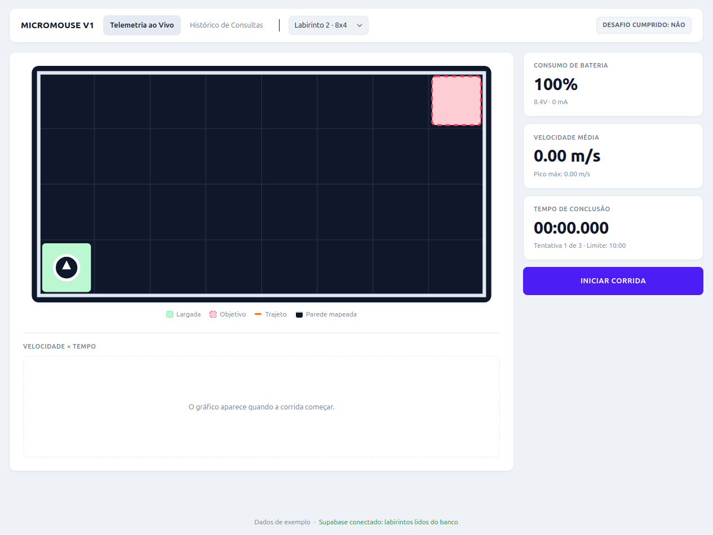
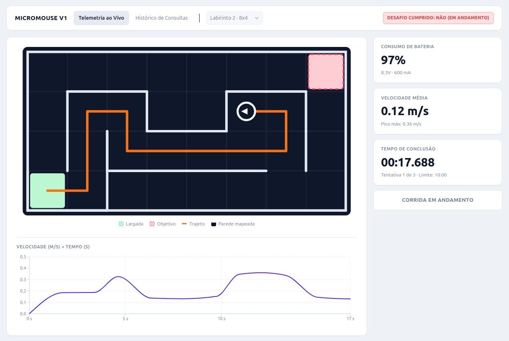
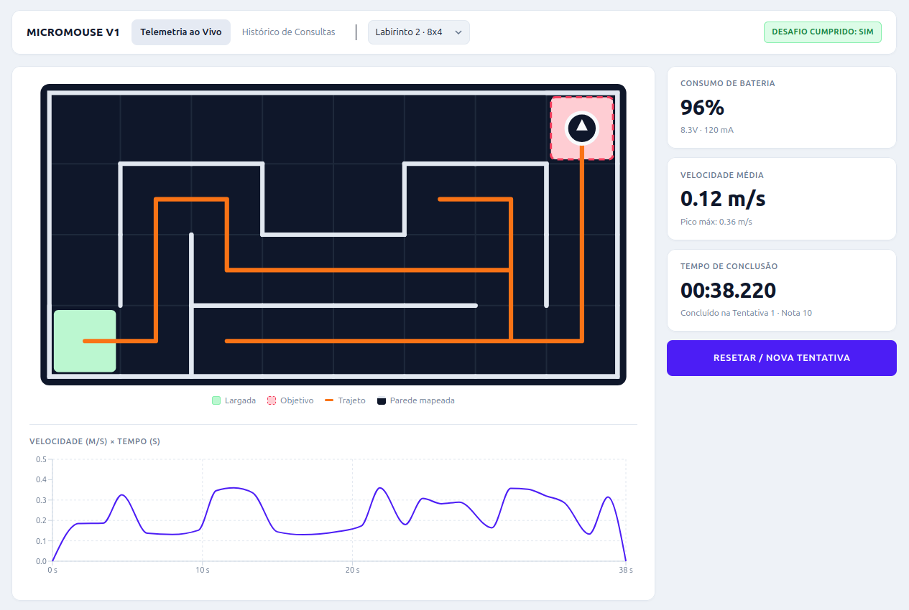
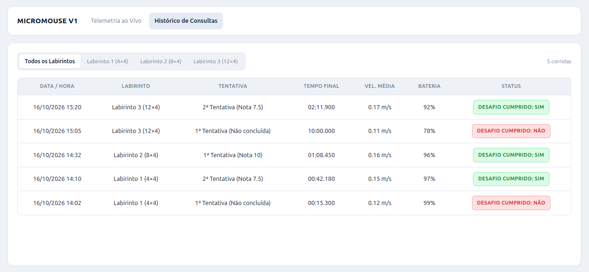

Testes de Software: registro de execução por sprint¶
Detalhamento caso a caso dos testes de cada tarefa, com ambiente, comandos, saídas e verificações. O resumo da ED1, com os resultados, a cobertura e a ligação com as histórias de usuário, está em Testes de software.
Registro de execução dos testes¶
Sprint 2 · Projeto base do firmware¶
| Item | Valor |
|---|---|
| Tarefa | #172 Projeto base do firmware |
| História de usuário | HU-02 · Reconhecimento de ambiente (#36), RF02 |
| Código testado | src/firmware (branch feat/firmware-base, PR #194) |
| Data da execução | 04/10/2026 |
| Executado por | Ana Carolina Fialho |
| Documentação do código | Firmware: implementação |
Ambiente de execução
| Componente | Versão |
|---|---|
| Sistema operacional | macOS (Apple Silicon) |
| PlatformIO Core | 6.2.0 |
| Plataforma de testes no computador | native 1.2.1 |
| Framework de testes | Unity 2.6.1 |
| Plataforma da placa | Espressif 32 7.1.3 (ESP32-C3-DevKitM-1, 160 MHz, 320 KB de RAM, 4 MB de Flash) |
| Compilador da placa | toolchain-riscv32-esp 8.4.0+2021r2-patch5 |
| Framework da placa | framework-arduinoespressif32 4.20017 |
Testes unitários (ambiente native)¶
Comando, executado em src/firmware:
| Suíte | Casos | Resultado | Duração |
|---|---|---|---|
test_simulacao |
6 | 6 aprovados | 0,97 s |
test_nucleo |
4 | 4 aprovados | 0,78 s |
| Total | 10 | 10 aprovados, 0 falhas | 1,75 s |
Os tempos são da segunda execução. Na primeira, a suíte test_simulacao levou 8,99 s porque o PlatformIO baixou a plataforma native, o SCons e o Unity.
| Caso de teste | O que verifica | HU / tarefa | Resultado |
|---|---|---|---|
test_girar_direita_percorre_as_quatro_direcoes |
Norte → Leste → Sul → Oeste → Norte | HU-03 (base para #176 e #177) | Aprovado |
test_girar_esquerda_desfaz_girar_direita |
O giro à esquerda é o inverso do giro à direita | HU-03 (base para #176 e #177) | Aprovado |
test_oposta_inverte_a_direcao |
Norte ↔ Sul, Leste ↔ Oeste | HU-03 (base para #176 e #177) | Aprovado |
test_direcao_absoluta_converte_lado_do_robo_em_direcao_do_labirinto |
Frente, esquerda e direita convertidas em direção do labirinto | HU-02 e HU-03 (#177) | Aprovado |
test_sem_leitura_configurada_a_leitura_falha |
Sem leitura configurada, o LiDAR simulado falha | HU-02 (#172, #174) | Aprovado |
test_leitura_fixa_se_repete_a_cada_chamada |
A leitura fixa se repete a cada chamada | HU-02 (#172, #174) | Aprovado |
test_fila_entrega_as_leituras_em_ordem_e_depois_volta_para_a_fixa |
Leituras enfileiradas saem em ordem e depois volta a leitura fixa | HU-02 (#172, #174) | Aprovado |
test_falha_simulada_retorna_false_e_nao_consome_a_fila |
Falha do sensor não perde leituras da fila | HU-02 (#172) e HU-13 | Aprovado |
test_fila_cheia_recusa_novas_leituras |
A fila recusa leituras além da capacidade (16) | HU-02 (#172) | Aprovado |
test_pode_ser_usado_pela_interface_ILidar |
O simulado funciona por meio da interface ILidar |
HU-02 (#172, #173) | Aprovado |
Saída do PlatformIO (resumo):
Processing test_simulacao in native environment
test/test_simulacao/test_lidar_simulado.cpp:85: test_sem_leitura_configurada_a_leitura_falha [PASSED]
test/test_simulacao/test_lidar_simulado.cpp:86: test_leitura_fixa_se_repete_a_cada_chamada [PASSED]
test/test_simulacao/test_lidar_simulado.cpp:87: test_fila_entrega_as_leituras_em_ordem_e_depois_volta_para_a_fixa [PASSED]
test/test_simulacao/test_lidar_simulado.cpp:88: test_falha_simulada_retorna_false_e_nao_consome_a_fila [PASSED]
test/test_simulacao/test_lidar_simulado.cpp:89: test_fila_cheia_recusa_novas_leituras [PASSED]
test/test_simulacao/test_lidar_simulado.cpp:90: test_pode_ser_usado_pela_interface_ILidar [PASSED]
---------------------------------- native:test_simulacao [PASSED] Took 0.97 seconds ----------------------------------
Processing test_nucleo in native environment
test/test_nucleo/test_direcao.cpp:45: test_girar_direita_percorre_as_quatro_direcoes [PASSED]
test/test_nucleo/test_direcao.cpp:46: test_girar_esquerda_desfaz_girar_direita [PASSED]
test/test_nucleo/test_direcao.cpp:47: test_oposta_inverte_a_direcao [PASSED]
test/test_nucleo/test_direcao.cpp:48: test_direcao_absoluta_converte_lado_do_robo_em_direcao_do_labirinto [PASSED]
----------------------------------- native:test_nucleo [PASSED] Took 0.78 seconds -----------------------------------
Environment Test Status Duration
------------- -------------- -------- ------------
native test_simulacao PASSED 00:00:00.971
native test_nucleo PASSED 00:00:00.776
==================================== 10 test cases: 10 succeeded in 00:00:01.747 ====================================
A execução filtrada (pio test -e native -f test_simulacao) também aprovou os 6 casos da suíte, em 0,89 s.
Compilação para a placa (ambiente esp32c3)¶
Comando, executado em src/firmware:
| Verificação | Resultado |
|---|---|
Compilação e geração do firmware.bin |
Sucesso |
| Uso de RAM | 4,2% (13 748 de 327 680 bytes) |
| Uso de Flash | 18,9% (247 704 de 1 310 720 bytes) |
| Duração | 143,9 s na primeira execução, incluindo o download da plataforma, do compilador e do Arduino Core |
RAM: [ ] 4.2% (used 13748 bytes from 327680 bytes)
Flash: [== ] 18.9% (used 247704 bytes from 1310720 bytes)
Building .pio/build/esp32c3/firmware.bin
Successfully created esp32c3 image.
=========================================== [SUCCESS] Took 143.89 seconds ===========================================
Verificação de detecção de falhas (teste negativo)¶
Para confirmar que os testes detectam erros, e não apenas passam, um caso foi alterado de propósito para esperar um resultado errado e depois restaurado.
| Etapa | Ação | Resultado |
|---|---|---|
| 1 | Na linha 21 de test/test_nucleo/test_direcao.cpp, o valor esperado de girarDireita(Norte) foi trocado de Leste para Sul |
Teste propositalmente incorreto |
| 2 | pio test -e native -f test_nucleo |
Falha detectada na linha 21: Expected 2 Was 1 |
| 3 | Linha restaurada para Leste |
Código idêntico ao da execução registrada acima (10 de 10 aprovados) |
test/test_nucleo/test_direcao.cpp:21: test_girar_direita_percorre_as_quatro_direcoes: Expected 2 Was 1 [FAILED]
test/test_nucleo/test_direcao.cpp:46: test_girar_esquerda_desfaz_girar_direita [PASSED]
test/test_nucleo/test_direcao.cpp:47: test_oposta_inverte_a_direcao [PASSED]
test/test_nucleo/test_direcao.cpp:48: test_direcao_absoluta_converte_lado_do_robo_em_direcao_do_labirinto [PASSED]
Program received signal SIGHUP (Hangup: 1)
----------------------------------- native:test_nucleo [ERRORED] Took 1.37 seconds -----------------------------------
================================ 5 test cases: 1 failed, 3 succeeded in 00:00:01.370 ================================
Interpretação da saída:
:21:indica a linha da verificação que falhou, exatamente a que foi alterada.Expected 2 Was 1: o Unity compara as direções pelo valor numérico (Norte = 0, Leste = 1, Sul = 2, Oeste = 3). O teste esperavaSul(2) e a função devolveuLeste(1), que é o resultado correto de um giro à direita a partir do Norte.- Ao encontrar a primeira verificação que falha, o Unity encerra aquele caso e segue para os próximos; por isso os outros 3 casos continuam aprovados.
Program received signal SIGHUP (Hangup: 1)e o statusERROREDnão indicam um travamento: omaindo teste retornaUNITY_END(), que é o número de falhas (1). O PlatformIO trata esse código de saída diferente de zero como erro do programa e o conta como mais um item no resumo, daí os "5 test cases" (4 casos + o erro de execução).
Pendências desta etapa¶
- Cobertura de código: ainda não medida. O relatório de cobertura (meta de 80%) entra com o CI do firmware (#223).
- Teste na placa: o firmware foi compilado, mas ainda não gravado no ESP32-C3. O teste de bancada com o LiDAR real está previsto para 13 e 14/10 (#175), depois de validado o uso dos pinos GPIO20/21, que coincidem com a UART0 do
Serial.
Sprint 2 · Classificação parede/livre¶
| Item | Valor |
|---|---|
| Tarefa | #174 Classificação parede/livre |
| História de usuário | HU-02 · Reconhecimento de ambiente (#36), RF02 |
| Código testado | src/firmware (branch feat/174-classificador-parede-livre) |
| Data da execução | 05/10/2026 |
| Executado por | Rafael Lima |
| Documentação do código | Firmware: implementação |
Ambiente de execução
| Componente | Versão |
|---|---|
| Sistema operacional | Computador Host (Linux / macOS / Windows) |
| PlatformIO Core | 6.2.0 |
| Plataforma de testes no computador | native 1.2.1 |
| Framework de testes | Unity 2.6.1 |
Testes unitários (ambiente native)¶
Comando executado em src/firmware:
| Suíte | Casos | Resultado | Duração |
|---|---|---|---|
test_percepcao |
6 | 6 aprovados | 0,80 s |
Casos de teste¶
| Caso de teste | O que verifica | HU / tarefa | Resultado |
|---|---|---|---|
test_classificador_parede_proxima |
Obstáculo próximo (médias < 180 mm) classificado como Parede | HU-02 (#174) | Aprovado |
test_classificador_passagem_livre |
Passagem desimpedida (médias > 180 mm) classificada como Livre | HU-02 (#174) | Aprovado |
test_classificador_valor_no_limiar |
Limite exato de 180 mm (<= 180 mm Parede, > 180 mm Livre) | HU-02 (#174) | Aprovado |
test_classificador_limiar_configuravel |
Alteração e consulta do limiar dinâmico em tempo de execução | HU-02 (#174) | Aprovado |
test_classificador_leituras_com_ruido |
Atenuação de picos isolados de ruído via média de amostras | HU-02 (#174) | Aprovado |
test_classificador_vetor_vazio |
Vetor de amostras vazio assume Desconhecido por segurança (fail-safe) | HU-02 (#174) | Aprovado |
Saída do PlatformIO¶
Processing test_percepcao in native environment
test/test_percepcao/test_classificador.cpp: test_classificador_parede_proxima [PASSED]
test/test_percepcao/test_classificador.cpp: test_classificador_passagem_livre [PASSED]
test/test_percepcao/test_classificador.cpp: test_classificador_valor_no_limiar [PASSED]
test/test_percepcao/test_classificador.cpp: test_classificador_limiar_configuravel [PASSED]
test/test_percepcao/test_classificador.cpp: test_classificador_leituras_com_ruido [PASSED]
test/test_percepcao/test_classificador.cpp: test_classificador_vetor_vazio [PASSED]
----------------------------------
native:test_percepcao [PASSED] Took 0.80 seconds
----------------------------------
=================================== 6 test cases: 6 succeeded in 00:00:00.800 ===================================
Suíte completa com cobertura (o mesmo comando do CI)¶
pio test -e native_cobertura
gcovr --root . --filter 'lib/' --object-directory .pio/build/native_cobertura --fail-under-line 80
| Verificação | Resultado |
|---|---|
| Testes existentes (núcleo, simulação, percepção, mapa e LiDAR) | 72 aprovados, 0 falhas |
| Testes novos do simulador | 19 aprovados, 0 falhas |
Cobertura das linhas de lib/ |
98% (556 de 562), acima da meta de 80% |
Cobertura de LabirintoSimulado.cpp |
99% (115 de 116); a linha fora é o return depois do switch de temParede, que nunca é alcançado e existe para o compilador |
Compilação para a placa¶
| Verificação | Resultado |
|---|---|
| Compilação | Sucesso |
| Uso de RAM | 4,2% (13 748 de 327 680 bytes) |
| Uso de Flash | 18,9% (247 640 de 1 310 720 bytes) |
O uso de memória não mudou, porque o simulador só é usado nos testes do computador e não entra no firmware da placa.
Validação dos labirintos de exemplo¶
Os três labirintos de test/test_labirinto_simulado/LabirintosExemplo.h têm o perímetro fechado e todas as células alcançáveis a partir de (0, 0). Essas duas propriedades são conferidas pelos testes a cada execução (test_recusa_perimetro_aberto e test_todas_as_celulas_dos_exemplos_sao_alcancaveis_da_partida):
| Labirinto | Formato | Perímetro | Células alcançáveis a partir de (0, 0) |
|---|---|---|---|
| 4×4 | Válido | Fechado | 16 de 16 |
| 8×4 | Válido | Fechado | 32 de 32 (a primeira versão tinha 16 de 32 e foi redesenhada) |
| 12×4 | Válido | Fechado | 48 de 48 |
A tabela de leituras esperadas do 4×4, escrita à mão antes da implementação, bateu com o que o LabirintoSimulado calcula nas cinco poses.
Sprint 2 · Armazenamento do mapa em memória¶
| Item | Valor |
|---|---|
| Tarefa | #179 Armazenamento do mapa em memória |
| História de usuário | HU-04 · Armazenamento local (#38), RF04 |
| Código testado | src/firmware (branch feat/179-armazenamento-mapa-memoria) |
| Data da execução | 06/10/2026 |
| Executado por | Marllon Fausto |
| Documentação do código | README do firmware |
Ambiente de execução
| Componente | Versão |
|---|---|
| Sistema operacional | Linux 7.0 |
| PlatformIO Core | 6.2.0 |
| Plataforma de testes no computador | native 1.2.1 |
| Framework de testes | Unity 2.6.1 |
| Plataforma da placa | espressif32 7.1.3 (ESP32-C3, toolchain riscv32-esp 8.4.0) |
Testes unitários (ambiente native)¶
Comando executado em src/firmware:
| Suíte | Casos | Resultado | Duração |
|---|---|---|---|
test_armazenamento_mapa |
9 | 9 aprovados | 0,24 s |
A suíte completa (pio test -e native) também foi executada: 81 casos, 81 aprovados.
O reinício do estado de navegação é simulado por uma NavegacaoFalsa, que recebe o mapa emprestado e guarda a própria posição; destruir e recriar esse objeto equivale a reiniciar a navegação. Além dos casos abaixo, o arquivo de teste confere em tempo de compilação (static_assert) que o ArmazenamentoMapa não pode ser copiado nem atribuído e que o acesso const ao mapa é somente leitura.
Casos de teste¶
| Caso de teste | O que verifica | Critério da #179 | Resultado |
|---|---|---|---|
test_comeca_sem_corrida_iniciada |
Antes de iniciarCorrida() não há corrida e o mapa é 4×4 vazio; depois, a corrida está iniciada |
— | Aprovado |
test_corrida_12x4_comporta_todas_as_paredes |
Pelo armazenamento, o labirinto 12×4 aceita todas as paredes internas e as devolve pelos dois lados | 1 | Aprovado |
test_mapa_preservado_apos_reiniciar_navegacao |
Após destruir e recriar a navegação, o mapa é idêntico (==) à cópia feita antes do reinício |
2 | Aprovado |
test_mapa_preservado_apos_varios_reinicios |
Em 10 ciclos de registrar e reiniciar, nenhuma parede de ciclos anteriores se perde | 2 | Aprovado |
test_navegacao_recriada_enxerga_paredes_anteriores |
A navegação nova encontra as paredes registradas pela anterior | 2 | Aprovado |
test_mapa_e_sempre_o_mesmo_objeto |
mapa() devolve sempre o mesmo objeto, inclusive após uma nova corrida, então uma referência guardada nunca fica inválida |
2 | Aprovado |
test_nova_corrida_zera_o_mapa |
Uma nova corrida volta o mapa ao estado inicial (perímetro Parede, interior Desconhecido) |
2 | Aprovado |
test_nova_corrida_pode_trocar_o_tamanho |
Uma nova corrida pode trocar o labirinto de 4×4 para 12×4 | 1 | Aprovado |
test_armazenamento_ocupa_pouca_memoria |
sizeof(ArmazenamentoMapa) é de no máximo 256 bytes |
3 | Aprovado |
Para confirmar que os testes detectam falhas, a classe foi alterada de propósito e restaurada em seguida: com iniciarCorrida() sem zerar o mapa, 5 casos falharam; permitindo a cópia do armazenamento, o arquivo de teste deixou de compilar com a mensagem do static_assert.
Uso de memória (critério 3)¶
Medido compilando o firmware para a placa (pio run -e esp32c3), sem e com o ArmazenamentoMapa em src/main.cpp:
| Medida | Sem o mapa | Com o mapa | Diferença |
|---|---|---|---|
RAM estática (.data + .bss) |
13.748 bytes | 13.940 bytes | +192 bytes |
| Flash | 247.562 bytes | 247.788 bytes | +226 bytes |
- O objeto
armazenamentoMapaocupa 196 bytes na seção.bss(riscv32-esp-elf-nm -S:000000c4 b armazenamentoMapa): 195 bytes doMapa(48 células × 4 paredes × 1 byte, mais dimensão, linhas e colunas) e 1 byte do indicador de corrida. O valor coincide com osizeofno computador. - A RAM estática cresce 4 bytes menos que o tamanho do objeto porque parte dele ocupou o enchimento de alinhamento que já existia na
.bss. - O mapa usa cerca de 0,06% dos 320 KB de RAM do ESP32-C3; o firmware inteiro usa 4,3%.
- O aumento de Flash é o código que constrói o mapa na partida (preenchimento do perímetro).
- As pilhas das tarefas do FreeRTOS (2 × 4.096 bytes) são reservadas durante a execução e não entram nessa conta. O mapa não fica nelas, e é isso que o preserva quando uma tarefa é reiniciada.
Saída do PlatformIO¶
Processing test_armazenamento_mapa in native environment
test/test_armazenamento_mapa/test_armazenamento_mapa.cpp:231: test_comeca_sem_corrida_iniciada [PASSED]
test/test_armazenamento_mapa/test_armazenamento_mapa.cpp:232: test_corrida_12x4_comporta_todas_as_paredes [PASSED]
test/test_armazenamento_mapa/test_armazenamento_mapa.cpp:233: test_mapa_preservado_apos_reiniciar_navegacao [PASSED]
test/test_armazenamento_mapa/test_armazenamento_mapa.cpp:234: test_mapa_preservado_apos_varios_reinicios [PASSED]
test/test_armazenamento_mapa/test_armazenamento_mapa.cpp:235: test_navegacao_recriada_enxerga_paredes_anteriores [PASSED]
test/test_armazenamento_mapa/test_armazenamento_mapa.cpp:236: test_mapa_e_sempre_o_mesmo_objeto [PASSED]
test/test_armazenamento_mapa/test_armazenamento_mapa.cpp:237: test_nova_corrida_zera_o_mapa [PASSED]
test/test_armazenamento_mapa/test_armazenamento_mapa.cpp:238: test_nova_corrida_pode_trocar_o_tamanho [PASSED]
test/test_armazenamento_mapa/test_armazenamento_mapa.cpp:239: test_armazenamento_ocupa_pouca_memoria [PASSED]
---------- native:test_armazenamento_mapa [PASSED] Took 0.24 seconds ----------
================== 9 test cases: 9 succeeded in 00:00:00.244 ==================
RAM: [ ] 4.3% (used 13940 bytes from 327680 bytes)
Flash: [== ] 18.9% (used 247788 bytes from 1310720 bytes)
Sprint 2 · Simulador de labirinto¶
| Item | Valor |
|---|---|
| Tarefa | #224 Simulador de labirinto (LabirintoSimulado) |
| História de usuário | HU-02 · Reconhecimento de ambiente (#36), RF02 |
| Código testado | src/firmware (branch feat/labirinto-simulado) |
| Data da execução | 08/10/2026 |
| Executado por | Cláudio Henrique |
| Documentação do código | Labirinto simulado |
Esta etapa implementou o LabirintoSimulado (carga do texto, validação, consulta de paredes e distâncias) e o modo labirinto do LidarSimulado. Os 15 testes ignorados da etapa anterior foram implementados e outros quatro foram acrescentados.
Ambiente de execução: o mesmo da Sprint 2 (macOS, PlatformIO Core 6.2.0, native 1.2.1, Unity 2.6.1, Espressif 32 7.1.3), com gcovr 8.6 para a cobertura.
Testes do simulador (test_labirinto_simulado)¶
| Grupo | Testes | O que verificam |
|---|---|---|
| Carga e validação | 7 | Os exemplos 4×4, 8×4 e 12×4 carregam com as dimensões certas, com ou sem \n final; tamanho, caractere, parede incompleta e perímetro aberto são recusados com o motivo certo; texto inválido mantém o labirinto anterior |
| Consulta de paredes | 4 | Células vizinhas concordam nos três exemplos; todas as células são alcançáveis a partir de (0, 0); os quatro lados de uma célula; fora do labirinto conta como parede |
| Distâncias | 6 | Corredor, curva, beco sem saída, a tabela de cinco leituras do 4×4, corredores longos do 8×4 e do 12×4 e falha sem carga ou fora do labirinto |
LidarSimulado no modo labirinto |
2 | A leitura acompanha a pose; falha, fila e leitura fixa mantêm a ordem de prioridade |
Sprint 3 · Atualização do mapa¶
| Item | Valor |
|---|---|
| Tarefa | #177 Atualização do mapa a cada célula |
| História de usuário | HU-03 · Construir o mapa quadriculado durante o percurso (#37), RF03 |
| Código testado | src/firmware (branch feat/177-atualizacao-mapa, PR #318) |
| Data da execução | 13/10/2026 |
| Executado por | Rafael Lima e Cláudio Henrique |
| Documentação do código | Firmware: implementação |
Ambiente de execução
| Componente | Versão |
|---|---|
| Sistema operacional | Computador Host (Linux / macOS / Windows) |
| PlatformIO Core | 6.2.0 |
| Plataforma de testes no computador | native 1.2.1 |
| Framework de testes | Unity 2.6.1 |
Testes unitários e de integração (ambiente native)¶
Comandos executados em src/firmware:
| Suíte | Casos | Resultado | Duração |
|---|---|---|---|
test_atualizador_mapa |
10 | 10 aprovados | 0,44 s |
test_integracao_mapa |
5 | 5 aprovados | 0,44 s |
Casos de teste¶
| Caso de teste | O que verifica | HU / tarefa | Resultado |
|---|---|---|---|
test_registro_nova_parede |
Registra parede interior desconhecida retornando Registrada |
HU-03 (#177) | Aprovado |
test_registro_parede_ja_conhecida |
Leitura idêntica em parede já existente retorna JaConhecida |
HU-03 (#177) | Aprovado |
test_sem_conflito_ao_percorrer_labirinto |
Percorre células mantendo consistência e temConflito falso |
HU-03 (#177) | Aprovado |
test_parede_desconhecida_nao_registrada |
Classificação Desconhecido não altera o mapa e retorna Invalida |
HU-03 (#177) | Aprovado |
test_parede_compartilhada_sem_conflito |
Paredes registradas de células vizinhas coincidem por espelhamento | HU-03 (#177) | Aprovado |
test_mapa_final_identico_ao_labirinto_4x4 |
Exploração completa das células gera mapa idêntico ao labirinto | HU-03 (#177) | Aprovado |
test_conflito_preserva_mapa_e_sinaliza_tem_conflito |
Leitura contraditória marca temConflito = true e preserva valor antigo |
HU-03 (#177) | Aprovado |
test_conversao_direcoes_nas_quatro_orientacoes |
Conversão correta frente/esquerda/direita \(\rightarrow\) N/L/S/O nas 4 poses | HU-03 (#177) | Aprovado |
test_pose_fora_do_mapa_retorna_invalida |
Pose fora dos limites dimensionais do mapa retorna Invalida |
HU-03 (#177) | Aprovado |
test_sobrecarga_multiplas_amostras_com_classificador |
Sobrecarga com múltiplas amostras filtra ruído e atualiza o mapa | HU-03 (#177) | Aprovado |
test_mapa_final_identico_ao_labirinto_4x4 (integração) |
Robô simulado explora labirinto 4×4 e mapa fica idêntico | HU-03 (#177) | Aprovado |
test_mapa_final_identico_ao_labirinto_8x4 |
Robô simulado explora labirinto 8×4 e mapa fica idêntico | HU-03 (#177) | Aprovado |
test_mapa_final_identico_ao_labirinto_12x4 |
Robô simulado explora labirinto 12×4 e mapa fica idêntico | HU-03 (#177) | Aprovado |
test_mapa_nao_e_identico_antes_de_explorar |
Mapa inicial difere do labirinto antes da exploração | HU-03 (#177) | Aprovado |
test_uma_celula_registra_so_as_tres_paredes_que_o_sensor_ve |
Registra apenas as paredes observadas na célula atual | HU-03 (#177) | Aprovado |
Suíte completa com cobertura (o mesmo comando do CI)¶
pio test -e native_cobertura
gcovr --root . --filter 'lib/' --object-directory .pio/build/native_cobertura --fail-under-line 80
| Verificação | Resultado |
|---|---|
Suíte completa (com a main mesclada) |
115 aprovados, 0 falhas |
Cobertura das linhas de lib/ |
99% (592 de 598), acima da meta de 80% |
Cobertura de AtualizadorMapa.cpp |
100% (22 de 22) |
Saída do PlatformIO¶
Processing test_atualizador_mapa in native environment
test/test_atualizador_mapa/test_atualizador_mapa.cpp: test_registro_nova_parede [PASSED]
test/test_atualizador_mapa/test_atualizador_mapa.cpp: test_registro_parede_ja_conhecida [PASSED]
test/test_atualizador_mapa/test_atualizador_mapa.cpp: test_sem_conflito_ao_percorrer_labirinto [PASSED]
test/test_atualizador_mapa/test_atualizador_mapa.cpp: test_parede_desconhecida_nao_registrada [PASSED]
test/test_atualizador_mapa/test_atualizador_mapa.cpp: test_parede_compartilhada_sem_conflito [PASSED]
test/test_atualizador_mapa/test_atualizador_mapa.cpp: test_mapa_final_identico_ao_labirinto_4x4 [PASSED]
test/test_atualizador_mapa/test_atualizador_mapa.cpp: test_conflito_preserva_mapa_e_sinaliza_tem_conflito [PASSED]
test/test_atualizador_mapa/test_atualizador_mapa.cpp: test_conversao_direcoes_nas_quatro_orientacoes [PASSED]
test/test_atualizador_mapa/test_atualizador_mapa.cpp: test_pose_fora_do_mapa_retorna_invalida [PASSED]
test/test_atualizador_mapa/test_atualizador_mapa.cpp: test_sobrecarga_multiplas_amostras_com_classificador [PASSED]
----------------------------------
native:test_atualizador_mapa [PASSED] Took 0.44 seconds
----------------------------------
Processing test_integracao_mapa in native environment
test/test_integracao_mapa/test_integracao_mapa.cpp: test_mapa_final_identico_ao_labirinto_4x4 [PASSED]
test/test_integracao_mapa/test_integracao_mapa.cpp: test_mapa_final_identico_ao_labirinto_8x4 [PASSED]
test/test_integracao_mapa/test_integracao_mapa.cpp: test_mapa_final_identico_ao_labirinto_12x4 [PASSED]
test/test_integracao_mapa/test_integracao_mapa.cpp: test_mapa_nao_e_identico_antes_de_explorar [PASSED]
test/test_integracao_mapa/test_integracao_mapa.cpp: test_uma_celula_registra_so_as_tres_paredes_que_o_sensor_ve [PASSED]
----------------------------------
native:test_integracao_mapa [PASSED] Took 0.44 seconds
----------------------------------
=================================== 15 test cases: 15 succeeded ===================================
Sprint 3 · Formato JSON do mapa¶
| Item | Valor |
|---|---|
| Tarefa | #178 Formato JSON do mapa |
| História de usuário | HU-03 · Construir o mapa quadriculado durante o percurso (#37), RF03 |
| Código testado | src/firmware (branch feat/178-json-mapa, PR #322) |
| Data da execução | 15/10/2026 |
| Executado por | Marllon Fausto |
| Documentação do código | Firmware: implementação |
Ambiente de execução
| Componente | Versão |
|---|---|
| Sistema operacional | Linux (Ubuntu 22.04.5, kernel 6.8) |
| PlatformIO Core | 6.2.0 |
| Plataforma de testes no computador | native 1.2.1 |
| Framework de testes | Unity 2.6.1 |
| ArduinoJson | 7.4.2 |
Testes unitários (ambiente native)¶
Comando executado em src/firmware:
| Suíte | Casos | Resultado | Duração |
|---|---|---|---|
test_json_mapa |
22 | 22 aprovados | 4,0 s |
A suíte completa com cobertura (pio test -e native_cobertura) também foi executada: 103 casos, 103 aprovados, com lib/comunicacao/src/MapaJson.cpp em 100% de cobertura de linhas (37 de 37) e lib/ no total em 99%.
Casos de teste¶
| Caso de teste | O que verifica | HU / tarefa | Resultado |
|---|---|---|---|
test_mapa_vazio_4x4_tem_so_o_perimetro_conhecido |
Mapa novo: só o perímetro sai como true, o resto como null |
HU-03 (#178) | Aprovado |
test_cabecalho_traz_dimensao_linhas_e_colunas |
Início do JSON do 12×4 traz dimensao, linhas e colunas corretos |
HU-03 (#178) | Aprovado |
test_parede_livre_e_parede_viram_false_e_true |
EstadoParede::Parede vira true e Livre vira false |
HU-03 (#178) | Aprovado |
test_parede_registrada_aparece_nas_duas_celulas_vizinhas |
A mesma parede aparece espelhada nas duas células que ela separa | HU-03 (#178) | Aprovado |
test_json_tem_exatamente_os_campos_combinados_para_a_telemetria |
Objeto raiz com 4 campos e cada célula com 6, sem campo a mais ou a menos | HU-03 (#178) | Aprovado |
test_json_sai_compacto_sem_espacos_nem_quebras_de_linha |
Saída sem espaço, tab ou quebra de linha | HU-03 (#178) | Aprovado |
test_dimensao_combina_com_as_linhas_e_as_colunas_nos_tres_tamanhos |
"4x4"/4/4, "8x4"/4/8 e "12x4"/4/12 nos três tamanhos da competição |
HU-03 (#178) | Aprovado |
test_serializa_mapa_4x4_completo |
Mapa 4×4 com todas as paredes internas: ida e volta bate célula a célula | HU-03 (#178) | Aprovado |
test_serializa_mapa_8x4 |
Mapa 8×4 parcialmente preenchido: ida e volta bate célula a célula | HU-03 (#178) | Aprovado |
test_serializa_mapa_12x4_completo |
Mapa 12×4 com todas as paredes internas, dentro de TAMANHO_MAX_JSON_MAPA |
HU-03 (#178) | Aprovado |
test_serializa_mapa_12x4_parcial |
Mapa 12×4 com poucas paredes conhecidas, como no meio de uma corrida | HU-03 (#178) | Aprovado |
test_mapa_12x4_completo_e_reconstruido_a_partir_do_json |
O JSON do 12×4 completo remonta um Mapa idêntico (==) ao original |
HU-03 (#178) | Aprovado |
test_mapa_parcial_reconstruido_mantem_as_paredes_desconhecidas |
null volta como Desconhecido, não como Livre, na reconstrução |
HU-03 (#178) | Aprovado |
test_serializar_nao_altera_o_mapa |
serializar não muda o Mapa original |
HU-03 (#178), HU-04 | Aprovado |
test_serializacoes_repetidas_do_mesmo_mapa_geram_o_mesmo_json |
Duas serializações do mesmo mapa produzem o mesmo texto | HU-03 (#178) | Aprovado |
test_pior_caso_cabe_em_tamanho_max_json_mapa |
12×4 com todas as paredes Livre (o pior caso) cabe em TAMANHO_MAX_JSON_MAPA, com folga menor que 10% |
HU-03 (#178) | Aprovado |
test_buffer_pequeno_devolve_zero_e_deixa_string_vazia |
Buffer pequeno demais devolve 0 e deixa string vazia |
HU-03 (#178) | Aprovado |
test_buffer_com_o_tamanho_exato_serve_e_um_a_menos_nao |
Capacidade exata (JSON + \0) funciona; um byte a menos falha |
HU-03 (#178) | Aprovado |
test_buffer_nulo_ou_sem_capacidade_devolve_zero |
Buffer nulo ou capacidade zero devolvem 0 |
HU-03 (#178) | Aprovado |
test_nao_escreve_depois_do_fim_da_capacidade_informada |
Nada é escrito além da capacidade informada, no sucesso e na falha (checado por sentinela) | HU-03 (#178) | Aprovado |
test_capacidade_de_um_byte_devolve_zero_e_string_vazia |
Capacidade de 1 byte devolve 0 e grava só o \0 |
HU-03 (#178) | Aprovado |
test_dimensao_fora_do_enum_sai_como_texto_vazio |
Valor fora do enum DimensaoMapa sai com dimensao vazio, sem travar (fail-safe) |
HU-03 (#178) | Aprovado |
Saída do PlatformIO¶
Processing test_json_mapa in native environment
test/test_json_mapa/test_json_mapa.cpp:419: test_mapa_vazio_4x4_tem_so_o_perimetro_conhecido [PASSED]
test/test_json_mapa/test_json_mapa.cpp:420: test_cabecalho_traz_dimensao_linhas_e_colunas [PASSED]
test/test_json_mapa/test_json_mapa.cpp:421: test_parede_livre_e_parede_viram_false_e_true [PASSED]
test/test_json_mapa/test_json_mapa.cpp:422: test_parede_registrada_aparece_nas_duas_celulas_vizinhas [PASSED]
test/test_json_mapa/test_json_mapa.cpp:423: test_json_tem_exatamente_os_campos_combinados_para_a_telemetria [PASSED]
test/test_json_mapa/test_json_mapa.cpp:424: test_json_sai_compacto_sem_espacos_nem_quebras_de_linha [PASSED]
test/test_json_mapa/test_json_mapa.cpp:425: test_dimensao_combina_com_as_linhas_e_as_colunas_nos_tres_tamanhos [PASSED]
test/test_json_mapa/test_json_mapa.cpp:427: test_serializa_mapa_4x4_completo [PASSED]
test/test_json_mapa/test_json_mapa.cpp:428: test_serializa_mapa_8x4 [PASSED]
test/test_json_mapa/test_json_mapa.cpp:429: test_serializa_mapa_12x4_completo [PASSED]
test/test_json_mapa/test_json_mapa.cpp:430: test_serializa_mapa_12x4_parcial [PASSED]
test/test_json_mapa/test_json_mapa.cpp:432: test_mapa_12x4_completo_e_reconstruido_a_partir_do_json [PASSED]
test/test_json_mapa/test_json_mapa.cpp:433: test_mapa_parcial_reconstruido_mantem_as_paredes_desconhecidas [PASSED]
test/test_json_mapa/test_json_mapa.cpp:434: test_serializar_nao_altera_o_mapa [PASSED]
test/test_json_mapa/test_json_mapa.cpp:435: test_serializacoes_repetidas_do_mesmo_mapa_geram_o_mesmo_json [PASSED]
test/test_json_mapa/test_json_mapa.cpp:437: test_pior_caso_cabe_em_tamanho_max_json_mapa [PASSED]
test/test_json_mapa/test_json_mapa.cpp:438: test_buffer_pequeno_devolve_zero_e_deixa_string_vazia [PASSED]
test/test_json_mapa/test_json_mapa.cpp:439: test_buffer_com_o_tamanho_exato_serve_e_um_a_menos_nao [PASSED]
test/test_json_mapa/test_json_mapa.cpp:440: test_buffer_nulo_ou_sem_capacidade_devolve_zero [PASSED]
test/test_json_mapa/test_json_mapa.cpp:441: test_nao_escreve_depois_do_fim_da_capacidade_informada [PASSED]
test/test_json_mapa/test_json_mapa.cpp:442: test_capacidade_de_um_byte_devolve_zero_e_string_vazia [PASSED]
test/test_json_mapa/test_json_mapa.cpp:444: test_dimensao_fora_do_enum_sai_como_texto_vazio [PASSED]
-------------- native:test_json_mapa [PASSED] Took 4.00 seconds --------------
=================================== 22 test cases: 22 succeeded in 00:00:03.999 ===================================
Validação do formato com as outras equipes¶
O formato foi confirmado com a equipe do dashboard e do banco antes da integração (critério 3 da #178):
| Equipe | Resposta | Efeito |
|---|---|---|
| Dashboard (#239) | O JSON atende; null será tratado como área não explorada |
Formato mantido como está |
| Banco (#228) | Não há requisito de NOT NULL; a tabela mapa_celulas passou a aceitar null nas colunas parede_* (BOOLEAN) no PR #328 |
O firmware pode enviar null para parede desconhecida |
Pendências desta etapa¶
- Testar o envio de fato da lista de células à tabela
mapa_celulas(via PostgREST, com ocorrida_idacrescentado), que entra com a telemetria (Épico 03).
Sprint 3 · Mapa final serializado¶
| Item | Valor |
|---|---|
| Tarefa | #180 Mapa final serializado |
| História de usuário | HU-04 · Armazenamento local (#38), RF04 |
| Código testado | src/firmware (branch feat/180-mapa-final-serializado, PR #330, na main desde 16/10/2026) |
| Data da execução | 16/10/2026 |
| Executado por | Eduardo Viana |
| Documentação do código | Firmware: mapa final da corrida |
Ambiente de execução
| Componente | Versão |
|---|---|
| Sistema operacional | Linux (Ubuntu 24.04.5 LTS, kernel 7.0) |
| PlatformIO Core | 6.2.0 |
| Plataforma de testes no computador | native 1.2.1 |
| Framework de testes | Unity 2.6.1 |
| ArduinoJson | 7.4.2 |
O que mudou no código¶
| Arquivo | Mudança |
|---|---|
lib/mapeamento/src/ArmazenamentoMapa.h/.cpp |
congelarMapa(), mapaCongelado() e mapaFinal(); o mapa final é uma cópia (mapaFinal_) feita no congelamento, e iniciarCorrida() destrava o congelamento |
lib/comunicacao/src/MapaJson.h/.cpp |
serializarFinal(), que serializa o mapa final no formato da #178 e devolve 0 se o mapa não foi congelado |
test/test_mapa_final/test_mapa_final.cpp |
Suíte nova, um caso por critério de aceite e um de isolamento |
test/test_armazenamento_mapa/test_armazenamento_mapa.cpp |
Caso novo test_congelamento_do_mapa; o limite de memória subiu de 256 para 512 bytes, porque o objeto agora guarda dois mapas (392 bytes) |
Testes unitários e de integração (ambiente native)¶
Comando executado em src/firmware:
| Suíte | Casos | Resultado | Duração |
|---|---|---|---|
test_mapa_final |
4 | 4 aprovados | 13,14 s |
test_armazenamento_mapa |
10 | 10 aprovados | 1,29 s |
A suíte completa com cobertura (pio test -e native_cobertura, o mesmo comando do CI) também foi executada: 142 casos, 142 aprovados, e o gcovr mediu 99% de cobertura das linhas de lib/ (557 de 561), acima da meta de 80%.
A duração de test_mapa_final inclui a compilação na primeira execução, quando o PlatformIO também baixou a plataforma native, o Unity e o ArduinoJson.
Casos de teste¶
| Caso de teste | O que verifica | Critério da #180 | Resultado |
|---|---|---|---|
test_congelamento_ao_sinalizar_objetivo |
Antes da corrida não há mapa final; ao sinalizar o objetivo, congelarMapa() congela uma única vez (a segunda chamada devolve false) e o mapa final guarda as paredes descobertas |
1 | Aprovado |
test_serializacao_mapa_final_formato_5_3_3 |
serializarFinal devolve 0 e string vazia antes do congelamento; depois, gera JSON válido com dimensao, linhas, colunas e as 16 células do 4×4, com os campos parede_*; com buffer de 32 bytes devolve 0 |
2 | Aprovado |
test_mapa_final_testado_no_labirinto_simulado |
Com o LabirintoSimulado 4×4 e o LidarSimulado, o robô vai da partida (0, 0) ao objetivo (3, 3) atualizando o mapa sem conflito, congela ao chegar e o JSON do mapa final traz as paredes da partida e do objetivo |
3 | Aprovado |
test_mapa_final_permanece_inalterado_apos_novos_registros |
Uma parede registrada depois do congelamento aparece no mapa da corrida e no JSON de serializar(), mas o mapa final e o JSON de serializarFinal() continuam idênticos |
1 | Aprovado |
test_congelamento_do_mapa (test_armazenamento_mapa) |
Ciclo de vida completo: recusa sem corrida, recusa do segundo congelamento, isolamento da cópia e destrave com iniciarCorrida() |
1 | Aprovado |
test_armazenamento_ocupa_pouca_memoria (test_armazenamento_mapa) |
sizeof(ArmazenamentoMapa) é de no máximo 512 bytes (392 com os dois mapas) |
— | Aprovado |
Saída do PlatformIO¶
Processing test_mapa_final in native environment
--------------------------------------------------------------------------------
Building...
Testing...
test/test_mapa_final/test_mapa_final.cpp:264: test_congelamento_ao_sinalizar_objetivo [PASSED]
test/test_mapa_final/test_mapa_final.cpp:265: test_serializacao_mapa_final_formato_5_3_3 [PASSED]
test/test_mapa_final/test_mapa_final.cpp:266: test_mapa_final_testado_no_labirinto_simulado[PASSED]
test/test_mapa_final/test_mapa_final.cpp:267: test_mapa_final_permanece_inalterado_apos_novos_registros [PASSED]
-------------- native:test_mapa_final [PASSED] Took 13.14 seconds --------------
Processing test_armazenamento_mapa in native environment
--------------------------------------------------------------------------------
Building...
Testing...
test/test_armazenamento_mapa/test_armazenamento_mapa.cpp:281: test_comeca_sem_corrida_iniciada [PASSED]
test/test_armazenamento_mapa/test_armazenamento_mapa.cpp:282: test_corrida_12x4_comporta_todas_as_paredes [PASSED]
test/test_armazenamento_mapa/test_armazenamento_mapa.cpp:283: test_mapa_preservado_apos_reiniciar_navegacao [PASSED]
test/test_armazenamento_mapa/test_armazenamento_mapa.cpp:284: test_mapa_preservado_apos_varios_reinicios [PASSED]
test/test_armazenamento_mapa/test_armazenamento_mapa.cpp:285: test_navegacao_recriada_enxerga_paredes_anteriores [PASSED]
test/test_armazenamento_mapa/test_armazenamento_mapa.cpp:286: test_mapa_e_sempre_o_mesmo_objeto [PASSED]
test/test_armazenamento_mapa/test_armazenamento_mapa.cpp:287: test_nova_corrida_zera_o_mapa[PASSED]
test/test_armazenamento_mapa/test_armazenamento_mapa.cpp:288: test_nova_corrida_pode_trocar_o_tamanho [PASSED]
test/test_armazenamento_mapa/test_armazenamento_mapa.cpp:289: test_armazenamento_ocupa_pouca_memoria [PASSED]
test/test_armazenamento_mapa/test_armazenamento_mapa.cpp:290: test_congelamento_do_mapa [PASSED]
---------- native:test_armazenamento_mapa [PASSED] Took 1.29 seconds ----------
=================================== SUMMARY ===================================
Environment Test Status Duration
------------- ----------------------- -------- ------------
native test_mapa_final PASSED 00:00:13.143
native test_armazenamento_mapa PASSED 00:00:01.287
================= 14 test cases: 14 succeeded in 00:00:14.430 =================
Pendências desta etapa¶
- A navegação (Épico 02) ainda precisa chamar
congelarMapa()quando detectar a célula objetivo; por enquanto o objetivo é sinalizado pelos próprios testes. - O envio do JSON do mapa final ao servidor, vinculado à corrida criada pela Edge Function
corridas(#233), entra com a telemetria (Épico 03). - Medir no ESP32-C3 (
pio run -e esp32c3) a RAM estática doArmazenamentoMapacom o mapa final; no computador, osizeofé de 392 bytes.
Sprint 4 · Algoritmo de resolução sobre o mapa¶
| Item | Valor |
|---|---|
| Tarefa | #183 Algoritmo de resolução sobre o mapa |
| História de usuário | HU-01 · Percorrer o labirinto de forma autônoma até o objetivo (#42), RF01 |
| Código testado | src/firmware (branch feat/183-algoritmo-resolucao-mapa, commits 5e2e445 e 382aee6; PR #349) |
| Data da execução | 18/10/2026 |
| Executado por | m4rllon |
| Documentação do código | Firmware: navegação |
Ambiente de execução
| Componente | Versão |
|---|---|
| Sistema operacional | Linux (Ubuntu 24.04.4 LTS, kernel 7.0) |
| Compilador | g++ 13.3.0 (C++17) |
| Framework de testes | Unity 2.6.1 (o mesmo baixado pelo PlatformIO para o ambiente native) |
| Cobertura | gcov 13.3.0 |
O PlatformIO não estava instalado na máquina desta execução. A suíte foi compilada direto com o g++, com as mesmas pastas de lib/ e o mesmo Unity do ambiente native; o pio test -e native_cobertura e o pio run -e esp32c3 rodam no CI do PR.
Critérios de pronto da #183¶
| Critério | Como foi atendido | Casos de teste |
|---|---|---|
| Dado um mapa e a posição atual, retorna a próxima direção a seguir | darPasso() e decidirProximaDirecao() devolvem a direção da vizinha mais próxima do objetivo pelo flood fill |
test_flood_fill_mapa_vazio_4x4, test_contorno_parede_conhecida, test_sem_caminho_ate_objetivo, test_atingimento_de_objetivo |
| Testado no labirinto 4×4 simulado: encontra o caminho até o objetivo | O robô simulado vai de (0, 0) a (3, 3) no LABIRINTO_4X4; também testado no 8×4 e no 12×4 |
test_resolucao_labirinto_4x4_simulado, test_resolucao_labirinto_8x4_simulado, test_resolucao_labirinto_12x4_simulado |
| Funciona com mapas parciais (paredes ainda desconhecidas) | Os testes nos labirintos partem do mapa vazio: as paredes são descobertas pelo LiDAR simulado durante a corrida, e o flood fill trata as desconhecidas como passagem | Os mesmos três, e test_resolucao_com_falhas_de_leitura |
O que mudou no código¶
| Arquivo | Mudança |
|---|---|
lib/navegacao/src/Navegacao.h/.cpp |
Classe Navegacao: flood fill por busca em largura a partir do objetivo, escolha da vizinha de menor distância com desempate frente → direita → esquerda → trás (5e2e445) |
lib/navegacao/src/Navegacao.h/.cpp |
darPasso() passa a só decidir e registrar a célula esperada; confirmarPose() atualiza a pose com a medida dos sensores e devolve ResultadoConfirmacao (Confirmada, EmAndamento, Divergente, Invalida); avancar(), que mudava a pose sem confirmação, foi removido (382aee6) |
test/test_resolucao_mapa/test_resolucao_mapa.cpp |
Suíte nova com 12 casos: lógica de decisão, confirmação da pose e resolução dos três labirintos simulados |
Testes unitários e de integração (ambiente native)¶
Comando executado em src/firmware, com U apontando para o Unity em .pio/libdeps/native/Unity/src:
g++ -std=gnu++17 -Wall -Wextra --coverage $(for d in lib/*/src; do printf -- "-I%s " $d; done) -I$U \
test/test_resolucao_mapa/test_resolucao_mapa.cpp lib/navegacao/src/Navegacao.cpp \
lib/mapeamento/src/Mapa.cpp lib/mapeamento/src/AtualizadorMapa.cpp \
lib/percepcao/src/ClassificadorParede.cpp lib/simulacao/src/LabirintoSimulado.cpp \
$U/unity.c -o test_resolucao_mapa && ./test_resolucao_mapa
| Suíte | Casos | Resultado |
|---|---|---|
test_resolucao_mapa |
12 | 12 aprovados |
A compilação não gerou avisos com -Wall -Wextra. O gcov mediu 79% das linhas de Navegacao.cpp executadas (96 de 121). As linhas sem cobertura são o construtor com objetivo e pose escolhidos, definirPose(), definirObjetivo() e retornos de casos-limite (objetivo fora do mapa, vizinha fora do mapa); a meta de 80% do CI vale para o total de lib/.
Casos de teste¶
A coluna "Critério" se refere aos critérios de aceite da HU-01: (1) dado um mapa e a posição atual, retorna a próxima direção a seguir; (2) testado no labirinto 4×4 simulado: encontra o caminho até o objetivo; e (3) funciona com mapas parciais (paredes ainda desconhecidas).
| Caso de teste | O que verifica | Critério | Resultado |
|---|---|---|---|
test_flood_fill_mapa_vazio_4x4 |
Sem paredes internas, a distância de cada célula até (3, 3) é a de Manhattan; na partida virado para o Norte, o empate entre Norte e Leste escolhe a frente | 1, 3 | Aprovado |
test_contorno_parede_conhecida |
Com parede conhecida ao Norte da partida, a direção decidida é Leste | 1, 3 | Aprovado |
test_sem_caminho_ate_objetivo |
Partida cercada por paredes conhecidas: a célula atual fica com distância DISTANCIA_INFINITA (255) e decidirProximaDirecao() devolve false sem alterar a direção |
1 | Aprovado |
test_dar_passo_aguarda_confirmacao_dos_sensores |
darPasso() devolve Norte e registra (1, 0) como célula esperada sem mudar a pose; um segundo darPasso() é recusado |
1 | Aprovado |
test_confirmar_pose_em_andamento_e_chegada |
Pose medida na origem devolve EmAndamento e mantém o passo; na célula esperada, Confirmada e a pose vai para (1, 0) |
1 | Aprovado |
test_confirmar_pose_divergente_replaneja |
Esperando (1, 0), a pose medida (0, 1) virada para Leste devolve Divergente, é adotada, e o passo seguinte segue para Leste até (0, 2) |
1, 3 | Aprovado |
test_confirmar_pose_invalida_ignorada |
Pose (9, 9) devolve Invalida; a pose continua (0, 0) e o passo segue pendente |
1 | Aprovado |
test_atingimento_de_objetivo |
No objetivo, decidirProximaDirecao() e darPasso() devolvem false |
1 | Aprovado |
test_resolucao_labirinto_4x4_simulado |
Com o LabirintoSimulado, o LidarSimulado e o mapa vazio, o robô vai de (0, 0) a (3, 3) em menos de 50 passos; a cada passo, a parede da frente é conhecida antes da decisão, o passo não atravessa parede real e a pose é confirmada (EmAndamento e depois Confirmada) |
2, 3 | Aprovado |
test_resolucao_labirinto_8x4_simulado |
O mesmo no LABIRINTO_8X4, até (3, 7), em menos de 100 passos |
2, 3 | Aprovado |
test_resolucao_labirinto_12x4_simulado |
O mesmo no LABIRINTO_12X4, até (3, 11), em menos de 150 passos |
2, 3 | Aprovado |
test_resolucao_com_falhas_de_leitura |
Com o LiDAR falhando uma a cada 3 leituras, o robô não decide sem leitura, lê de novo e chega a (3, 3) sem atravessar parede | 2, 3 | Aprovado |
Saída da execução¶
test/test_resolucao_mapa/test_resolucao_mapa.cpp:286:test_flood_fill_mapa_vazio_4x4:PASS
test/test_resolucao_mapa/test_resolucao_mapa.cpp:287:test_contorno_parede_conhecida:PASS
test/test_resolucao_mapa/test_resolucao_mapa.cpp:288:test_sem_caminho_ate_objetivo:PASS
test/test_resolucao_mapa/test_resolucao_mapa.cpp:289:test_dar_passo_aguarda_confirmacao_dos_sensores:PASS
test/test_resolucao_mapa/test_resolucao_mapa.cpp:290:test_confirmar_pose_em_andamento_e_chegada:PASS
test/test_resolucao_mapa/test_resolucao_mapa.cpp:291:test_confirmar_pose_divergente_replaneja:PASS
test/test_resolucao_mapa/test_resolucao_mapa.cpp:292:test_confirmar_pose_invalida_ignorada:PASS
test/test_resolucao_mapa/test_resolucao_mapa.cpp:293:test_atingimento_de_objetivo:PASS
test/test_resolucao_mapa/test_resolucao_mapa.cpp:294:test_resolucao_labirinto_4x4_simulado:PASS
test/test_resolucao_mapa/test_resolucao_mapa.cpp:295:test_resolucao_labirinto_8x4_simulado:PASS
test/test_resolucao_mapa/test_resolucao_mapa.cpp:296:test_resolucao_labirinto_12x4_simulado:PASS
test/test_resolucao_mapa/test_resolucao_mapa.cpp:297:test_resolucao_com_falhas_de_leitura:PASS
-----------------------
12 Tests 0 Failures 0 Ignored
OK
Verificação de detecção de falhas (teste negativo)¶
Para confirmar que os testes pegam um robô que tenta atravessar paredes, a suíte foi compilada contra uma cópia da Navegacao em que a decisão ignora as paredes conhecidas (sem alterar o repositório). Resultado: 5 de 12 casos falharam. test_contorno_parede_conhecida falhou com Expected 1 Was 0 (decidiu Norte, através da parede), e os quatro testes de labirinto falharam com a mensagem O robô tentou atravessar uma parede real do labirinto.
Validação em labirintos aleatórios¶
Além da suíte, um programa de validação (fora do repositório) gerou 12.000 labirintos aleatórios, 2.000 por configuração: 4×4, 8×4 e 12×4, cada um sem laços (labirinto perfeito) e com até 4 paredes internas removidas (com laços). O robô partiu sempre do mapa vazio, com o mesmo ciclo dos testes (leitura, atualização do mapa, darPasso() e confirmarPose()).
| Labirinto | Resolvidos | Passos (média) | Passos (máximo) |
|---|---|---|---|
| 4×4, sem laços | 2.000 de 2.000 | 8,9 | 14 |
| 4×4, com laços | 2.000 de 2.000 | 8,0 | 14 |
| 8×4, sem laços | 2.000 de 2.000 | 17,8 | 30 |
| 8×4, com laços | 2.000 de 2.000 | 16,6 | 30 |
| 12×4, sem laços | 2.000 de 2.000 | 27,3 | 44 |
| 12×4, com laços | 2.000 de 2.000 | 25,4 | 42 |
Pendências desta etapa¶
- Rodar
pio test -e native_coberturaepio run -e esp32c3(o CI do PR faz os dois) e registrar a cobertura total delib/e o uso de memória na placa. - Ligar a
Navegacaoao robô natarefaNavegacao: o controle de movimento (#184) executa a direção decidida, e a odometria (#187, PR #343) informa a pose aconfirmarPose(). - Cobrir com testes o construtor com objetivo e pose escolhidos,
definirPose()edefinirObjetivo().
Sprint 4 · Odometria¶
| Item | Valor |
|---|---|
| Tarefa | #187 Orientação e posição na malha |
| História de usuário | HU-05 · Estimar a posição do robô por odometria (#41), RF05 |
| Código testado | src/firmware (branch feat/187-odometria) |
| Data da execução | 19/10/2026 |
| Executado por | Cláudio Henrique |
| Documentação do código | Firmware: odometria |
Esta etapa registra a lógica da odometria e a ligação no main.cpp. A calibração do giro e os testes de bancada (critério de bancada da tarefa) dependem do robô montado e estão na seção de pendências.
Ambiente de execução: macOS, PlatformIO Core 6.2.0, native 1.2.1, Unity 2.6.1 e gcovr 8.6.
Testes da odometria (test_odometria)¶
Nos testes, 1 pulso vale 250 µm e 400 pulsos de diferença entre as rodas valem 90°, então uma célula de 18 cm são 720 pulsos por roda. Os valores não dependem dos parâmetros provisórios.
| Grupo | Casos | O que verificam |
|---|---|---|
| Estado inicial | 3 | Pose inicial (0, 0) virada para o Norte; configuração padrão; sem movimento a pose não muda |
| Avanço | 5 | Uma e três células para o Norte; a célula muda ao cruzar a parede; marcha à ré; atualizar de uma vez ou em passos dá o mesmo resultado |
| Giros | 8 | 90° nos dois sentidos, 180° nos dois sentidos, quatro giros voltando ao Norte, 270°, giro no lugar sem mudar a célula, o limite de 45°, e roda um pouco mais rápida em linha reta sem girar |
| Percursos | 5 | Em L, em U, retorno à partida, serpentina completa no 12×4 e corredor de 11 células com erro de 1% em uma roda |
| Reinício e encoders | 3 | reiniciar com referência nova, leitura de dois EncoderSimulado e zerar seguido de reiniciar |
| Fora da malha | 4 | Posição negativa, acima de 255, volta para dentro e contagens extremas |
Letra da direção (test_nucleo) |
1 | N, L, S e O como na coluna orientacao do banco |
28 casos aprovados na odometria e 9 em test_nucleo.
Para confirmar que os testes detectam falhas, o código foi alterado de propósito e restaurado em seguida: com o sinal do giro invertido, 9 casos falharam; sem arredondar ao múltiplo de 90° mais próximo, 1; usando só a roda esquerda no avanço, 1; e com o Norte invertido, 14.
Suíte completa com cobertura (o mesmo comando do CI)¶
pio test -e native_cobertura
gcovr --root . --filter 'lib/' --object-directory .pio/build/native_cobertura --fail-under-line 80
| Verificação | Resultado |
|---|---|
| Suíte completa | 197 aprovados, 0 falhas |
Cobertura das linhas de lib/ |
99% (798 de 804), acima da meta de 80% |
Cobertura de Odometria.cpp e Odometria.h |
100% |
Compilação para a placa¶
| Verificação | Resultado |
|---|---|
| Compilação | Sucesso, sem avisos |
| Uso de RAM | 4,4% (14.540 de 327.680 bytes) |
| Uso de Flash | 19,5% (255.084 de 1.310.720 bytes) |
Pendências desta etapa¶
- Calibrar o giro na bancada: girar o robô 90° no lugar e ler
contagem esquerda − contagem direita; trocar o valor provisório de 625 pulsos por 90° emConfiguracaoOdometria.h. - Testes de bancada da #187: giros de 90° e 180° e um percurso de 3 células, com o erro registrado, usando o
main.cpp(a linha de JSON traz a pose). - Registrar aqui a execução final de bancada.
Sprint 4 · Centralização no corredor e parada frontal¶
| Item | Valor |
|---|---|
| Tarefa | #191 Centralização no corredor e parada frontal |
| História de usuário | HU-12 · Tratamento de colisões (#182), RF-12 |
| Código testado | src/firmware (branch feat/191-centralizacao-parada-frontal, PR #359) |
| Data da execução | 19/10/2026 |
| Executado por | Eduardo Viana |
| Documentação do código | Firmware: atuação |
Ambiente de execução
| Componente | Versão |
|---|---|
| Sistema operacional | Linux (Ubuntu 24.04.5 LTS, kernel 7.0) |
| PlatformIO Core | 6.2.0 |
| Plataforma de testes no computador | native 1.2.1 |
| Framework de testes | Unity 2.6.1 |
| Plataforma da placa | Espressif 32 7.1.3 (ESP32-C3-DevKitM-1), framework-arduinoespressif32 4.20017 (Arduino-ESP32 2.0.17) |
Testes unitários e de integração (ambiente native)¶
Comando executado em src/firmware:
| Suíte | Casos | Resultado | Duração |
|---|---|---|---|
test_controle_movimento |
32 | 32 aprovados | 1,51 s |
Casos de teste¶
A coluna "Critério" se refere aos critérios de aceite da HU-12: (1) correção da trajetória pelas distâncias laterais, (2) redução de velocidade e parada antes da parede frontal e (3) nenhum contato do chassi com as paredes. Os casos sem critério testam a interface e o driver dos motores.
| Caso de teste | O que verifica | Critério | Resultado |
|---|---|---|---|
test_centralizado_nao_corrige |
Centralizado (84 mm de cada lado), a correção é zero | 1 | Aprovado |
test_deslocado_para_a_direita_vira_para_a_esquerda |
10 mm para a direita: correção +20 (virar para a esquerda) | 1 | Aprovado |
test_deslocado_para_a_esquerda_vira_para_a_direita |
10 mm para a esquerda: correção −20 | 1 | Aprovado |
test_so_parede_esquerda_usa_a_distancia_alvo |
Só a parede da esquerda: erro = leitura − 84 mm | 1 | Aprovado |
test_so_parede_direita_usa_a_distancia_alvo |
Só a parede da direita: erro = 84 mm − leitura | 1 | Aprovado |
test_sem_parede_lateral_nao_corrige |
Sem parede ao lado, não corrige e zera a derivada | 1 | Aprovado |
test_limiar_de_parede_lateral |
180 mm ainda conta como parede; 181 mm, não | 1 | Aprovado |
test_derivada_amortece_a_aproximacao_e_o_retorno |
A derivada reforça a correção ao se aproximar da parede e a suaviza ao voltar | 1 | Aprovado |
test_troca_de_modo_zera_a_derivada |
Quando uma parede lateral acaba, a derivada recomeça do zero | 1 | Aprovado |
test_dt_zero_nao_atualiza_a_derivada |
Com intervalo zero, a derivada não é atualizada | 1 | Aprovado |
test_correcao_limitada |
A correção não passa do limite configurado, nos dois sentidos | 1 | Aprovado |
test_caminho_livre_usa_a_potencia_de_cruzeiro |
Caminho livre (e o início da rampa, 264 mm): potência 400 | 2 | Aprovado |
test_rampa_reduz_a_potencia_ate_a_minima |
Entre 264 e 84 mm, a potência cai sem subir até a mínima (150) | 2 | Aprovado |
test_para_na_distancia_de_parada |
A 84 mm ou menos, a potência é zero | 2 | Aprovado |
test_configuracao_sem_rampa |
Sem rampa configurada, cruzeiro até parar | 2 | Aprovado |
test_movimento_combina_base_e_correcao |
Potência 380 na esquerda e 420 na direita para 10 mm à direita | 1 | Aprovado |
test_correcao_limitada_pela_potencia_base |
Perto da parede, a correção fica em 60% da base e nenhuma roda gira para trás | 1 | Aprovado |
test_parada_trava_ate_reiniciar |
Parado na parede, continua parado até reiniciar() |
2 | Aprovado |
test_sem_leitura_segue_reto_e_depois_para |
Sem LiDAR, segue reto na mínima e freia depois de 500 ms | 2 | Aprovado |
test_leitura_valida_zera_o_tempo_sem_leitura |
Uma leitura válida zera a contagem do tempo sem leitura | 2 | Aprovado |
test_atualizar_le_o_lidar_e_comanda_os_motores |
Lê o LidarSimulado e comanda os MotoresSimulados, com freio na parada |
2 | Aprovado |
test_potencia_limitada_a_faixa_permitida |
Potência fora de ±1000 é limitada | — | Aprovado |
test_drv8833_potencia_positiva_avanca |
Potência 500: PWM em IN1 (511 de 1023) e IN2 em zero | — | Aprovado |
test_drv8833_potencia_negativa_recua |
Potência −500: IN1 em zero e PWM em IN2 | — | Aprovado |
test_drv8833_potencia_zero_deixa_a_roda_livre |
Potência zero: IN1 e IN2 em zero | — | Aprovado |
test_drv8833_motor_invertido_troca_o_sentido |
Motor espelhado: o mesmo comando sai em IN2 | — | Aprovado |
test_drv8833_potencia_limitada_a_100_por_cento |
Acima de 100%, o duty fica em 1023 | — | Aprovado |
test_drv8833_freio_liga_as_duas_entradas |
Freio: IN1 e IN2 em nível alto | — | Aprovado |
test_corredor_saindo_fora_do_centro_nunca_encosta |
Simulação: saindo a ±10 e ±15 mm do centro, volta ao centro sem encostar e para | 3 | Aprovado |
test_corredor_saindo_torto_nunca_encosta |
Simulação: saindo torto (±3°), centralizado e a 12 mm do centro, sem encostar | 3 | Aprovado |
test_corredor_com_ruido_e_parametros_diferentes_nunca_encosta |
Simulação: ruído de ±6 mm, 3 velocidades e 3 bitolas, sem encostar | 3 | Aprovado |
test_parede_lateral_que_termina_no_meio_do_corredor |
Simulação: a parede da esquerda acaba após uma célula; segue pela direita | 3 | Aprovado |
Simulação do corredor (critério 3, antes da bancada)¶
Os quatro últimos casos simulam o robô num corredor reto de 3 células com parede frontal. O modelo usa tração diferencial, o LiDAR no centro do robô lendo a 10 Hz e o movimento integrado a cada 10 ms. Cada caso confere que o robô para, que o chassi nunca fica a menos de 3 mm de uma parede lateral, que para a mais de 20 mm da parede da frente e que termina a menos de 6 mm do centro. Os valores provisórios são 0,3 mm/s por unidade de potência e 100 mm entre as rodas.
| Cenário | Menor folga lateral | Folga frontal ao parar | Deslocamento final |
|---|---|---|---|
| Saindo 10 mm fora do centro (cada lado) | 12,9 mm | 28,9 mm | 0,4 mm |
| Saindo 15 mm fora do centro (cada lado; folga inicial de 9 mm) | 7,4 mm | 29,3 mm | 0,5 mm |
| Centralizado, torto 3° (cada lado) | 19,7 mm | 29,4 mm | 1,0 mm |
| 12 mm fora do centro e torto 3° | 9,4 mm | 29,8 a 30,1 mm | 0,7 mm |
| 15 mm fora, torto 3°, ruído de ±6 mm, velocidades de 0,2 a 0,45 mm/s por unidade e bitolas de 80 a 120 mm (9 combinações) | 6,1 mm | 26,5 a 33,5 mm | 1,5 mm |
| Parede da esquerda termina depois da primeira célula (8 mm fora, ruído de ±3 mm) | 15,0 mm | 34,2 mm | 0,5 mm |
A simulação não substitui o teste de bancada: ela não modela patinação das rodas, atraso dos motores nem o tempo de resposta real do LiDAR. Serve para escolher os ganhos e para conferir que a lógica não leva o robô à parede.
Verificação de detecção de falhas e cobertura¶
Para conferir que os testes detectam erros, o código foi alterado de propósito, uma mudança por vez, e restaurado em seguida (compilado com g++ 13.3 e Unity 2.6.1):
| Alteração no código | Casos que falharam |
|---|---|
| Sinal da correção invertido nas rodas | 7 |
| Sem a parte derivativa | 5 |
| Sem o limite da correção pela potência base | 1 |
Parada com < em vez de <= |
2 |
| Sem o fail-safe de falta de leitura | 1 |
| Erro com só a parede direita com o sinal trocado | 2 |
Cobertura de linhas medida com gcov na mesma suíte: ControladorCentralizacao.cpp 100% (39 de 39), PerfilParadaFrontal.cpp 100% (12 de 12) e ControleMovimento.cpp 97,5% (39 de 40). A suíte completa do firmware, com o código da #191, tem 200 casos, todos aprovados.
Compilação para a placa¶
| Verificação | Resultado |
|---|---|
Compilação e geração do firmware.bin, com o MotoresDrv8833 |
Sucesso |
| Uso de RAM | 4,4% (14 532 de 327 680 bytes) |
| Uso de Flash | 19,9% (260 362 de 1 310 720 bytes) |
RAM: [ ] 4.4% (used 14532 bytes from 327680 bytes)
Flash: [== ] 19.9% (used 260362 bytes from 1310720 bytes)
Building .pio/build/esp32c3/firmware.bin
Successfully created esp32c3 image.
============================== [SUCCESS] Took 123.91 seconds ==============================
Saída do PlatformIO¶
Processing test_controle_movimento in native environment
-------------------------------------------------------------------------------------------
Building...
Testing...
test/test_controle_movimento/test_controle_movimento.cpp:456: test_centralizado_nao_corrige[PASSED]
test/test_controle_movimento/test_controle_movimento.cpp:457: test_deslocado_para_a_direita_vira_para_a_esquerda [PASSED]
test/test_controle_movimento/test_controle_movimento.cpp:458: test_deslocado_para_a_esquerda_vira_para_a_direita [PASSED]
test/test_controle_movimento/test_controle_movimento.cpp:459: test_so_parede_esquerda_usa_a_distancia_alvo [PASSED]
test/test_controle_movimento/test_controle_movimento.cpp:460: test_so_parede_direita_usa_a_distancia_alvo [PASSED]
test/test_controle_movimento/test_controle_movimento.cpp:461: test_sem_parede_lateral_nao_corrige [PASSED]
test/test_controle_movimento/test_controle_movimento.cpp:462: test_limiar_de_parede_lateral[PASSED]
test/test_controle_movimento/test_controle_movimento.cpp:463: test_derivada_amortece_a_aproximacao_e_o_retorno [PASSED]
test/test_controle_movimento/test_controle_movimento.cpp:464: test_troca_de_modo_zera_a_derivada [PASSED]
test/test_controle_movimento/test_controle_movimento.cpp:465: test_dt_zero_nao_atualiza_a_derivada [PASSED]
test/test_controle_movimento/test_controle_movimento.cpp:466: test_correcao_limitada [PASSED]
test/test_controle_movimento/test_controle_movimento.cpp:467: test_caminho_livre_usa_a_potencia_de_cruzeiro [PASSED]
test/test_controle_movimento/test_controle_movimento.cpp:468: test_rampa_reduz_a_potencia_ate_a_minima [PASSED]
test/test_controle_movimento/test_controle_movimento.cpp:469: test_para_na_distancia_de_parada [PASSED]
test/test_controle_movimento/test_controle_movimento.cpp:470: test_configuracao_sem_rampa [PASSED]
test/test_controle_movimento/test_controle_movimento.cpp:471: test_movimento_combina_base_e_correcao [PASSED]
test/test_controle_movimento/test_controle_movimento.cpp:472: test_correcao_limitada_pela_potencia_base [PASSED]
test/test_controle_movimento/test_controle_movimento.cpp:473: test_parada_trava_ate_reiniciar [PASSED]
test/test_controle_movimento/test_controle_movimento.cpp:474: test_sem_leitura_segue_reto_e_depois_para [PASSED]
test/test_controle_movimento/test_controle_movimento.cpp:475: test_leitura_valida_zera_o_tempo_sem_leitura [PASSED]
test/test_controle_movimento/test_controle_movimento.cpp:476: test_atualizar_le_o_lidar_e_comanda_os_motores [PASSED]
test/test_controle_movimento/test_controle_movimento.cpp:477: test_potencia_limitada_a_faixa_permitida [PASSED]
test/test_controle_movimento/test_controle_movimento.cpp:478: test_drv8833_potencia_positiva_avanca [PASSED]
test/test_controle_movimento/test_controle_movimento.cpp:479: test_drv8833_potencia_negativa_recua [PASSED]
test/test_controle_movimento/test_controle_movimento.cpp:480: test_drv8833_potencia_zero_deixa_a_roda_livre [PASSED]
test/test_controle_movimento/test_controle_movimento.cpp:481: test_drv8833_motor_invertido_troca_o_sentido [PASSED]
test/test_controle_movimento/test_controle_movimento.cpp:482: test_drv8833_potencia_limitada_a_100_por_cento [PASSED]
test/test_controle_movimento/test_controle_movimento.cpp:483: test_drv8833_freio_liga_as_duas_entradas [PASSED]
test/test_controle_movimento/test_controle_movimento.cpp:484: test_corredor_saindo_fora_do_centro_nunca_encosta [PASSED]
test/test_controle_movimento/test_controle_movimento.cpp:485: test_corredor_saindo_torto_nunca_encosta [PASSED]
test/test_controle_movimento/test_controle_movimento.cpp:486: test_corredor_com_ruido_e_parametros_diferentes_nunca_encosta [PASSED]
test/test_controle_movimento/test_controle_movimento.cpp:487: test_parede_lateral_que_termina_no_meio_do_corredor [PASSED]
---------------- native:test_controle_movimento [PASSED] Took 1.51 seconds ----------------
========================================= SUMMARY =========================================
Environment Test Status Duration
------------- ----------------------- -------- ------------
native test_controle_movimento PASSED 00:00:01.515
======================= 32 test cases: 32 succeeded in 00:00:01.515 =======================
Pendências desta etapa¶
- Critério 3 na bancada: percorrer o labirinto de testes 4×4 sem contato do chassi com as paredes. Depende do chassi montado com motores e LiDAR e da pista. O roteiro está no PR #359: sentido dos motores, zona morta, corredor reto saindo 1 e 1,5 cm do centro, medida da parada e vídeo.
- Confirmar na bancada os valores provisórios:
potenciaMinima,potenciaCruzeiro, os ganhos e a velocidade real por unidade de potência. - Integração: chamar
ControleMovimento::atualizarna tarefa de navegação, junto com o LiDAR e a navegação (#183).
Sprint 4 · Detecção do objetivo e evento na telemetria¶
| Item | Valor |
|---|---|
| Tarefa | #189 Detecção da célula objetivo e evento na telemetria |
| História de usuário | HU-07 · Detecção da célula objetivo e evento na telemetria (#43), RF07 |
| Código testado | src/firmware (branch feat/189-deteccao-objetivo, commit 6be37b9, PR #351) |
| Data da execução | 19/10/2026 |
| Executado por | rafaellimastn |
| Documentação do código | Firmware: detecção do objetivo e telemetria |
Ambiente de execução
| Componente | Versão |
|---|---|
| Sistema operacional | Linux (Ubuntu 24.04.5 LTS, kernel 7.0) |
| PlatformIO Core | 6.2.0 |
| Plataforma de testes no computador | native 1.2.1 |
| Framework de testes | Unity 2.6.1 |
| Biblioteca JSON | ArduinoJson 7.x |
| Plataforma da placa | Espressif 32 7.1.3 (ESP32-C3-DevKitM-1), framework-arduinoespressif32 4.20017 (Arduino-ESP32 2.0.17) |
Critérios de pronto da #189¶
| Critério | Como foi atendido | Casos de teste |
|---|---|---|
| Chegada detectada pela posição na malha | DetectorObjetivo::calcularObjetivo determina a célula oposta (linhas - 1, colunas - 1) para 4×4 ((3, 3)), 8×4 ((3, 7)), 12×4 ((3, 11)) ou dimensões customizadas; alcancouObjetivo compara com a pose estimada pela odometria em qualquer orientação |
test_calcular_objetivo_por_dimensao, test_calcular_objetivo_por_linhas_e_colunas, test_alcancou_objetivo_estatico, test_construtores_e_definicao_objetivo, test_alcancou_objetivo_por_pose_em_qualquer_orientacao |
| Motores parados imediatamente | Ao alcançar a célula alvo, processarChegada comanda motores.parar() (freio elétrico instantâneo via DRV8833), aciona ArmazenamentoMapa::congelarMapa() e atualiza a flag interna alcancado_ = true com idempotência |
test_processar_chegada_para_motores_imediatamente_e_congela_mapa, test_processar_chegada_idempotente_mantem_parado, test_resetar_detector_objetivo, test_processar_chegada_sem_armazenamento_opcional |
Evento objetivo alcançado enviado na telemetria |
Consumo pontual único via DetectorObjetivo::consumirEventoChegada() sob travaOdometria; TelemetriaJson::serializar inclui "evento": "objetivo_alcancado" em apenas um pacote serializado transmitido pela Serial (USB nativa CDC), formatado com as colunas da tabela telemetria do Supabase para ingestão futura (#236) |
test_consumir_evento_chegada_apenas_uma_vez, test_serializa_telemetria_padrao_sem_evento, test_serializa_telemetria_com_evento_objetivo_alcancado, test_buffer_insuficiente_retorna_zero, test_buffer_nulo_ou_capacidade_zero |
O que mudou no código¶
| Arquivo | Mudança |
|---|---|
lib/navegacao/src/DetectorObjetivo.h/.cpp |
Classe DetectorObjetivo: cálculo estático/dinâmico da célula objetivo por dimensões ou coordenadas, detecção de chegada invariante à orientação, parada imediata dos motores (IMotores::parar()), congelamento do mapa final (ArmazenamentoMapa::congelarMapa()), controle de idempotência e consumo pontual único via consumirEventoChegada() |
lib/comunicacao/src/TelemetriaJson.h/.cpp |
Estrutura PacoteTelemetria e classe TelemetriaJson: serialização JSON compacta com colunas da tabela Supabase telemetria (numero_sequencia, posicao_linha, posicao_coluna, orientacao, velocidade, tensao_bateria), diagnósticos de pulsos/mm e inclusão condicional do evento pontual único ("evento": "objetivo_alcancado") |
lib/navegacao/src/Navegacao.h/.cpp |
Adição de alcancouObjetivo(), bloqueio de novos passos em darPasso() quando o robô já se encontra na célula objetivo e documentação da duplicidade temporária com o detector estático de main.cpp |
src/main.cpp |
Integração de DetectorObjetivo e TelemetriaJson nas tarefas FreeRTOS (tarefaNavegacao e tarefaTelemetria) com sincronização atômica em seção crítica (travaOdometria), parada e congelamento em tempo real, consumo único do evento de chegada e reset por comando serial 'Z' |
test/test_detector_objetivo/test_detector_objetivo.cpp |
Suíte unitária com 10 casos cobrindo cálculo de dimensão, invariância de orientação, parada de motores, idempotência, consumo pontual único do evento de chegada e tratamento sem armazenamento |
test/test_telemetria_json/test_telemetria_json.cpp |
Suíte unitária com 4 casos cobrindo serialização com campos alinhados à tabela telemetria do Supabase, inclusão do evento de vitória, estouro e proteção de buffer |
Testes unitários e de integração (ambiente native)¶
Comandos executados em src/firmware:
| Suíte | Casos | Resultado | Duração |
|---|---|---|---|
test_detector_objetivo |
10 | 10 aprovados | 0,43 s |
test_telemetria_json |
4 | 4 aprovados | 0,43 s |
| Total | 14 | 14 aprovados | 0,86 s |
Casos de teste¶
A coluna "Critério" se refere aos critérios de aceite da HU-07 / #189: (1) Chegada detectada pela posição na malha, (2) Motores parados imediatamente e mapa congelado e (3) Evento objetivo alcançado enviado na telemetria.
| Caso de teste | O que verifica | Critério | Resultado |
|---|---|---|---|
test_calcular_objetivo_por_dimensao |
Determina (3, 3) para 4×4, (3, 7) para 8×4 e (3, 11) para 12×4 a partir do enum DimensaoMapa |
1 | Aprovado |
test_calcular_objetivo_por_linhas_e_colunas |
Calcula \((linhas - 1, colunas - 1)\); dimensões nulas (0, 0), (0, 5) e (5, 0) retornam (0, 0) com segurança | 1 | Aprovado |
test_alcancou_objetivo_estatico |
Valida predicado estático: coincide com (3, 3) e rejeita posições distintas (0, 0), (3, 2) e (2, 3) | 1 | Aprovado |
test_construtores_e_definicao_objetivo |
Instanciação padrão, por enum, por coordenadas explícitas e mutação dinâmica via definirObjetivo |
1 | Aprovado |
test_alcancou_objetivo_por_pose_em_qualquer_orientacao |
Reconhece chegada em (3, 3) em qualquer das 4 orientações cardeais (N, L, S, O); rejeita células anteriores | 1 | Aprovado |
test_processar_chegada_para_motores_imediatamente_e_congela_mapa |
Em trânsito mantém motores ligados e mapa destravado; ao atingir (3, 3), aciona motores.parar() (freio elétrico instantâneo), congela o mapa em ArmazenamentoMapa e sinaliza vitória |
2 | Aprovado |
test_processar_chegada_idempotente_mantem_parado |
Ciclos periódicos subsequentes mantêm motores com freio acionado sem reacionamento | 2 | Aprovado |
test_resetar_detector_objetivo |
resetar() retorna alcancado_ para false e limpa eventos pendentes, permitindo reinício de corridas ou novas tentativas |
2 | Aprovado |
test_consumir_evento_chegada_apenas_uma_vez |
Primeira consulta após chegada consome o evento pontual (true), consultas posteriores retornam false e chamadas idempotentes não reativam o evento |
3 | Aprovado |
test_processar_chegada_sem_armazenamento_opcional |
processarChegada com ponteiro nulo de armazenamento freia os motores sem falha de segmentação |
2 | Aprovado |
test_serializa_telemetria_padrao_sem_evento |
Pacote periódico sem evento serializa numero_sequencia, posicao_linha, posicao_coluna, orientacao, velocidade, tensao_bateria, pulsos, mm, pose e "evento": null |
3 | Aprovado |
test_serializa_telemetria_com_evento_objetivo_alcancado |
Pacote ao atingir meta serializa "evento": "objetivo_alcancado" em conformidade com as colunas da tabela telemetria do Supabase |
3 | Aprovado |
test_buffer_insuficiente_retorna_zero |
Buffer menor que o necessário devolve 0 e mantém string vazia segura |
3 | Aprovado |
test_buffer_nulo_ou_capacidade_zero |
Passagem de buffer nulo ou capacidade 0 não causa overflow nem travamento | 3 | Aprovado |
Saída da execução do PlatformIO¶
Processing test_telemetria_json in native environment
-------------------------------------------------------------------------------------------
Building...
Testing...
test/test_telemetria_json/test_telemetria_json.cpp:113: test_serializa_telemetria_padrao_sem_evento [PASSED]
test/test_telemetria_json/test_telemetria_json.cpp:114: test_serializa_telemetria_com_evento_objetivo_alcancado [PASSED]
test/test_telemetria_json/test_telemetria_json.cpp:115: test_buffer_insuficiente_retorna_zero [PASSED]
test/test_telemetria_json/test_telemetria_json.cpp:116: test_buffer_nulo_ou_capacidade_zero [PASSED]
---------------- native:test_telemetria_json [PASSED] Took 0.43 seconds ----------------
Processing test_detector_objetivo in native environment
-------------------------------------------------------------------------------------------
Building...
Testing...
test/test_detector_objetivo/test_detector_objetivo.cpp:231: test_calcular_objetivo_por_dimensao [PASSED]
test/test_detector_objetivo/test_detector_objetivo.cpp:232: test_calcular_objetivo_por_linhas_e_colunas [PASSED]
test/test_detector_objetivo/test_detector_objetivo.cpp:233: test_alcancou_objetivo_estatico [PASSED]
test/test_detector_objetivo/test_detector_objetivo.cpp:234: test_construtores_e_definicao_objetivo [PASSED]
test/test_detector_objetivo/test_detector_objetivo.cpp:235: test_alcancou_objetivo_por_pose_em_qualquer_orientacao [PASSED]
test/test_detector_objetivo/test_detector_objetivo.cpp:236: test_processar_chegada_para_motores_imediatamente_e_congela_mapa [PASSED]
test/test_detector_objetivo/test_detector_objetivo.cpp:237: test_processar_chegada_idempotente_mantem_parado [PASSED]
test/test_detector_objetivo/test_detector_objetivo.cpp:238: test_resetar_detector_objetivo [PASSED]
test/test_detector_objetivo/test_detector_objetivo.cpp:239: test_consumir_evento_chegada_apenas_uma_vez [PASSED]
test/test_detector_objetivo/test_detector_objetivo.cpp:240: test_processar_chegada_sem_armazenamento_opcional [PASSED]
---------------- native:test_detector_objetivo [PASSED] Took 0.43 seconds ----------------
========================================= SUMMARY =========================================
Environment Test Status Duration
------------- ---------------------- -------- ------------
native test_telemetria_json PASSED 00:00:00.434
native test_detector_objetivo PASSED 00:00:00.427
======================= 14 test cases: 14 succeeded in 00:00:00.862 =======================
Verificação de detecção de falhas (testes negativos)¶
Para validar a sensibilidade da suíte na detecção de defeitos:
- Objetivo com cálculo invertido: ao subtrair
1de forma incorreta ou retornar(colunas - 1, linhas - 1), os testestest_calcular_objetivo_por_dimensaoetest_calcular_objetivo_por_linhas_e_colunasfalharam imediatamente no 8×4 e 12×4 (Expected 7 Was 3). - Sem parada de motores: ao remover a chamada
motores.parar()dentro deprocessarChegada, o testetest_processar_chegada_para_motores_imediatamente_e_congela_mapafalhou comExpected TRUE Was FALSEna asserçãoTEST_ASSERT_TRUE(motores.freados()). - Sem congelamento do mapa: ao comentar a invocação
armazenamento->congelarMapa(), a asserçãoTEST_ASSERT_TRUE(armazenamento.mapaCongelado())falhou imediatamente. - Omissão do evento na telemetria: ao não injetar o campo
eventono documento JSON, o testetest_serializa_telemetria_com_evento_objetivo_alcancadofalhou comExpected FALSE Was TRUEemTEST_ASSERT_FALSE(doc["evento"].isNull()). - Persistência indevida do evento: ao não limpar a flag de evento em
consumirEventoChegada(), a segunda asserção emtest_consumir_evento_chegada_apenas_uma_vezfalhou comExpected FALSE Was TRUE.
Compilação para a placa ESP32-C3¶
| Verificação | Resultado |
|---|---|
Compilação e geração do firmware.bin |
Sucesso |
| Uso de RAM | 4,4% (14.536 de 327.680 bytes) |
| Uso de Flash | 20,2% (265.120 de 1.310.720 bytes) |
RAM: [ ] 4.4% (used 14536 bytes from 327680 bytes)
Flash: [== ] 20.2% (used 265120 bytes from 1310720 bytes)
Building .pio/build/esp32c3/firmware.bin
Successfully created esp32c3 image.
============================== [SUCCESS] Took 115.42 seconds ==============================
Pendências desta etapa¶
- Teste de bancada integrado: posicionar o robô físico no labirinto de testes, navegar até a célula objetivo e verificar a parada imediata com verificação visual do acionamento dos freios do DRV8833.
- Recepção do evento no dashboard: validar o recebimento do payload com
"evento": "objetivo_alcancado"pelo cliente Supabase do frontend e a transição para o Frame 03 (badge verde de conclusão).
Sprint 4 · Estrutura do frontend e layout do dashboard¶
| Item | Valor |
|---|---|
| Tarefa | #230 Criar a estrutura do frontend (React + Vite) e o layout do dashboard |
| História de usuário | HU-14 · Supervisionar a corrida pelo dashboard web (#48) |
| Código testado | src/frontend (branch feat/230-estrutura-frontend, PR #361) |
| Data da execução | 19/10/2026 |
| Executado por | Eduardo Viana |
| Documentação do código | Software: implementação do frontend e README do frontend |
Ambiente de execução
| Componente | Versão |
|---|---|
| Node.js e npm | Node.js instalado pelo nvm, npm 11.19.1 |
| Ferramentas de build | Vite 6.4.4 e TypeScript 5 (tsc --noEmit) |
| Bibliotecas | React 18.3, Recharts 2.15.4 e supabase-js 2 |
| Banco | Projeto Supabase pi1-micromouse, lido com a chave anon |
| Navegador | Navegador baseado em Chromium |
| Sistema operacional | Linux (Ubuntu 24.04.5 LTS, kernel 7.0) |
Instalação e build (critério 1)¶
Comandos executados em src/frontend:
npm install
cp .env.example .env.local # preenchido com a URL e a chave anon do projeto
npm run build
npm run dev
npm install: 118 pacotes, 0 vulnerabilidades. O npm avisa que a linha 2.x do Recharts não recebe mais atualizações (veja as pendências).npm run build: a checagem de tipos passou sem erros e o Vite gerou a pastadist/sem avisos. O gráfico (Recharts) fica num arquivo à parte, carregado sob demanda, e nenhum arquivo passa de 500 kB.npm run dev: servidor emhttp://localhost:5173, página carregada sem erros no console do navegador.
> micromouse-dashboard@0.1.0 build
> tsc --noEmit && vite build
vite v6.4.4 building for production...
✓ 716 modules transformed.
dist/index.html 0.60 kB │ gzip: 0.37 kB
dist/assets/index-D1oFPzN7.css 7.50 kB │ gzip: 2.18 kB
dist/assets/index-CbxUmf35.js 390.33 kB │ gzip: 112.57 kB
dist/assets/GraficoVelocidade-DlvwY1UI.js 395.18 kB │ gzip: 108.76 kB
✓ built in 4.91s
Verificação das telas (critérios 2 a 7)¶
Cada caso foi feito na página servida pelo npm run dev, clicando na interface e conferindo o texto e os elementos exibidos.
| # | Caso | Critério | Esperado | Obtido | Resultado |
|---|---|---|---|---|---|
| 1 | Abrir a página só com VITE_SUPABASE_URL no .env.local, sem a chave |
2 | As telas funcionam com os dados de exemplo e o rodapé avisa que o Supabase não está configurado | Rodapé: "Supabase não configurado (crie o .env.local a partir do .env.example)" | Aprovado |
| 2 | Abrir a página com as duas variáveis preenchidas | 2 | O app lê a tabela labirintos e o rodapé confirma |
Rodapé: "Supabase conectado: labirintos lidos do banco"; seletor com Labirinto 1 · 4x4, Labirinto 2 · 8x4 e Labirinto 3 · 12x4 | Aprovado |
| 3 | git status em src/frontend depois de criar o .env.local |
2 | O .env.local não aparece (está no .gitignore) |
Só o package-lock.json aparece como novo |
Aprovado |
| 4 | Clicar nas abas do cabeçalho | 3 | Alternar entre "Telemetria ao Vivo" e "Histórico de Consultas"; o seletor e o badge só aparecem na tela ao vivo | Alterna; seletor e badge somem no histórico | Aprovado |
| 5 | Abrir a tela ao vivo antes da largada (Frame 01) | 4 | Robô na largada, 100 %, 8.4V · 0 mA, 0.00 m/s, 00:00.000, "Tentativa 1 de 3 · Limite: 10:00", badge cinza NÃO e botão INICIAR CORRIDA |
Como esperado | Aprovado |
| 6 | Clicar em INICIAR CORRIDA (Frame 02) |
4 | Badge vermelho NÃO (EM ANDAMENTO), botão CORRIDA EM ANDAMENTO travado, seletor travado, trajeto e paredes aparecendo, cards e gráfico atualizando |
Como esperado; aos 17,6 s no 8x4: 97 %, 8.3V · 600 mA, média 0.12 m/s, pico 0.36 m/s | Aprovado |
| 7 | Esperar a chegada ao objetivo (Frame 03) | 4 | Badge verde SIM, robô no objetivo, cronômetro congelado e nota da tentativa |
8x4: 00:38.220, "Concluído na Tentativa 1 · Nota 10", 96 %; 4x4: 00:09.731, "Nota 10" | Aprovado |
| 8 | Clicar em RESETAR / NOVA TENTATIVA |
4 | Volta ao Frame 01, na tentativa seguinte | "Tentativa 2 de 3 · Limite: 10:00", 00:00.000, badge NÃO e botão INICIAR CORRIDA |
Aprovado |
| 9 | Trocar o labirinto no seletor | 4 | A malha muda de tamanho e a tentativa volta a 1 | Malha 4×4 desenhada; "Tentativa 1 de 3" ao voltar para o 8x4 | Aprovado |
| 10 | Abrir o histórico (Frame 04) | 5 | Tabela com as colunas do protótipo, da corrida mais recente para a mais antiga | 5 corridas, de 16/10/2026 15:20 a 16/10/2026 14:02; tentativas com nota ("2ª Tentativa (Nota 7.5)") ou "Não concluída" | Aprovado |
| 11 | Usar os filtros (M1, M2 e M3) | 5 | Só as corridas do labirinto escolhido | Todos: 5; 4×4: 2; 8×4: 1; 12×4: 2 | Aprovado |
| 12 | Conferir o gráfico durante e depois da corrida | 6 | Gráfico do Recharts com a velocidade ao longo do tempo | Linha desenhada; eixo Y de 0.0 a 0.5 m/s, marcado de 0.1 em 0.1; título "Velocidade (m/s) × tempo (s)" | Aprovado |
| 13 | Conferir o README | 7 | src/frontend/README.md com como rodar, variáveis, estrutura e telas |
Presente | Aprovado |
| 14 | Abrir a página numa janela estreita (cerca de 630 px) | - | Os cards descem para baixo do mapa e a tabela rola na horizontal | Como esperado | Aprovado |
| 15 | Conferir os arquivos baixados pelo navegador antes e depois de INICIAR CORRIDA |
6 | O Recharts só é baixado quando o gráfico aparece | Antes do clique: nenhum arquivo do gráfico; depois: GraficoVelocidade.tsx e recharts.js |
Aprovado |
15 de 15 casos aprovados.
Prints¶




Pendências desta etapa¶
- Testes automatizados no frontend: ainda não há testes unitários nem E2E. Os candidatos são Vitest para
lib/labirinto.tselib/formatacao.ts, e Playwright para os casos 4 a 12 acima. Eles devem entrar junto com os dados reais (HUs 08, 10 e 15). - Unidade de
corridas.consumo_bateria: precisa ser fechada na HU-09. Hoje o histórico assume % consumida. - Percentual da bateria: hoje é linear entre 6,6 V e 8,4 V. Pode passar a usar a tabela de SoC da #139 na HU-08.
- Recharts: migrar da 2.15 para a 3.x, já que a linha 2.x não recebe mais atualizações.
Sprint 4 · Edge Function de corridas e RLS do banco¶
| Item | Valor |
|---|---|
| Tarefas | #233 Registro e encerramento de corridas no banco e, nas verificações de RLS, #228 Configurar o Supabase e criar o esquema do banco |
| Histórias de usuário | HU-15 · Gestão de corridas (#225) e HU-09 · Persistência de dados e corridas (#47) |
| Código testado | src/backend (branch feat/233-edge-function-corridas, PR #334) |
| Data da execução | 18/10/2026 |
| Executado por | Cláudio Henrique (testes automatizados) e Eduardo Viana (publicação e teste ponta a ponta) |
| Documentação do código | Software: escrita mediada por Edge Function e README do backend |
Ambiente de execução
| Componente | Versão |
|---|---|
| Testes automatizados | Node 22.18 ou superior (node --test) e PGlite 0.5.10 (PostgreSQL em WebAssembly) |
| Projeto Supabase | pi1-micromouse, o projeto da equipe, no plano gratuito |
| Supabase CLI | 2.121.0 |
| Cliente HTTP | curl 8.5.0 |
| Sistema operacional | Linux (Ubuntu 24.04.5 LTS, kernel 7.0) |
Testes automatizados (Node, sem Supabase)¶
Comandos executados em src/backend:
A suíte tem 42 casos, 42 aprovados: validação dos corpos, comparação do token, roteamento da função com um banco falso, e as funções SQL e o RLS num PostgreSQL de verdade (PGlite), com os papéis anon, authenticated e service_role imitando os do Supabase. Esses testes não rodam o index.ts, que só liga o roteador ao servidor HTTP do Deno; por isso o teste ponta a ponta abaixo é feito no projeto Supabase de teste.
Publicação no projeto de teste¶
Comandos executados em src/backend, depois do supabase login. O valor do DEVICE_TOKEN não aparece aqui: ele foi gerado com openssl rand -hex 24 e guardado fora do repositório.
supabase link --project-ref <ID-DO-PROJETO>
supabase migration repair --status applied 20261014180000 20261014180500
supabase db push
supabase secrets set DEVICE_TOKEN=<valor guardado fora do Git> # feito pelo painel, por um dono da organização
supabase functions deploy corridas
- Migrações: as tabelas da #228 tinham sido criadas pelo SQL Editor, então o histórico de migrações do projeto estava vazio. As duas primeiras migrações foram marcadas como aplicadas com
supabase migration repair --status applied 20261014180000 20261014180500, e osupabase db pushaplicou só a20261016120000_funcoes_corridas.sql. - Segredo: o
DEVICE_TOKENfoi cadastrado por um dono da organização no painel (Edge Functions › Secrets), porque o papel Developer não pode definir segredos. - Publicação: o
supabase functions deploy corridasenviou os quatro arquivos da função (index.ts,logica.ts,roteador.tse_shared/autenticacao.ts) sem precisar do Docker. Oindex.tsrodou no Deno do Supabase sem nenhuma correção: a importação dosupabase-jse o caminho da rota funcionaram como no roteador testado.
Teste ponta a ponta (curl)¶
Cada caso é uma chamada real à função publicada ou à API REST do projeto de teste. Os casos 1 a 10 cobrem criação, encerramento e erros; os casos 11 a 14 cobrem a autenticação em duas camadas (gateway e x-device-token); e os casos 15 a 20 conferem, com a chave anon, a leitura liberada e a escrita bloqueada pelo RLS (#228).
Executado com o script teste-e2e-corridas.sh, que faz cada chamada com curl e confere o status HTTP e o corpo da resposta. As chaves são lidas do terminal e não aparecem no relatório.
| # | Caso | Esperado | Obtido | Detalhe | Resultado |
|---|---|---|---|---|---|
| 1 | Criar corrida no labirinto 4x4 | 201 |
201 |
id 1, numero_tentativa 1, status em_andamento |
Aprovado |
| 2 | Criar corrida no labirinto 8x4 | 201 |
201 |
id 2, numero_tentativa 1, status em_andamento |
Aprovado |
| 3 | Criar corrida no labirinto 12x4 | 201 |
201 |
id 3, numero_tentativa 1, status em_andamento |
Aprovado |
| 4 | Segunda corrida no 4x4 recebe a próxima tentativa | 201 |
201 |
numero_tentativa 2 (a anterior era 1) |
Aprovado |
| 5 | Encerrar a corrida 1 como concluida |
200 |
200 |
status concluida, data_hora_fim 2026-10-19T01:59:35.001922+00:00, tempo_final 61.5 |
Aprovado |
| 6 | Encerrar a corrida 2 como nao_concluida, sem tempo_final |
200 |
200 |
status nao_concluida, data_hora_fim 2026-10-19T01:59:35.558052+00:00, tempo_final calculado pelo banco: 2.459853 |
Aprovado |
| 7 | Repetir o encerramento da 1 com o mesmo status | 200 |
200 |
mesma data_hora_fim do primeiro encerramento: sim |
Aprovado |
| 8 | Encerrar a 1 de novo com outro status | 409 |
409 |
erro corrida_ja_encerrada |
Aprovado |
| 9 | Encerrar uma corrida que não existe | 404 |
404 |
erro corrida_inexistente |
Aprovado |
| 10 | Criar corrida com labirinto inválido (5x5) |
400 |
400 |
erro corpo_invalido |
Aprovado |
| 11 | Chamar sem chave e sem token | 401 |
401 |
recusado pelo gateway (verificação de JWT) | Aprovado |
| 12 | Chamar só com a chave anon, sem x-device-token |
401 |
401 |
erro nao_autorizado (recusado pela função) |
Aprovado |
| 13 | Chamar com x-device-token errado |
401 |
401 |
erro nao_autorizado |
Aprovado |
| 14 | Chamar só com o x-device-token, sem JWT |
401 |
401 |
recusado pelo gateway: a verificação de JWT continua ativa | Aprovado |
| 15 | Ler a corrida 1 pela API REST com a chave anon | 200 |
200 |
status concluida, data_hora_fim 2026-10-19T01:59:35.001922+00:00 |
Aprovado |
| 16 | RLS: ler os labirintos com a chave anon | 200 |
200 |
labirintos: 4x4, 8x4, 12x4 | Aprovado |
| 17 | RLS: inserir corrida direto com a chave anon | 401 ou 403 |
401 |
bloqueado: new row violates row-level security policy for table "corridas" | Aprovado |
| 18 | RLS: inserir telemetria direto com a chave anon | 401 ou 403 |
401 |
bloqueado: new row violates row-level security policy for table "telemetria" | Aprovado |
| 19 | RLS: alterar corrida direto com a chave anon | sem efeito | 204 |
status da 1 depois da tentativa: concluida (continua concluida: sim) |
Aprovado |
| 20 | Chamar a função SQL criar_corrida direto com a chave anon |
401, 403 ou 404 |
401 |
bloqueado: permission denied for function criar_corrida | Aprovado |
20 de 20 casos aprovados.
O caso 19 devolve 204 porque o PostgREST aceita o PATCH, mas o RLS não deixa nenhuma linha ser alterada; por isso o teste confere o status da corrida depois da tentativa.
O teste criou 4 corridas no banco (ids 1 e 4 no 4×4, 2 no 8×4 e 3 no 12×4). As corridas 3 e 4 foram encerradas como nao_concluida no fim do script.
Respostas completas da função e da API REST
1. Criar corrida no labirinto 4x4 · HTTP 201
{"id":1,"labirinto_id":1,"numero_tentativa":1,"data_hora_inicio":"2026-10-19T01:59:31.291173+00:00","data_hora_fim":null,"tempo_final":null,"velocidade_media":null,"velocidade_pico":null,"consumo_bateria":null,"status":"em_andamento"}
2. Criar corrida no labirinto 8x4 · HTTP 201
{"id":2,"labirinto_id":2,"numero_tentativa":1,"data_hora_inicio":"2026-10-19T01:59:33.098199+00:00","data_hora_fim":null,"tempo_final":null,"velocidade_media":null,"velocidade_pico":null,"consumo_bateria":null,"status":"em_andamento"}
3. Criar corrida no labirinto 12x4 · HTTP 201
{"id":3,"labirinto_id":3,"numero_tentativa":1,"data_hora_inicio":"2026-10-19T01:59:33.933299+00:00","data_hora_fim":null,"tempo_final":null,"velocidade_media":null,"velocidade_pico":null,"consumo_bateria":null,"status":"em_andamento"}
4. Segunda corrida no 4x4 recebe a próxima tentativa · HTTP 201
{"id":4,"labirinto_id":1,"numero_tentativa":2,"data_hora_inicio":"2026-10-19T01:59:34.497627+00:00","data_hora_fim":null,"tempo_final":null,"velocidade_media":null,"velocidade_pico":null,"consumo_bateria":null,"status":"em_andamento"}
5. Encerrar a corrida 1 como concluida · HTTP 200
{"id":1,"labirinto_id":1,"numero_tentativa":1,"data_hora_inicio":"2026-10-19T01:59:31.291173+00:00","data_hora_fim":"2026-10-19T01:59:35.001922+00:00","tempo_final":61.5,"velocidade_media":0.32,"velocidade_pico":null,"consumo_bateria":null,"status":"concluida"}
6. Encerrar a corrida 2 como nao_concluida, sem tempo_final · HTTP 200
{"id":2,"labirinto_id":2,"numero_tentativa":1,"data_hora_inicio":"2026-10-19T01:59:33.098199+00:00","data_hora_fim":"2026-10-19T01:59:35.558052+00:00","tempo_final":2.459853,"velocidade_media":null,"velocidade_pico":null,"consumo_bateria":null,"status":"nao_concluida"}
7. Repetir o encerramento da 1 com o mesmo status · HTTP 200
{"id":1,"labirinto_id":1,"numero_tentativa":1,"data_hora_inicio":"2026-10-19T01:59:31.291173+00:00","data_hora_fim":"2026-10-19T01:59:35.001922+00:00","tempo_final":61.5,"velocidade_media":0.32,"velocidade_pico":null,"consumo_bateria":null,"status":"concluida"}
8. Encerrar a 1 de novo com outro status · HTTP 409
9. Encerrar uma corrida que não existe · HTTP 404
10. Criar corrida com labirinto inválido (5x5) · HTTP 400
11. Chamar sem chave e sem token · HTTP 401
12. Chamar só com a chave anon, sem x-device-token · HTTP 401
13. Chamar com x-device-token errado · HTTP 401
14. Chamar só com o x-device-token, sem JWT · HTTP 401
15. Ler a corrida 1 pela API REST com a chave anon · HTTP 200
[{"id":1,"status":"concluida","data_hora_fim":"2026-10-19T01:59:35.001922+00:00","numero_tentativa":1}]
16. RLS: ler os labirintos com a chave anon · HTTP 200
[{"tipo":"4x4","linhas":4,"colunas":4},
{"tipo":"8x4","linhas":4,"colunas":8},
{"tipo":"12x4","linhas":4,"colunas":12}]
17. RLS: inserir corrida direto com a chave anon · HTTP 401
{"code":"42501","details":null,"hint":null,"message":"new row violates row-level security policy for table \"corridas\""}
18. RLS: inserir telemetria direto com a chave anon · HTTP 401
{"code":"42501","details":null,"hint":null,"message":"new row violates row-level security policy for table \"telemetria\""}
19. RLS: alterar corrida direto com a chave anon · HTTP 204
20. Chamar a função SQL criar_corrida direto com a chave anon · HTTP 401
Pendências desta etapa¶
- Apagar as 4 corridas de teste antes das corridas reais (
DELETE FROM corridas WHERE id IN (1, 2, 3, 4);no SQL Editor, por um dono do projeto). Enquanto elas existirem, a próxima corrida do 4×4 será a tentativa 3. - Caminho do dashboard para criar corridas (decisão da #233): aceitar o JWT de um operador logado como alternativa ao
x-device-tokene responder ao CORS do navegador, junto com o login de operador da HU-15. - Ingestão de telemetria e do mapa (
telemetriaemapa_celulas) por Edge Function, com o mesmo token de dispositivo, em issue separada.
Sprint 4 · Histórico de corridas com dados reais (Supabase)¶
| Item | Valor |
|---|---|
| Tarefa | #235 Tela de histórico com dados reais |
| História de usuário | HU-10 · Consultar histórico de corridas (#44), RF10 |
| Código testado | src/frontend (branch feat/235-tela-historico-dados-reais) |
| Data da execução | 19/10/2026 |
| Executado por | Rafael Lima |
| Documentação do código | Software: consulta ao histórico no Supabase e README do frontend |
Ambiente de execução
| Componente | Versão |
|---|---|
| Node.js e npm | Node.js v20+, npm 10+ |
| Ferramentas de build | Vite 6.4.4 e TypeScript 5 (tsc --noEmit) |
| Bibliotecas | React 18.3, Recharts 2.13.3 e supabase-js 2.45.4 |
| Banco | Projeto Supabase (PostgreSQL gerenciado com RLS), lido com a chave pública anon |
| Navegador | Navegador baseado em Chromium (Google Chrome / Brave) |
| Sistema operacional | Linux (kernel 6.x / Ubuntu) |
Compilação e tipagem (build)¶
[!NOTE] Para reproduzir localmente antes da integração com a
main, garanta que esteja na branchfeat/235-tela-historico-dados-reais(ou na branchmainapós a conclusão do merge do PR), pois as branches de documentação não contêm os arquivos fonte da aplicação.
Comandos para reprodução:
# Acessar a branch com o código-fonte (ou main após o merge)
git checkout feat/235-tela-historico-dados-reais
# Entrar no diretório do frontend e instalar as dependências
cd src/frontend
npm install
# Executar a verificação de tipos e o build
npm run build
Saída da compilação:
> micromouse-dashboard@0.1.0 build
> tsc --noEmit && vite build
vite v6.4.4 building for production...
transforming (1) src/main.tsx...
✓ 717 modules transformed.
rendering chunks (1)...
dist/index.html 0.60 kB │ gzip: 0.37 kB
dist/assets/index-BkxvmZS-.css 8.65 kB │ gzip: 2.36 kB
dist/assets/index-B4HLetex.js 391.67 kB │ gzip: 112.79 kB
dist/assets/GraficoVelocidade--n061iNo.js 395.18 kB │ gzip: 108.76 kB
✓ built in 1.43s
Verificação estática de tipos via tsc --noEmit concluída sem nenhum erro ou advertência de tipagem TypeScript.
Casos de teste e validação dos critérios¶
Os testes verificaram os critérios de aceitação definidos na issue #235 e na HU-10:
| Caso | Critério avaliado | Procedimento | Resultado esperado | Situação |
|---|---|---|---|---|
| CT-HIST-01 | Listagem das 7 colunas | Acessar aba Histórico com corridas retornadas pelo Supabase | Tabela lista Data/Hora, Labirinto, Tentativa (com nota), Tempo Final, Velocidade média, Carga restante de bateria e Badge de Status | Aprovado |
| CT-HIST-02 | Ordenação decrescente | Inserir corridas em instantes diferentes e consultar o histórico | Corridas ordenadas da mais recente para a mais antiga (data_hora_inicio decrescente) |
Aprovado |
| CT-HIST-03 | Estado vazio sem registros | Consultar histórico quando a tabela corridas está vazia |
Exibe "Nenhuma corrida registrada." na área central da tabela |
Aprovado |
| CT-HIST-04 | Filtro por tipo de labirinto | Selecionar filtro (4×4, 8×4, 12×4) com e sem corridas correspondentes | Exibe apenas corridas do labirinto selecionado; caso não haja, exibe "Nenhuma corrida registrada para este filtro." |
Aprovado |
| CT-HIST-05 | Atualização sob demanda | Clicar no botão "Atualizar" no cabeçalho da tela de histórico | Dispara nova requisição GET ao Supabase e reflete dados atualizados | Aprovado |
| CT-HIST-06 | Feedback de carregamento e erro | Simular latência e falha de conexão na requisição do Supabase | Exibe mensagem de carregamento e, em falha, alerta de erro com botão de tentativa | Aprovado |
| CT-HIST-07 | Modo de contingência (fallback) | Executar a aplicação sem o arquivo .env.local (supabase nulo) |
Dashboard utiliza CORRIDAS_EXEMPLO sem interromper a navegação da aplicação |
Aprovado |
Resultado consolidado: 7 de 7 casos aprovados.
Sprint 5 · Robustez da navegação¶
| Item | Valor |
|---|---|
| Tarefa | #357 Robustez da navegação: validar a pose e cancelar o passo pendente |
| História de usuário | HU-01 · Algoritmo de resolução (#42), RF01 |
| Código testado | src/firmware/lib/navegacao (branch fix/robustez-navegacao, commit d7c3644, PR #400) |
| Data da execução | 23/10/2026 |
| Executado por | Ana Carolina Fialho |
| Documentação do código | Navegação: robustez da pose e do passo |
Ambiente de execução: macOS (Apple Silicon), PlatformIO Core 6.2.0, native 1.2.1, Unity 2.6.1, gcovr 8.6 e Apple clang com AddressSanitizer e UndefinedBehaviorSanitizer.
Testes unitários da navegação¶
| Caso de teste | O que verifica | Resultado |
|---|---|---|
test_pose_fora_do_mapa_e_recusada_nos_tres_tamanhos |
definirPose, moverPara e o construtor recusam célula fora do mapa em 4×4, 8×4 e 12×4, sem mudar a pose nem o passo pendente |
Aprovado |
test_mapa_trocado_deixa_pose_fora_e_nao_le_o_vetor |
Mapa trocado de 12×4 para 4×4 (como no iniciarCorrida): decidirProximaDirecao e darPasso devolvem false; depois de redefinir objetivo e pose, a navegação volta a funcionar |
Aprovado |
test_parede_registrada_depois_do_passo_nao_prende_o_robo |
Parede registrada no caminho depois do planejamento: confirmarPose devolve Bloqueado, o passo é cancelado e o robô replaneja para Leste |
Aprovado |
test_sem_parede_no_caminho_passo_segue_em_andamento |
Caso normal: com parede fora do caminho, o passo segue EmAndamento e depois Confirmada |
Aprovado |
test_cancelar_passo_libera_novo_passo |
cancelarPasso() limpa o passo pendente e libera um novo darPasso() |
Aprovado |
| 12 testes anteriores da suíte (#183) | Flood fill, ciclo de passo e resolução dos labirintos simulados 4×4, 8×4 e 12×4 | Aprovados |
native test_resolucao_mapa PASSED 00:00:06.074
================= 17 test cases: 17 succeeded in 00:00:06.074 =================
Verificação de memória com o AddressSanitizer¶
Para confirmar que a leitura fora do vetor deixou de existir, as suítes da navegação e do mapa foram compiladas com -fsanitize=address,undefined. Para confirmar que o sanitizador detecta o problema, o mesmo cenário da issue (definirPose({{9, 9}, Direcao::Norte}) seguido de decidirProximaDirecao) foi executado contra o código anterior à correção.
| Execução | Resultado |
|---|---|
Código anterior à correção (main antes do PR #400) |
Erro detectado: stack-buffer-overflow em Navegacao.cpp:120, dentro de decidirProximaDirecao |
| Código corrigido, mesmo cenário | Sem erro: a pose (9, 9) é recusada e a decisão usa a pose válida anterior |
Código corrigido, suítes test_resolucao_mapa e test_mapeamento |
36 de 36 aprovados, nenhum acesso inválido |
==50977==ERROR: AddressSanitizer: stack-buffer-overflow on address 0x00016b80e7b7
READ of size 1 at 0x00016b80e7b7 thread T0
#0 0x1045f5554 in micromouse::Navegacao::decidirProximaDirecao(micromouse::Direcao&) Navegacao.cpp:120
SUMMARY: AddressSanitizer: stack-buffer-overflow Navegacao.cpp:120 in micromouse::Navegacao::decidirProximaDirecao(micromouse::Direcao&)
Suíte completa com cobertura e build da placa¶
pio test -e native_cobertura
gcovr --root . --filter 'lib/' --object-directory .pio/build/native_cobertura --txt --fail-under-line 80
pio run -e esp32c3
| Verificação | Resultado |
|---|---|
| Todos os testes do firmware | 267 de 267 aprovados |
Cobertura das linhas de lib/ |
98% (1157 de 1174); Navegacao.cpp com 94% |
| Compilação para o ESP32-C3 | Sucesso |
Pendências desta etapa¶
- Integração com a
Odometria(a célula troca 90 mm antes do centro): o mapa e odarPassodevem ser chamados com o robô perto do centro da célula. Fica para a integração do Épico 02, como registrado na issue.
Sprint 5 · IMU MPU6050 e ângulo de giro (testes com giroscópio simulado)¶
Testes em simulação
Todos os testes deste registro rodaram no computador, com o giroscópio simulado ImuSimulado no lugar do MPU6050. Os valores de taxa, viés e ruído foram definidos pelos testes para reproduzir as condições do sensor real. O driver do MPU6050, a tarefa da IMU e a trava do barramento I²C dependem do ESP32-C3 e não rodam no computador: deles, só foi verificado que o firmware compila. Ainda não houve leitura do MPU6050 real; a validação na placa faz parte da bancada integrada (#381).
| Item | Valor |
|---|---|
| Tarefa | #378 Driver do MPU6050 e ângulo de giro (yaw) |
| História de usuário | HU-05 · Odometria e localização (#41), RF05 |
| Código testado | src/firmware/lib/imu, lib/hal/src/IImu.h e lib/simulacao/src/ImuSimulado.h, na main depois do merge do PR #403 (commit 6bf0c06) |
| Autoria do código | Ana Carolina Fialho (IImu, ImuSimulado, IntegradorGiro, conversão) e Eduardo Viana (ImuMpu6050, BarramentoI2c, AcompanhadorGiro, tarefa da IMU) |
| Data da execução | 23/10/2026 (primeira parte) e 24/10/2026 (código completo, depois do merge) |
| Executado por | Ana Carolina Fialho |
| Tipo de teste | Unitário e de integração, no computador, com dados simulados |
| Documentação do código | Orientação: IMU e ângulo de giro |
Ambiente de execução: macOS (Apple Silicon), PlatformIO Core 6.2.0, native 1.2.1, Unity 2.6.1 e gcovr 8.6.
Critérios da issue e testes¶
| Critério da #378 | Testes | Situação |
|---|---|---|
IImu e ImuSimulado, com testes no computador |
5 testes da ImuSimulado (viés, ruído, falha, saturação, uso pela interface) |
Aprovado |
| Faixa de medição em arquivo de configuração e conversão da leitura | 5 testes da conversão (4 faixas, sinal, arredondamento, fundo de escala, faixa cobre giro rápido) | Aprovado |
| Integração do yaw com viés removido (giro, deriva e viés simulados) | 16 testes unitários do IntegradorGiro, 3 de integração e 7 do AcompanhadorGiro (ciclo da tarefa com o ImuSimulado) |
Aprovado |
| Leitura do MPU6050 (bits da faixa, bytes do sensor, sinal) | 3 testes das funções puras do driver (valorGyroConfig, juntarBytesGiro, ajustarSinalGiro) |
Aprovado |
| Leitura do giroscópio Z em intervalo fixo | tarefaImu com vTaskDelayUntil a cada 10 ms; os 7 testes do AcompanhadorGiro simulam o ciclo dela |
Aprovado no computador; intervalo real na bancada |
| I²C compartilhado com os ToF, protegido contra uso simultâneo | BarramentoI2c com mutex, usado pela IMU e pela leitura dos ToF na navegação; depende do FreeRTOS, sem teste no computador |
Implementado; validação na bancada pendente |
Biblioteca do sensor só no esp32c3 |
ImuMpu6050 em lib/drivers_esp32, ignorada no ambiente native (lib_ignore); pio run -e esp32c3 compila |
Aprovado |
Testes unitários e de integração¶
| Grupo | Casos | Nível | O que verificam |
|---|---|---|---|
| Conversão da leitura bruta | 5 | Unitário | 1 °/s nas 4 faixas, sinal, arredondamento, fundo de escala de ±500 e ±2000 °/s, faixa do robô cobre um giro de 300 °/s |
| Funções do driver | 3 | Unitário | Bits da faixa no GYRO_CONFIG, dois bytes em complemento de dois, sinal invertido com o sensor de cabeça para baixo |
ImuSimulado |
5 | Unitário | Soma de taxa e viés, ruído alternado, falha sem alterar a saída, saturação em int16_t, uso pela interface IImu |
| Integração do ângulo | 6 | Unitário | 90°/s por 1 s = 90°, giro para a direita negativo, dt zero, frações acumuladas sem perda, zerarAngulo mantém o viés, normalização em (−180°, 180°] |
| Viés, deriva e calibração | 10 | Unitário | Sem calibrar, 1,2 °/s viram 12° em 10 s; calibrado, 0°; viés negativo; média arredondada; calibração incompleta, recusada por movimento e no limite exato; amostra fora da calibração ignorada; zona morta; deriva do viés depois da calibração |
| IMU simulada + integrador | 3 | Integração | Calibração com viés de 1,5 °/s e ruído, giro de 90° terminando exatamente em 90° e sem deriva parado por 5 s; giro de 180° para a direita; leitura com falha não soma ao ângulo |
AcompanhadorGiro + IMU simulada |
7 | Integração | Só fica válido depois de calibrar na largada; giro de 90° sem o viés; calibração recomeça se o robô se mexer; falhas seguidas invalidam o ângulo; sem calibrar integra mas não é válido; falha na calibração não conta amostra; taxa publicada não estoura com o viés |
Resultado: 39 de 39 aprovados (29 unitários e 10 de integração).
test/test_imu/test_imu.cpp:530: test_conversao_um_grau_por_segundo_em_cada_faixa [PASSED]
test/test_imu/test_imu.cpp:531: test_conversao_preserva_o_sinal [PASSED]
test/test_imu/test_imu.cpp:532: test_conversao_arredonda_para_o_mais_proximo [PASSED]
test/test_imu/test_imu.cpp:533: test_conversao_no_limite_da_faixa [PASSED]
test/test_imu/test_imu.cpp:534: test_faixa_do_robo_cobre_um_giro_rapido [PASSED]
test/test_imu/test_imu.cpp:535: test_valor_do_gyro_config_para_cada_faixa [PASSED]
test/test_imu/test_imu.cpp:536: test_juntar_bytes_em_complemento_de_dois [PASSED]
test/test_imu/test_imu.cpp:537: test_sensor_de_cabeca_para_baixo_inverte_o_sinal [PASSED]
test/test_imu/test_imu.cpp:538: test_imu_simulada_soma_taxa_e_vies [PASSED]
test/test_imu/test_imu.cpp:539: test_imu_simulada_ruido_alterna_o_sinal [PASSED]
test/test_imu/test_imu.cpp:540: test_imu_simulada_em_falha_nao_altera_a_saida [PASSED]
test/test_imu/test_imu.cpp:541: test_imu_simulada_satura_no_limite_de_int16 [PASSED]
test/test_imu/test_imu.cpp:542: test_imu_simulada_pode_ser_usada_pela_interface [PASSED]
test/test_imu/test_imu.cpp:543: test_noventa_graus_por_segundo_durante_um_segundo_da_noventa_graus [PASSED]
test/test_imu/test_imu.cpp:544: test_giro_para_a_direita_e_negativo [PASSED]
test/test_imu/test_imu.cpp:545: test_dt_zero_nao_muda_o_angulo [PASSED]
test/test_imu/test_imu.cpp:546: test_fracoes_nao_se_perdem_entre_ciclos [PASSED]
test/test_imu/test_imu.cpp:547: test_zerar_angulo_mantem_o_vies [PASSED]
test/test_imu/test_imu.cpp:548: test_angulo_normalizado_fica_entre_menos_180_e_180 [PASSED]
test/test_imu/test_imu.cpp:549: test_sem_calibrar_o_vies_vira_deriva [PASSED]
test/test_imu/test_imu.cpp:550: test_calibracao_remove_o_vies_e_a_deriva [PASSED]
test/test_imu/test_imu.cpp:551: test_calibracao_com_vies_negativo [PASSED]
test/test_imu/test_imu.cpp:552: test_calibracao_usa_a_media_arredondada [PASSED]
test/test_imu/test_imu.cpp:553: test_calibracao_incompleta_segue_calibrando_e_nao_troca_o_vies [PASSED]
test/test_imu/test_imu.cpp:554: test_robo_se_mexendo_na_calibracao_e_recusada [PASSED]
test/test_imu/test_imu.cpp:555: test_limite_da_variacao_na_calibracao [PASSED]
test/test_imu/test_imu.cpp:556: test_amostra_fora_de_calibracao_e_ignorada [PASSED]
test/test_imu/test_imu.cpp:557: test_zona_morta_segura_o_ruido_do_sensor_parado [PASSED]
test/test_imu/test_imu.cpp:558: test_deriva_do_vies_depois_da_calibracao [PASSED]
test/test_imu/test_imu.cpp:559: test_integracao_giro_de_90_graus_com_vies_e_ruido [PASSED]
test/test_imu/test_imu.cpp:560: test_integracao_giro_de_180_graus_para_a_direita [PASSED]
test/test_imu/test_imu.cpp:561: test_integracao_leitura_com_falha_nao_soma_ao_angulo [PASSED]
test/test_imu/test_imu.cpp:562: test_acompanhador_calibra_na_largada_e_so_entao_fica_valido [PASSED]
test/test_imu/test_imu.cpp:563: test_acompanhador_integra_um_giro_de_90_graus_sem_o_vies [PASSED]
test/test_imu/test_imu.cpp:564: test_acompanhador_recomeca_a_calibracao_se_o_robo_se_mexer [PASSED]
test/test_imu/test_imu.cpp:565: test_acompanhador_falhas_seguidas_invalidam_o_angulo [PASSED]
test/test_imu/test_imu.cpp:566: test_acompanhador_sem_calibrar_nao_e_valido_mas_integra [PASSED]
test/test_imu/test_imu.cpp:567: test_acompanhador_falha_durante_a_calibracao_nao_conta_amostra [PASSED]
test/test_imu/test_imu.cpp:568: test_acompanhador_taxa_publicada_nao_estoura_com_o_vies [PASSED]
================= 39 test cases: 39 succeeded in 00:00:01.758 =================
Cobertura e suíte completa¶
pio test -e native_cobertura
gcovr --root . --filter 'lib/' --object-directory .pio/build/native_cobertura --txt --fail-under-line 80
| Arquivo | Linhas | Cobertura |
|---|---|---|
lib/imu/src/IntegradorGiro.cpp |
54 | 100% |
lib/imu/src/AcompanhadorGiro.cpp |
43 | 100% |
lib/imu/src/ConversorGiro.h |
14 | 100% |
lib/simulacao/src/ImuSimulado.h |
32 | 100% |
lib/imu/src/ConfiguracaoImu.h, IntegradorGiro.h, AcompanhadorGiro.h, lib/hal/src/IImu.h |
16 | 100% |
Total do firmware (lib/) |
2028 | 98% |
ImuMpu6050 e BarramentoI2c ficam em lib/drivers_esp32, fora do ambiente native, e por isso fora da cobertura.
Suíte completa do firmware: 412 de 412 aprovados. pio run -e esp32c3: compilação concluída.
Prova de mutação¶
Para conferir se os testes detectam erros, e não só passam, 17 alterações propositais foram feitas no código, uma de cada vez. Por exemplo: somar o viés em vez de subtrair, deixar a zona morta só de um lado, errar a sensibilidade de uma faixa, aceitar amostras fora da calibração e trocar > por >= nos limites. Depois de cada alteração, os testes foram rodados de novo.
| Execução | Resultado |
|---|---|
| Primeira rodada | 16 de 17 alterações detectadas; "aceitar amostra fora da calibração" passou despercebida |
| Correção | O teste test_amostra_fora_de_calibracao_e_ignorada passou a usar uma calibração de 1 amostra, em que a alteração calibraria sozinha |
| Rodada final | 17 de 17 alterações detectadas |
Na segunda parte (código do Eduardo, 24/10), 15 alterações foram feitas no AcompanhadorGiro e nas funções do driver. Por exemplo: somar o viés em vez de subtrair, errar o deslocamento dos bits da faixa, trocar a ordem dos bytes, não inverter o sinal e não recomeçar a calibração recusada.
| Execução | Resultado |
|---|---|
| Rodada única | 12 de 15 alterações detectadas; 3 passaram despercebidas (abaixo) |
| Alteração não detectada | O que falta testar |
|---|---|
iniciarCalibracao() do AcompanhadorGiro não zera o ângulo do integrador |
Integrar um giro, recalibrar e conferir que o ângulo recomeça de zero depois da calibração |
| A contagem de falhas seguidas não volta a zero depois de uma leitura boa | Falhas, uma leitura boa e mais falhas, abaixo do limite: o ângulo deve continuar válido |
O ciclo ignora o dtMs recebido e usa sempre 10 ms |
Um ciclo com dtMs diferente de 10 ms (todos os testes usam 10 ms) |
Driver, barramento I²C e tarefa da IMU¶
Segunda parte da #378: o driver do MPU6050, o barramento I²C protegido, o AcompanhadorGiro e a tarefa da IMU no main.cpp (documentação em Driver, barramento I²C e tarefa da IMU).
| Item | Valor |
|---|---|
| Código testado | lib/imu/src/AcompanhadorGiro, ConversorGiro.h, lib/drivers_esp32/src/ImuMpu6050 e BarramentoI2c, src/main.cpp (branch feat/378-driver-do-mpu6050-e-ângulo-de-giro-yaw, commits 39fc912, 54ba2f6 e f8f0f07, PR #403) |
| Data da execução | 24/10/2026 |
| Executado por | Eduardo Viana |
| Tipo de teste | Unitário, no computador, com o ImuSimulado; compilação para o esp32c3 |
Ambiente de execução: Linux (Ubuntu 24.04), GCC 13.3, Unity 2.6.1 e ArduinoJson 7.4.2, com as mesmas bibliotecas do ambiente native (todas as de lib/, menos drivers_esp32). Cobertura medida com gcov, somando todas as suítes.
| Grupo | Casos | Nível | O que verificam |
|---|---|---|---|
| Registradores e bytes do sensor | 3 | Unitário | Valor de GYRO_CONFIG para as 4 faixas (0x00, 0x08, 0x10, 0x18); os dois bytes do eixo Z viram o valor de 16 bits em complemento de dois; sensor de cabeça para baixo inverte o sinal sem estourar em −32 768 |
AcompanhadorGiro (ciclo da tarefa da IMU) |
7 | Unitário | Calibra na largada e só então fica válido; giro de 90° integrado sem o viés; calibração recusada por movimento recomeça sozinha; 5 falhas seguidas invalidam o ângulo e uma leitura boa o revalida; sem calibrar não é válido, mas integra; falha durante a calibração não conta amostra; taxa publicada sem o viés não estoura o int16_t |
Resultado: test_imu com 39 de 39 aprovados (os 29 da primeira parte e os 10 novos).
test/test_imu/test_imu.cpp:535: test_valor_do_gyro_config_para_cada_faixa [PASSED]
test/test_imu/test_imu.cpp:536: test_juntar_bytes_em_complemento_de_dois [PASSED]
test/test_imu/test_imu.cpp:537: test_sensor_de_cabeca_para_baixo_inverte_o_sinal [PASSED]
test/test_imu/test_imu.cpp:562: test_acompanhador_calibra_na_largada_e_so_entao_fica_valido [PASSED]
test/test_imu/test_imu.cpp:563: test_acompanhador_integra_um_giro_de_90_graus_sem_o_vies [PASSED]
test/test_imu/test_imu.cpp:564: test_acompanhador_recomeca_a_calibracao_se_o_robo_se_mexer [PASSED]
test/test_imu/test_imu.cpp:565: test_acompanhador_falhas_seguidas_invalidam_o_angulo [PASSED]
test/test_imu/test_imu.cpp:566: test_acompanhador_sem_calibrar_nao_e_valido_mas_integra [PASSED]
test/test_imu/test_imu.cpp:567: test_acompanhador_falha_durante_a_calibracao_nao_conta_amostra [PASSED]
test/test_imu/test_imu.cpp:568: test_acompanhador_taxa_publicada_nao_estoura_com_o_vies [PASSED]
| Arquivo | Linhas | Cobertura |
|---|---|---|
lib/imu/src/AcompanhadorGiro.cpp |
39 | 100% |
lib/imu/src/ConversorGiro.h |
12 | 100% |
lib/imu/src/IntegradorGiro.cpp |
45 | 100% |
lib/simulacao/src/ImuSimulado.h |
22 | 100% |
Total do firmware (lib/, com a main de 23/10 já mesclada) |
1243 | 98,4% |
Suíte completa do firmware nesta branch: 314 de 314 aprovados, em 20 suítes.
Compilação para a placa. main.cpp, ImuMpu6050.cpp e BarramentoI2c.cpp passaram pela verificação de sintaxe com os cabeçalhos do Arduino-ESP32 2.x e 3.x. O driver e o barramento não têm teste no computador, porque dependem do Wire e do FreeRTOS; o build completo (pio run -e esp32c3) é conferido pelo CI do PR, e o comportamento real, na bancada.
Pendências desta etapa¶
- Três testes do
AcompanhadorGiro, para as alterações não detectadas na prova de mutação (vão num PR de código para amain). - Leitura do sensor real na bancada:
imu_iniciadacomwho_am_i0x68 no log, viés e ruído do MPU6050 parado, para ajustar a zona morta e os limites da calibração, o sinal do eixo Z (INVERTER_GIRO_Z) e um giro de 90° feito à mão conferido no ângulo (#381). - Bancada com os 3 VL53L0X e o MPU6050 ligados ao mesmo tempo, para confirmar o barramento compartilhado: a contagem
esperasEsgotadas()e as falhas de leitura devem ficar em zero com o robô rodando (#381). - Frequência do I²C (100 kHz) e espera máxima pelo barramento (8 ms), ainda provisórias.
Sprint 5 · Driver dos 3 sensores VL53L0X¶
| Item | Valor |
|---|---|
| Tarefa | #344 Driver dos 3 sensores VL53L0X: I²C, XSHUT e endereços |
| História de usuário | HU-02 · Reconhecimento de ambiente (#36), RF02 |
| Código testado | src/firmware (branch feat/344-driver-vl53l0x, commits 823a103 e 3631204) |
| Data da execução | 22/10/2026 |
| Executado por | m4rllon |
| Documentação do código | Firmware: sensores de distância |
Esta etapa registra o driver, a regra de validade testada no computador e a compilação para a placa. O teste com os sensores montados depende do hardware e é a #175, que usa o roteiro de bancada criado nesta tarefa.
Ambiente de execução
| Componente | Versão |
|---|---|
| Sistema operacional | Linux (Ubuntu 24.04.4 LTS, kernel 7.0) |
| PlatformIO | Core 6.2.0 |
Compilador (native) |
g++ 13.3.0 (C++17) |
| Framework de testes | Unity 2.6.1 |
| Cobertura | gcov 13.3.0 e gcovr 8.6 |
Biblioteca do sensor (esp32c3) |
pololu/VL53L0X 1.3.1 |
Critérios de pronto da #344¶
| Critério | Como foi atendido | Verificação |
|---|---|---|
| Inicialização: todos os sensores em reset (XSHUT baixo), liberar um por vez e atribuir 0x30, 0x31 e 0x32 | TofVl53l0x::iniciar() põe os três XSHUT em nível baixo e solta um sensor por vez, mudando o endereço antes de soltar o próximo; sensor que não responde volta ao reset |
Código revisado e compilado (pio run -e esp32c3); validação no hardware pelas etapas 1, 2 e 6 do roteiro de bancada (#175) |
Pinos e endereços vêm por parâmetro (de Pinos.h), não fixos no driver |
O construtor recebe uma ConexaoTof (XSHUT e endereço) por sensor; o main.cpp passa as constantes de Pinos.h, que ganhou os endereços com static_assert contra conflito |
test_enderecos_dos_vl53l0x_conferem_com_a_issue_344 |
Modo contínuo, com o tempo de medição em ConfiguracaoTof.h (valor provisório documentado) |
startContinuous() com 33 ms de timing budget, documentado como provisório |
Revisão do código; taxa medida na etapa 3 da bancada |
lerDistanciasLaterais devolve false se algum sensor falhar, estourar o tempo ou estiver fora de faixa |
CombinadorTof::distancias() exige os três sensores em Valida e a amostra mais antiga com até 100 ms |
test_sensor_com_falha_invalida_a_leitura, test_fora_de_alcance_invalida_a_leitura_mas_fica_exposto_por_sensor, test_abaixo_do_minimo_invalida_a_leitura, test_sensor_que_nunca_mediu_invalida_a_leitura, test_leitura_velha_falha_e_volta_quando_chega_amostra_nova |
| A leitura expõe a idade da última amostra | ILidar::idadeUltimaLeituraMs(), com padrão 0 para os simuladores; no driver, a idade do sensor mais atrasado |
test_a_idade_e_a_da_amostra_mais_antiga, test_idade_correta_quando_o_relogio_da_a_volta |
Regra de validade em classe testada no computador; biblioteca do sensor só no esp32c3; pio test -e native continua passando |
CombinadorTof em lib/tof, sem Arduino; pololu/VL53L0X só no lib_deps do esp32c3 |
Suíte test_tof (14 casos) e suíte completa com 263 aprovados |
O que mudou no código¶
| Arquivo | Mudança |
|---|---|
lib/tof/src/ConfiguracaoTof.h |
Parâmetros provisórios: tempo de medição, faixa válida (30 a 1200 mm), idade máxima (100 ms) e tempos de espera |
lib/tof/src/CombinadorTof.h/.cpp |
Classificação de cada medida (Valida, AbaixoDoMinimo, ForaDeAlcance, Falha, SemAmostra), montagem da leitura, idade e amostra bruta por sensor |
lib/drivers_esp32/src/TofVl53l0x.h/.cpp |
Driver dos 3 sensores: sequência de XSHUT e endereços, modo contínuo e leitura sem espera |
lib/hal/src/ILidar.h |
Novo idadeUltimaLeituraMs(), com implementação padrão; comentários atualizados para a Rev 2.0 |
lib/nucleo/src/Pinos.h |
Endereços I²C dos três sensores, do 0x29 de fábrica e do MPU6050, com static_assert |
src/main.cpp |
Inicia o barramento e os sensores, lê na tarefa de navegação e envia tof_* na telemetria |
platformio.ini |
pololu/VL53L0X 1.3.1 só no esp32c3; ambiente bancada_tof |
src/bancada/bancada_tof.cpp, scripts/bancada_tof.py |
Firmware e menu de bancada (3631204) |
test/test_tof/test_tof.cpp, test/test_pinos/test_pinos.cpp |
Suíte nova com 14 casos e 1 caso novo de pinagem |
Testes unitários (ambiente native)¶
| Suíte | Casos | Resultado |
|---|---|---|
test_tof |
14 | 14 aprovados |
test_pinos |
8 | 8 aprovados |
Casos de teste¶
| Caso de teste | O que verifica | Critério | Resultado |
|---|---|---|---|
test_sem_amostras_a_leitura_falha |
Sem nenhuma medida, a leitura falha, a idade é IDADE_DESCONHECIDA e o estado é SemAmostra |
4, 5 | Aprovado |
test_tres_amostras_validas_montam_a_leitura_por_lado |
Frente 250, esquerda 40 e direita 45 mm chegam aos campos certos de DistanciasLaterais |
4 | Aprovado |
test_classificacao_nos_limites_da_faixa |
0 e 29 mm: AbaixoDoMinimo; 30 e 1200 mm: Valida; 1201, 8190, 8191 e 65535 mm: ForaDeAlcance |
4 | Aprovado |
test_falha_tem_prioridade_sobre_a_distancia |
Sensor sem resposta é Falha com qualquer distância |
4 | Aprovado |
test_sensor_com_falha_invalida_a_leitura |
Uma falha na esquerda invalida a leitura e fica registrada na amostra | 4 | Aprovado |
test_fora_de_alcance_invalida_a_leitura_mas_fica_exposto_por_sensor |
8190 mm na frente invalida a leitura; a amostra guarda 8190 mm, ForaDeAlcance e o instante |
4 | Aprovado |
test_abaixo_do_minimo_invalida_a_leitura |
12 mm na esquerda invalida a leitura | 4 | Aprovado |
test_sensor_que_nunca_mediu_invalida_a_leitura |
Só dois sensores com medida: leitura falha e idade desconhecida | 4, 5 | Aprovado |
test_a_idade_e_a_da_amostra_mais_antiga |
Amostras em 1000, 1030 e 1020 ms: idade de 50 ms em 1050 ms | 5 | Aprovado |
test_leitura_velha_falha_e_volta_quando_chega_amostra_nova |
Vale com 100 ms e falha com 101 ms; com só a frente parada, segue falhando até ela medir de novo | 4, 5 | Aprovado |
test_leitura_volta_depois_de_uma_falha |
Depois de uma falha na direita, a medida válida seguinte restaura a leitura | 4 | Aprovado |
test_idade_correta_quando_o_relogio_da_a_volta |
Amostra 10 ms antes de o contador de ms voltar a zero: idade de 30 ms em 20 ms | 5 | Aprovado |
test_reiniciar_esquece_as_amostras |
reiniciar() volta os sensores a SemAmostra |
1 | Aprovado |
test_configuracao_altera_faixa_e_idade |
Faixa de 50 a 500 mm e idade de 20 ms vindas da ConfiguracaoTof |
3, 6 | Aprovado |
test_enderecos_dos_vl53l0x_conferem_com_a_issue_344 |
0x30, 0x31 e 0x32, distintos entre si, do 0x29 e do 0x68 | 1, 2 | Aprovado |
A coluna "Critério" segue a ordem da tabela de critérios de pronto acima.
Saída da execução¶
test/test_tof/test_tof.cpp:176:test_sem_amostras_a_leitura_falha:PASS
test/test_tof/test_tof.cpp:177:test_tres_amostras_validas_montam_a_leitura_por_lado:PASS
test/test_tof/test_tof.cpp:178:test_classificacao_nos_limites_da_faixa:PASS
test/test_tof/test_tof.cpp:179:test_falha_tem_prioridade_sobre_a_distancia:PASS
test/test_tof/test_tof.cpp:180:test_sensor_com_falha_invalida_a_leitura:PASS
test/test_tof/test_tof.cpp:181:test_fora_de_alcance_invalida_a_leitura_mas_fica_exposto_por_sensor:PASS
test/test_tof/test_tof.cpp:182:test_abaixo_do_minimo_invalida_a_leitura:PASS
test/test_tof/test_tof.cpp:183:test_sensor_que_nunca_mediu_invalida_a_leitura:PASS
test/test_tof/test_tof.cpp:184:test_a_idade_e_a_da_amostra_mais_antiga:PASS
test/test_tof/test_tof.cpp:185:test_leitura_velha_falha_e_volta_quando_chega_amostra_nova:PASS
test/test_tof/test_tof.cpp:186:test_leitura_volta_depois_de_uma_falha:PASS
test/test_tof/test_tof.cpp:187:test_idade_correta_quando_o_relogio_da_a_volta:PASS
test/test_tof/test_tof.cpp:188:test_reiniciar_esquece_as_amostras:PASS
test/test_tof/test_tof.cpp:189:test_configuracao_altera_faixa_e_idade:PASS
14 Tests 0 Failures 0 Ignored
Verificação de detecção de falhas (teste negativo)¶
Para confirmar que os testes pegam uma regra de validade errada, a suíte foi compilada contra uma cópia do CombinadorTof em que distancias() aceita qualquer amostra registrada, sem exigir o estado Valida (sem alterar o repositório). Resultado: 4 de 14 casos falharam, todos com Expected FALSE Was TRUE: test_sensor_com_falha_invalida_a_leitura, test_fora_de_alcance_invalida_a_leitura_mas_fica_exposto_por_sensor, test_abaixo_do_minimo_invalida_a_leitura e test_leitura_volta_depois_de_uma_falha.
Suíte completa com cobertura (o mesmo comando do CI)¶
pio test -e native_cobertura
gcovr --root . --filter 'lib/' --object-directory .pio/build/native_cobertura --fail-under-line 80
| Verificação | Resultado |
|---|---|
| Suíte completa | 263 aprovados, 0 falhas (eram 248) |
Cobertura das linhas de lib/ |
96% (966 de 999), acima da meta de 80% |
Cobertura de CombinadorTof.cpp |
100% (39 de 39 linhas) |
O TofVl53l0x fica em drivers_esp32, que não compila no native; por isso a regra de validade foi separada no CombinadorTof.
Compilação para a placa¶
| Ambiente | Compilação | RAM | Flash |
|---|---|---|---|
esp32c3 (robô) |
Sucesso, sem avisos nos arquivos novos | 4,6% (15.140 de 327.680 bytes) | 21,4% (279.970 de 1.310.720 bytes) |
bancada_tof |
Sucesso | 4,4% (14.388 de 327.680 bytes) | 21,4% (279.872 de 1.310.720 bytes) |
Ferramenta de bancada¶
O menu scripts/bancada_tof.py foi executado contra uma placa simulada (porta serial virtual que responde ao mesmo protocolo do bancada_tof.cpp), para conferir todos os caminhos antes da bancada: as seis etapas, a leitura ao vivo e a geração do relatório funcionaram. Essa execução não substitui o teste com os sensores, que é a #175.
Pendências desta etapa¶
- Bancada (#175): rodar
./scripts/bancada_tof.pycom os sensores montados e registrar aqui o relatório: fiação de cada XSHUT, endereços, taxa, tempo da leitura, erro contra a régua em pelo menos 5 distâncias e comportamento fora da faixa. - Valores provisórios: trocar os de
ConfiguracaoTof.hpelos medidos na bancada. - Hardware: confirmar com a eletrônica que o módulo aceita o XSHUT em 3,3 V e que os pinos de strapping (GPIO2, GPIO8 e GPIO9) não impedem o boot com os sensores ligados.
Revisão do PR #391 (24/10/2026)¶
A revisão do PR #391 pediu quatro mudanças no código, feitas no branch feat/344-driver-vl53l0x (commits 579fff7, e466217, 2a51308 e aa4f134). Esta execução registra o resultado depois delas; a execução de 22/10, acima, fica como estava.
| Pedido da revisão | O que foi feito | Verificação |
|---|---|---|
| Renomear a interface, que agora representa os 3 VL53L0X | ILidar → ISensorDistancia, LidarSimulado → SensorDistanciaSimulado e test_lidar_simulado.cpp → test_sensor_distancia_simulado.cpp, num commit só (579fff7); LidarUart e DecodificadorLd06 mantidos |
Suíte completa e build da placa |
| Fora de alcance e abaixo do mínimo não devem derrubar a leitura inteira | Decidido com a #379, que já satura as distâncias: ForaDeAlcance sai como 1200 mm (livre) e AbaixoDoMinimo como 30 mm (parede); só Falha, SemAmostra e idade acima de 100 ms recusam (e466217). Muda o 4º critério de pronto da tabela acima: fora da faixa deixou de devolver false |
5 casos novos no test_tof |
| Teste de integração com amostras brutas | TofSimulado (lib/simulacao) e test_integracao_tof: TofSimulado → CombinadorTof → ClassificadorParede → AtualizadorMapa → Mapa nos labirintos 4×4, 8×4 e 12×4 (2a51308) |
8 casos no test_integracao_tof |
| Bancada sem testes e fora do CI | scripts/testes/test_bancada_tof.py (32 casos, sem placa nem pyserial); o CI compila o bancada_tof e ganhou o job "Scripts de bancada" (aa4f134) |
32 casos e o CI do push |
Casos novos ou alterados
| Caso de teste | O que verifica | Resultado |
|---|---|---|
test_fora_de_alcance_vale_limitado_ao_maximo_e_fica_exposto_por_sensor |
8190 mm na frente: a leitura vale com 1200 mm; a amostra guarda 8190 mm, ForaDeAlcance e o instante. Substitui test_fora_de_alcance_invalida_a_leitura_mas_fica_exposto_por_sensor |
Aprovado |
test_abaixo_do_minimo_vale_limitado_ao_minimo |
12 mm na esquerda: a leitura vale com 30 mm. Substitui test_abaixo_do_minimo_invalida_a_leitura |
Aprovado |
test_os_tres_lados_fora_da_faixa_ainda_montam_a_leitura |
8191, 0 e 65535 mm viram 1200, 30 e 1200 mm | Aprovado |
test_falha_derruba_a_leitura_mesmo_com_os_outros_fora_da_faixa |
Uma falha recusa a leitura mesmo com os outros lados fora da faixa | Aprovado |
test_leitura_fora_da_faixa_velha_tambem_falha |
Com 101 ms, a leitura fora da faixa também falha | Aprovado |
test_configuracao_altera_faixa_e_idade |
Também confere a limitação na faixa configurada (50 a 500 mm) | Aprovado |
test_mapa_final_identico_ao_labirinto_4x4, _8x4 e _12x4 |
Pelas amostras brutas, o robô simulado visita todas as células, sem leitura recusada nem conflito, e o mapa final é igual ao labirinto | Aprovado |
test_corredores_sem_alvo_viram_passagem_livre_e_o_mapa_fecha |
12×4 em serpentina (corredores a 2070 mm do centro): há amostras de 8190 mm e o mapa fecha igual ao labirinto | Aprovado |
test_amostra_bruta_e_a_distancia_da_face_do_sensor |
Em (0, 0) Norte, {630, 90, 90} do centro viram {600, 60, 60} da face dos sensores |
Aprovado |
test_sensor_sem_alvo_entrega_o_alcance_maximo |
Amostra de 8190 mm (ForaDeAlcance) e leitura de 1200 mm |
Aprovado |
test_sensor_encostado_registra_parede |
12 mm forçados na esquerda viram 30 mm e a parede Oeste entra no mapa sem conflito | Aprovado |
test_sensor_sem_resposta_nao_altera_o_mapa |
Sensor direito em falha: leitura recusada, estado Falha e mapa igual; volta ao religar |
Aprovado |
Saída da execução
test/test_tof/test_tof.cpp:216:test_sem_amostras_a_leitura_falha:PASS
test/test_tof/test_tof.cpp:217:test_tres_amostras_validas_montam_a_leitura_por_lado:PASS
test/test_tof/test_tof.cpp:218:test_classificacao_nos_limites_da_faixa:PASS
test/test_tof/test_tof.cpp:219:test_falha_tem_prioridade_sobre_a_distancia:PASS
test/test_tof/test_tof.cpp:220:test_sensor_com_falha_invalida_a_leitura:PASS
test/test_tof/test_tof.cpp:221:test_fora_de_alcance_vale_limitado_ao_maximo_e_fica_exposto_por_sensor:PASS
test/test_tof/test_tof.cpp:222:test_abaixo_do_minimo_vale_limitado_ao_minimo:PASS
test/test_tof/test_tof.cpp:223:test_os_tres_lados_fora_da_faixa_ainda_montam_a_leitura:PASS
test/test_tof/test_tof.cpp:224:test_falha_derruba_a_leitura_mesmo_com_os_outros_fora_da_faixa:PASS
test/test_tof/test_tof.cpp:225:test_leitura_fora_da_faixa_velha_tambem_falha:PASS
test/test_tof/test_tof.cpp:226:test_sensor_que_nunca_mediu_invalida_a_leitura:PASS
test/test_tof/test_tof.cpp:227:test_a_idade_e_a_da_amostra_mais_antiga:PASS
test/test_tof/test_tof.cpp:228:test_leitura_velha_falha_e_volta_quando_chega_amostra_nova:PASS
test/test_tof/test_tof.cpp:229:test_leitura_volta_depois_de_uma_falha:PASS
test/test_tof/test_tof.cpp:230:test_idade_correta_quando_o_relogio_da_a_volta:PASS
test/test_tof/test_tof.cpp:231:test_reiniciar_esquece_as_amostras:PASS
test/test_tof/test_tof.cpp:232:test_configuracao_altera_faixa_e_idade:PASS
17 Tests 0 Failures 0 Ignored
test/test_integracao_tof/test_integracao_tof.cpp:225:test_mapa_final_identico_ao_labirinto_4x4:PASS
test/test_integracao_tof/test_integracao_tof.cpp:226:test_mapa_final_identico_ao_labirinto_8x4:PASS
test/test_integracao_tof/test_integracao_tof.cpp:227:test_mapa_final_identico_ao_labirinto_12x4:PASS
test/test_integracao_tof/test_integracao_tof.cpp:228:test_corredores_sem_alvo_viram_passagem_livre_e_o_mapa_fecha:PASS
test/test_integracao_tof/test_integracao_tof.cpp:229:test_amostra_bruta_e_a_distancia_da_face_do_sensor:PASS
test/test_integracao_tof/test_integracao_tof.cpp:230:test_sensor_sem_alvo_entrega_o_alcance_maximo:PASS
test/test_integracao_tof/test_integracao_tof.cpp:231:test_sensor_encostado_registra_parede:PASS
test/test_integracao_tof/test_integracao_tof.cpp:232:test_sensor_sem_resposta_nao_altera_o_mapa:PASS
8 Tests 0 Failures 0 Ignored
Verificação de detecção de falhas: com o CombinadorTof voltado temporariamente à regra antiga (qualquer estado diferente de Valida recusa a leitura), o test_integracao_tof reprovou 3 casos: no 12×4 de corredores, o robô parou na partida (1 de 48 células visitadas), e o "sem alvo" e o sensor encostado tiveram a leitura recusada. O arquivo foi restaurado depois da verificação.
Testes do menu de bancada
O test_bancada_tof.py troca a porta serial por um falso que devolve as linhas JSON do bancada_tof.cpp e confere: o protocolo (resposta pedida, log e JSON quebrado no meio, erro da placa, prazo esgotado e sem conexão); cada etapa do roteiro (fiação, endereços, taxa e tempo, régua com a tolerância de 10 mm ou 5%, fora da faixa e sensor ausente) com APROVADO, REPROVADO ou OBSERVADO; o relatório em Markdown; e se os limites do passo 5 são os do ConfiguracaoTof.h. Resultado: 32 testes, OK, também sem o pyserial instalado (python3 -S).
Suíte completa, build e CI
| Verificação | Resultado |
|---|---|
pio test -e native_cobertura |
303 aprovados, 0 falhas (eram 263 na execução de 22/10; a diferença inclui o que veio da main desde então) |
pio run -e esp32c3 |
Sucesso; RAM 4,6% (15.156 de 327.680 bytes), Flash 21,9% (286.858 de 1.310.720 bytes) |
pio run -e bancada_tof |
Sucesso; RAM 4,4% (14.388 de 327.680 bytes), Flash 21,4% (280.010 de 1.310.720 bytes) |
CI do push (aa4f134) |
Testes nativos (com o mínimo de 80% de cobertura), Build ESP32-C3 (com o bancada_tof), Scripts de bancada, backend e frontend: todos aprovados |
As pendências da execução de 22/10 continuam valendo: bancada com os sensores montados (#175), troca dos valores provisórios e confirmação do XSHUT em 3,3 V com a eletrônica.
Sprint 5 · Boot do sistema: varredura I²C e autoteste¶
| Item | Valor |
|---|---|
| Tarefa | #50 Boot do sistema: varredura I²C, endereçamento dos sensores e autoteste |
| Requisito | RNF-09 · Inicialização de software (sistema pronto em até 2 s) |
| Código testado | src/firmware (branch feat/50-boot-autoteste, sobre a feat/344-driver-vl53l0x; commit 1ecbd04) |
| Data da execução | 23/10/2026 |
| Executado por | m4rllon |
| Documentação do código | Firmware: boot do sistema |
Esta etapa registra a lógica do boot testada no computador com dispositivos simulados e a compilação para a placa. A medição do tempo de boot no hardware depende do robô montado e fica como pendência.
Ambiente de execução
| Componente | Versão |
|---|---|
| Sistema operacional | Linux (Ubuntu 24.04.4 LTS, kernel 7.0) |
| PlatformIO | Core 6.2.0 |
Compilador (native) |
g++ 13.3.0 (C++17) |
| Framework de testes | Unity 2.6.1 |
| Cobertura | gcov 13.3.0 e gcovr 8.6 |
Critérios de pronto da #50¶
| Critério | Como foi atendido | Verificação |
|---|---|---|
| Varredura I²C confere os 4 endereços esperados | AutotesteBoot::verificar varre de 0x08 a 0x77 depois do TofVl53l0x::iniciar() e confere 0x30, 0x31, 0x32 e 0x68; no 0x68, também o WHO_AM_I = 0x68. Alguém no 0x29 reprova o boot |
test_os_quatro_presentes_aprovam_o_boot, test_a_varredura_cobre_0x08_a_0x77, test_outro_chip_no_0x68_nao_passa_por_mpu6050, test_tof_no_endereco_de_fabrica_reprova |
| Falha de qualquer dispositivo mantém os motores parados e informa qual falhou | MotoresComTrava começa travada e só o boot aprovado a libera; a linha {"tipo":"boot",...} e a telemetria (boot_ok, boot_falhas) nomeiam o que falhou |
test_cada_dispositivo_ausente_reprova_e_e_nomeado, test_tof_que_responde_mas_nao_iniciou_reprova, test_trava_comeca_travada_e_freia_em_vez_de_andar, test_sequencia_do_boot_so_libera_os_motores_com_tudo_presente, test_serializa_resultado_do_boot |
| Tempo de boot medido e registrado | boot_ms (o millis() no fim do setup()) no relatório e em todo pacote de telemetria, comparado com os 2 s do RNF-09 (no_prazo) |
test_prazo_de_2_s_do_rnf_09, test_relatorio_do_boot_com_falhas_e_atrasado. Medição no hardware pendente (abaixo) |
| Lógica testada no computador com dispositivos simulados | BarramentoI2cSimulado liga e desliga dispositivos e define registradores; a lógica fica em lib/inicializacao, sem Arduino |
Suíte test_boot (24 casos) e suíte completa com 304 aprovados |
O que mudou no código¶
| Arquivo | Mudança |
|---|---|
lib/hal/src/IBarramentoI2c.h |
Interface nova: responde(endereco) e lerRegistrador(...) |
lib/simulacao/src/BarramentoI2cSimulado.h |
Barramento falso para os testes |
lib/inicializacao/src/ConfiguracaoBoot.h |
Prazo de 2 s, WHO_AM_I esperado (provisório), faixa varrida e limite de inesperados |
lib/inicializacao/src/AutotesteBoot.h/.cpp |
Varredura, estado de cada dispositivo, aprovação e texto das falhas |
lib/inicializacao/src/RelatorioBoot.h/.cpp |
Linha JSON do boot |
lib/atuacao/src/MotoresComTrava.h |
IMotores que mantém o robô freado até liberar() |
lib/drivers_esp32/src/BarramentoI2cEsp32.h/.cpp |
Varredura e leitura de registrador pelo Wire |
lib/comunicacao/src/TelemetriaJson.h/.cpp |
Campos boot_ok, boot_falhas e boot_ms; buffer de 512 para 768 bytes |
src/main.cpp |
Sequência de boot, trava nos motores (o detector do objetivo freia pela trava) e comando B |
test/test_boot/test_boot.cpp, test/test_telemetria_json/test_telemetria_json.cpp |
Suíte nova com 24 casos e 1 caso novo de telemetria |
Testes unitários (ambiente native)¶
| Suíte | Casos | Resultado |
|---|---|---|
test_boot |
24 | 24 aprovados |
test_telemetria_json |
7 | 7 aprovados |
Os casos estão descritos na tabela de testes da documentação do firmware.
Saída da execução¶
test/test_boot/test_boot.cpp:409:test_os_quatro_presentes_aprovam_o_boot:PASS
test/test_boot/test_boot.cpp:410:test_a_varredura_cobre_0x08_a_0x77:PASS
test/test_boot/test_boot.cpp:411:test_cada_dispositivo_ausente_reprova_e_e_nomeado:PASS
test/test_boot/test_boot.cpp:412:test_tof_que_responde_mas_nao_iniciou_reprova:PASS
test/test_boot/test_boot.cpp:413:test_tof_iniciado_pelo_driver_mas_sem_resposta_fica_ausente:PASS
test/test_boot/test_boot.cpp:414:test_todos_ausentes_listam_todas_as_falhas_em_ordem:PASS
test/test_boot/test_boot.cpp:415:test_outro_chip_no_0x68_nao_passa_por_mpu6050:PASS
test/test_boot/test_boot.cpp:416:test_who_am_i_que_nao_le_reprova:PASS
test/test_boot/test_boot.cpp:417:test_who_am_i_aceito_vem_da_configuracao:PASS
test/test_boot/test_boot.cpp:418:test_tof_no_endereco_de_fabrica_reprova:PASS
test/test_boot/test_boot.cpp:419:test_endereco_inesperado_so_avisa:PASS
test/test_boot/test_boot.cpp:420:test_inesperados_alem_da_capacidade_so_entram_na_contagem:PASS
test/test_boot/test_boot.cpp:421:test_enderecos_fora_da_faixa_varrida_sao_ignorados:PASS
test/test_boot/test_boot.cpp:422:test_pior_caso_das_falhas_cabe_em_tamanho_max_falhas_boot:PASS
test/test_boot/test_boot.cpp:423:test_falhas_que_nao_cabem_devolvem_texto_vazio:PASS
test/test_boot/test_boot.cpp:424:test_nomes_dos_estados:PASS
test/test_boot/test_boot.cpp:425:test_prazo_de_2_s_do_rnf_09:PASS
test/test_boot/test_boot.cpp:426:test_relatorio_do_boot_aprovado:PASS
test/test_boot/test_boot.cpp:427:test_relatorio_do_boot_com_falhas_e_atrasado:PASS
test/test_boot/test_boot.cpp:428:test_pior_caso_do_relatorio_cabe_e_buffer_pequeno_devolve_zero:PASS
test/test_boot/test_boot.cpp:429:test_trava_comeca_travada_e_freia_em_vez_de_andar:PASS
test/test_boot/test_boot.cpp:430:test_trava_liberada_repassa_a_potencia:PASS
test/test_boot/test_boot.cpp:431:test_travar_freia_na_hora_e_parar_sempre_passa:PASS
test/test_boot/test_boot.cpp:432:test_sequencia_do_boot_so_libera_os_motores_com_tudo_presente:PASS
24 Tests 0 Failures 0 Ignored
test/test_telemetria_json/test_telemetria_json.cpp:189:test_serializa_resultado_do_boot:PASS
test/test_telemetria_json/test_telemetria_json.cpp:190:test_pior_caso_cabe_em_tamanho_max_json_telemetria:PASS
7 Tests 0 Failures 0 Ignored
Verificação de detecção de falhas (teste negativo)¶
Para confirmar que os testes pegam uma regra errada, a suíte foi compilada contra uma cópia do código, sem alterar o repositório, com três defeitos: aprovado() ignorando o 0x29, o MPU6050 aceito com qualquer WHO_AM_I e a MotoresComTrava repassando a potência mesmo travada. Resultado: 5 de 24 casos falharam: test_outro_chip_no_0x68_nao_passa_por_mpu6050, test_tof_no_endereco_de_fabrica_reprova, test_trava_comeca_travada_e_freia_em_vez_de_andar, test_travar_freia_na_hora_e_parar_sempre_passa e test_sequencia_do_boot_so_libera_os_motores_com_tudo_presente.
Suíte completa com cobertura (o mesmo comando do CI)¶
pio test -e native_cobertura
gcovr --root . --filter 'lib/' --object-directory .pio/build/native_cobertura --fail-under-line 80
| Verificação | Resultado |
|---|---|
| Suíte completa | 304 aprovados, 0 falhas (eram 279) |
Cobertura das linhas de lib/ |
97% (1211 de 1246), acima da meta de 80% |
Cobertura de AutotesteBoot.cpp, RelatorioBoot.cpp e MotoresComTrava.h |
100% (88, 29 e 13 linhas) |
O BarramentoI2cEsp32 fica em drivers_esp32, que não compila no native; por isso a regra do boot está no AutotesteBoot, que recebe só a interface.
Compilação para a placa¶
| Ambiente | Compilação | RAM | Flash |
|---|---|---|---|
esp32c3 (robô) |
Sucesso, sem avisos nos arquivos novos | 4,7% (15.268 de 327.680 bytes) | 22,1% (290.156 de 1.310.720 bytes) |
bancada_tof |
Sucesso | 4,4% (14.388 de 327.680 bytes) | 21,4% (279.872 de 1.310.720 bytes) |
Pendências desta etapa¶
- Tempo de boot no hardware: gravar o firmware, reiniciar e anotar o
boot_ms(comandoBnopio device monitor), e medir com cronômetro ou osciloscópio o tempo desde o ligar, que inclui a ROM e o bootloader. Registrar aqui as duas medidas contra os 2 s do RNF-09. - Falha real de cada dispositivo: com a placa desligada, desconectar um ToF e depois o MPU6050, e conferir que o relatório nomeia o dispositivo e que os motores não andam.
- Valores provisórios: conferir o
WHO_AM_Ido módulo montado (mpu6050_who_am_ino relatório) e confirmar com a eletrônica que o pino AD0 do MPU6050 está em nível baixo (endereço 0x68). - Calibração do giroscópio: a configuração do PR #403 calibra com 200 amostras de 10 ms (2 s), o que sozinho estoura os 2 s do RNF-09 e o 1 s do RNF-08. A decisão fica com a #240 e a #378.
Atualização com o #391 revisado e ajustes de integração (24/10/2026)¶
O branch feat/50-boot-autoteste recebeu o driver dos VL53L0X já revisado no PR #391 (merge 93392c3): interface renomeada para ISensorDistancia, medida fora da faixa limitada à faixa, TofSimulado e a bancada no CI. O autoteste do boot não muda com isso, porque usa só o sensorIniciado() de cada ToF, não a leitura.
No mesmo branch, o commit b605db7 fez os ajustes de integração com as #341, #378 e #380, sem mudar a regra do boot:
| Ajuste | O que mudou |
|---|---|
| Camadas dos motores com nome próprio | A trava passou a se chamar motoresComTrava; motoresTracao virou uma referência (IMotores&) à camada de fora, a única que a navegação aciona |
| Ordem dos decoradores | Registrada no main.cpp e no README: MotoresComTrava → MotoresComProtecao → MotoresComEstimativa → MotoresDrv8833 |
| Freio na primeira linha | motores.iniciar() voltou a ser a primeira linha do setup(), antes do Serial.begin |
| I²C com a IMU | Comentário no setup(): o barramentoI2c.iniciar() do PR #403 toma o lugar do Wire.begin; o autoteste roda antes dos xTaskCreate |
| Verificação | Resultado |
|---|---|
pio test -e native |
328 aprovados, 0 falhas (eram 304); test_boot com os mesmos 24 casos |
pio run -e esp32c3 |
Sucesso; RAM 4,7% (15.268 de 327.680 bytes), Flash 22,1% (290.212 de 1.310.720 bytes) |
pio run -e bancada_tof |
Sucesso; RAM 4,4% (14.388 de 327.680 bytes), Flash 21,4% (280.010 de 1.310.720 bytes) |
A pendência da bancada continua: medir na placa o tempo desde o ligar, que o boot_ms não conta (critério "tempo de boot medido e registrado" da #50).
Sprint 5 · Percepção para ToF: limiares, filtro e geometria dos sensores¶
| Item | Valor |
|---|---|
| Tarefa | #379 Percepção para ToF: limiares, filtro e geometria dos sensores |
| História de usuário | HU-02 · Percepção e classificação parede/livre (#43) |
| Código testado | src/firmware/lib/percepcao (branch feat/379-percepcao-tof) |
| Data da execução | 23/10/2026 |
| Executado por | Rafael Sant'Ana |
| Documentação do código | Percepção: classificação de paredes |
Ambiente de execução: Linux (Ubuntu 24.04 LTS, x86_64), PlatformIO Core 6.2.0, native 1.2.1, Unity 2.6.1, gcovr 8.6 e GCC 13.x.
Testes unitários e de integração da percepção¶
| Caso de teste | O que verifica | Resultado |
|---|---|---|
test_classificador_parede_proxima |
Amostras próximas (< 140/180 mm) são classificadas como Parede nas 3 direções |
Aprovado |
test_classificador_passagem_livre |
Amostras distantes (> 140/180 mm) são classificadas como Livre nas 3 direções |
Aprovado |
test_classificador_valor_no_limiar |
Valida condição de borda estrita (\(\le \text{limiar}\) é Parede, \(> \text{limiar}\) é Livre) |
Aprovado |
test_classificador_limiar_configuravel |
Alteração e consulta dinâmica do limiar de detecção em tempo de execução | Aprovado |
test_classificador_leituras_com_ruido |
Atenuação e descarte de ruído pontual em lote de 5 amostras | Aprovado |
test_classificador_vetor_vazio |
Fail-safe: vetor nulo ou vazio retorna Desconhecido nas 3 direções |
Aprovado |
test_classificador_limiares_independentes_por_lado |
Configuração e aplicação de limiares distintos para frente, esquerda e direita | Aprovado |
test_classificador_tratamento_abaixo_do_minimo |
Detecção explícita e saturação defensiva de leituras < 30 mm para o piso de 30 mm (Parede) |
Aprovado |
test_classificador_tratamento_fora_de_alcance |
Detecção explícita e saturação defensiva de leituras > 1200 mm ou código 8190 mm para o teto de 1200 mm (Livre) |
Aprovado |
test_classificador_filtro_mediana_rejeita_outliers |
Rejeição estrita de spikes de 8190 mm diante de parede e quedas espúrias para 0 mm em corredor livre | Aprovado |
test_classificador_filtro_media_aritmetica |
Funcionamento do filtro alternativo por média aritmética parametrizável | Aprovado |
test_classificador_labirinto_simulado_4x4_com_ruido |
Varredura de 100% das células do labirinto 4×4 com injeção de ruído e leituras espúrias | Aprovado |
test_classificador_labirinto_simulado_8x4_com_ruido |
Varredura de 100% das células do labirinto 8×4 com injeção de ruído e leituras espúrias | Aprovado |
test_classificador_labirinto_simulado_12x4_com_ruido |
Varredura de 100% das células do labirinto 12×4 com injeção de ruído e leituras espúrias | Aprovado |
native test_percepcao PASSED 00:00:00.784
================= 14 test cases: 14 succeeded in 00:00:00.784 =================
Suíte completa com cobertura e build da placa¶
pio test -e native_cobertura
gcovr --root . --filter 'lib/' --object-directory .pio/build/native_cobertura --txt --fail-under-line 80
pio run -e esp32c3
| Verificação | Resultado |
|---|---|
| Todos os testes do firmware | 270 de 270 aprovados |
Cobertura das linhas de lib/ |
96% (1087 de 1123); ClassificadorParede.cpp com 97% |
| Compilação para o ESP32-C3 | Sucesso (Flash: 20.1%, RAM: 4.5%) |
Pendências desta etapa¶
- Validação física dos offsets reais dos sensores e limiares calibrados na bancada de ensaios com o chassi montado (#175).
Sprint 5 · Rotina de calibração dos VL53L0X e do giroscópio¶
| Item | Valor |
|---|---|
| Tarefa | #240 Rotina de calibração dos VL53L0X e do giroscópio |
| Requisitos | HU-13 · Calibração de sensores (RF13), RNF-08 · Tempo de calibração (limite de 1 s) |
| Código testado | src/firmware (branch feat/240-calibracao-sensores-giroscopio; commit fb6f9a3) |
| Data da execução | 24/10/2026 |
| Executado por | Rafael Lima |
| Documentação do código | Firmware: calibração de sensores |
Esta etapa valida a autocalibração dos sensores de distância (3 VL53L0X) e do giroscópio (MPU6050, eixo Z) executada antes do início da exploração do labirinto. A rotina foi implementada em C++17 puro dentro de lib/calibracao, sem dependência do ecossistema Arduino, sendo exaustivamente testada no computador com os dispositivos simulados SensorDistanciaSimulado e ImuSimulado.
Ambiente de execução
| Componente | Valor |
|---|---|
| Sistema operacional | Linux (Ubuntu 24.04.4 LTS, kernel 7.0) |
| PlatformIO | Core 6.2.0 |
Compilador (native) |
g++ 13.3.0 (C++17) |
| Framework de testes | Unity 2.6.1 |
| Cobertura | gcov 13.3.0 e gcovr 8.6 |
Critérios de pronto da #240¶
| Critério | Como foi atendido | Verificação |
|---|---|---|
| Calibração dos VL53L0X calcula desvios e detecta movimento | CalibradorTof coleta 10 amostras a cada 33 ms (~330 ms total), calcula a média por sensor e o offset contra 54 mm de referência nominal. Se a oscilação entre máxima e mínima for > 8 mm, transiciona para Recusada mantendo os desvios anteriores |
test_calibracao_guarda_desvio_por_sensor, test_media_arredonda_para_o_inteiro_mais_proximo, test_recusa_se_algum_lado_variar_demais, test_recusa_mantem_desvios_da_calibracao_anterior |
| Calibração do giroscópio calcula viés estático do eixo Z e detecta rotação | CalibradorGiro coleta 50 amostras a cada 10 ms (500 ms total), calcula o viés estático em décimos de °/s com arredondamento simétrico e detecta movimentação do chassi se a variação for > 5,0 °/s (50 décimos de °/s), mantendo o viés anterior se for recusada |
test_calibrador_giro_calcula_vies_pela_media_arredondada, test_calibrador_giro_vies_negativo_arredondado, test_calibrador_giro_recusa_se_robo_se_mover_variacao_excessiva, test_calibrador_giro_recusa_mantem_vies_anterior |
| Orquestração unificada respeitando estritamente o limite de 1 s do RNF-08 | RotinaCalibracao orquestra ambos os calibradores em paralelo com medição ativa da duração (duracaoMedidaMs()). Executada em 500 ms com margem de segurança de 500 ms para o limite de 1000 ms. Aborta com TempoExcedido caso o laço estoure o orçamento |
test_rotina_calibracao_sucesso_com_imu_simulado_e_lidar_simulado, test_rotina_calibracao_duracao_medida_dentro_do_orcamento_rnf08, test_rotina_calibracao_falha_tempo_excedido_quando_estoura_orcamento, test_orcamento_tof_cabe_no_rnf08 |
| Lógica defensiva e robustez a falhas de leitura | Aplicação de correções com saturação defensiva em zero nos ToF; tratamento de leitura com falha comutando para FalhaSensor; descarte de amostras adicionadas fora do estado Calibrando |
test_corrigir_satura_em_zero_quando_desvio_e_maior_que_a_leitura, test_rotina_calibracao_aborta_em_caso_de_falha_de_sensor, test_amostra_fora_de_calibrando_e_ignorada, test_calibrador_giro_amostra_fora_de_calibrando_e_ignorada |
O que mudou no código¶
| Arquivo | Mudança |
|---|---|
lib/calibracao/src/ConfiguracaoCalibracao.h |
Constantes de calibração: orçamento total (1000 ms), amostras (10 ToF, 50 Giro), limiares de variação (8 mm, 50 décimos de °/s) e referência nominal (54 mm) |
lib/calibracao/src/CalibradorTof.h/.cpp |
Coleta de amostras ToF, cálculo de desvio contra referência, detecção de movimento e correção |
lib/calibracao/src/CalibradorGiro.h/.cpp |
Coleta de amostras do giroscópio (eixo Z), cálculo do viés em repouso com média arredondada, detecção de rotação e correção |
lib/calibracao/src/RotinaCalibracao.h/.cpp |
Máquina de estados unificada, medição ativa de duração, laço executar(ISensorDistancia&, IImu&) e despacho de correções |
test/test_calibracao_tof/test_calibracao_tof.cpp |
Suíte de testes unitários do calibrador de ToF (10 testes) |
test/test_rotina_calibracao/test_rotina_calibracao.cpp |
Suíte de testes unitários do calibrador de giroscópio e da rotina unificada (14 testes) |
Testes unitários (ambiente native)¶
| Suíte | Casos | Resultado |
|---|---|---|
test_calibracao_tof |
10 | 10 aprovados |
test_rotina_calibracao |
14 | 14 aprovados |
| Total da calibração | 24 | 24 aprovados (100%) |
Os casos detalhados estão descritos na tabela de testes da documentação do firmware.
Saída da execução¶
test/test_calibracao_tof/test_calibracao_tof.cpp:189:test_comeca_nao_calibrado_e_desvios_zero:PASS
test/test_calibracao_tof/test_calibracao_tof.cpp:190:test_calibracao_guarda_desvio_por_sensor:PASS
test/test_calibracao_tof/test_calibracao_tof.cpp:191:test_media_arredonda_para_o_inteiro_mais_proximo:PASS
test/test_calibracao_tof/test_calibracao_tof.cpp:192:test_corrigir_aplica_desvio_nas_leituras:PASS
test/test_calibracao_tof/test_calibracao_tof.cpp:193:test_corrigir_satura_em_zero_quando_desvio_e_maior_que_a_leitura:PASS
test/test_calibracao_tof/test_calibracao_tof.cpp:194:test_recusa_se_algum_lado_variar_demais:PASS
test/test_calibracao_tof/test_calibracao_tof.cpp:195:test_recusa_mantem_desvios_da_calibracao_anterior:PASS
test/test_calibracao_tof/test_calibracao_tof.cpp:196:test_amostra_fora_de_calibrando_e_ignorada:PASS
test/test_calibracao_tof/test_calibracao_tof.cpp:197:test_orcamento_tof_cabe_no_rnf08:PASS
test/test_calibracao_tof/test_calibracao_tof.cpp:198:test_com_leituras_simuladas_do_lidar:PASS
-----------------------
10 Tests 0 Failures 0 Ignored
OK
test/test_rotina_calibracao/test_rotina_calibracao.cpp:244:test_calibrador_giro_inicial_nao_calibrado_e_vies_zero:PASS
test/test_rotina_calibracao/test_rotina_calibracao.cpp:245:test_calibrador_giro_calcula_vies_pela_media_arredondada:PASS
test/test_rotina_calibracao/test_rotina_calibracao.cpp:246:test_calibrador_giro_vies_negativo_arredondado:PASS
test/test_rotina_calibracao/test_rotina_calibracao.cpp:247:test_calibrador_giro_aplica_vies_nas_leituras_corrigir:PASS
test/test_rotina_calibracao/test_rotina_calibracao.cpp:248:test_calibrador_giro_recusa_se_robo_se_mover_variacao_excessiva:PASS
test/test_rotina_calibracao/test_rotina_calibracao.cpp:249:test_calibrador_giro_recusa_mantem_vies_anterior:PASS
test/test_rotina_calibracao/test_rotina_calibracao.cpp:250:test_calibrador_giro_amostra_fora_de_calibrando_e_ignorada:PASS
test/test_rotina_calibracao/test_rotina_calibracao.cpp:251:test_rotina_calibracao_sucesso_com_imu_simulado_e_lidar_simulado:PASS
test/test_rotina_calibracao/test_rotina_calibracao.cpp:252:test_rotina_calibracao_duracao_medida_dentro_do_orcamento_rnf08:PASS
test/test_rotina_calibracao/test_rotina_calibracao.cpp:253:test_rotina_calibracao_falha_tempo_excedido_quando_estoura_orcamento:PASS
test/test_rotina_calibracao/test_rotina_calibracao.cpp:254:test_rotina_calibracao_recusa_quando_robo_se_move_no_giro:PASS
test/test_rotina_calibracao/test_rotina_calibracao.cpp:255:test_rotina_calibracao_recusa_quando_robo_se_move_no_tof:PASS
test/test_rotina_calibracao/test_rotina_calibracao.cpp:256:test_rotina_calibracao_aborta_em_caso_de_falha_de_sensor:PASS
test/test_rotina_calibracao/test_rotina_calibracao.cpp:257:test_rotina_calibracao_iniciar_com_referencias_customizadas:PASS
-----------------------
14 Tests 0 Failures 0 Ignored
OK
Verificações consolidadas¶
| Verificação | Resultado |
|---|---|
Suíte de calibração (test_calibracao_tof + test_rotina_calibracao) |
24 de 24 aprovados (100%) |
Todos os testes unitários do firmware (pio test -e native) |
436 de 436 aprovados |
Compilação do firmware para o microcontrolador (pio run -e esp32c3) |
Sucesso (Flash: 21,9%, RAM: 4,6%) |
Pendências desta etapa¶
- Validação em bancada de ensaios com o chassi montado e sensores reais posicionados na célula inicial do labirinto (#175).
- Ajuste fino dos limiares de rejeição de ruído após caracterização física dos módulos VL53L0X e MPU6050.
Sprint 5 · Testes do frontend (Vitest e Testing Library) e CI¶
| Item | Valor |
|---|---|
| Tarefa | #394 Testes do frontend (Vitest e Testing Library) e CI do frontend |
| Histórias de usuário | HU-14 · Supervisionar corrida pelo dashboard (#48), HU-10 · Histórico de corridas (#44), RNF-03 |
| Código testado | src/frontend (branch feat/394-testes-frontend) |
| Data da execução | 23/10/2026 |
| Executado por | Rafael Lima e Eduardo Viana |
| Documentação do código | Software: testes do frontend e cliente simulado e README do frontend |
Ambiente de execução
| Componente | Versão |
|---|---|
| Node.js e npm | Node.js v22+ (LTS), npm 11+ |
| Framework de testes | Vitest 5.0.5 |
| Bibliotecas de teste | @testing-library/react 16.3.3, @testing-library/jest-dom 7.0.1, @testing-library/user-event 14.6.8 |
| Ambiente de emulação DOM | jsdom 29.1.1 |
| Provedor de cobertura | @vitest/coverage-v8 5.0.5 |
| Ferramentas de build | Vite 6.4.4 e TypeScript 5.6.3 (tsc --noEmit) |
| Sistema operacional | Linux (Ubuntu 24.04 LTS) |
Critérios de pronto da #394¶
- Vitest e Testing Library configurados em
src/frontend(npm test). - Cliente Supabase simulado reutilizável, com consulta de
corridase canal Realtime. - Testes unitários de
formatacao,labirintoe do hookuseReproducaoCorrida. - Um teste de integração: a tela de histórico renderiza as corridas do cliente simulado.
- Workflow
.github/workflows/ci-frontend.yml(check "Testes do frontend":npm ci,npm testcom cobertura enpm run build), sem filtro de caminhos. - README do frontend com a seção "Testes".
Cliente Supabase simulado em memória (src/test/supabaseSimulado.ts)¶
Para garantir que os testes rodem em milissegundos, de forma determinística, sem depender de internet nem expor ou consumir recursos do banco de produção do Supabase, foi construído um cliente simulado reutilizável (criarClienteSupabaseSimulado).
O cliente oferece:
1. Padrão Query Builder compatível com supabase-js: permite chamadas encadeadas como .from('corridas').select('*').order('data_hora_inicio', { ascending: false }).eq(...).limit(...). O objeto retornado implementa a interface PromiseLike, resolvendo via await para { data, error }.
2. Canais Realtime: implementação completa de .channel(nome).on('postgres_changes', filtro, callback).subscribe(), permitindo aos testes emitir eventos assíncronos (cliente.emitirRealtime('telemetria', 'INSERT', leitura) ou via .insert()) e acionar reativamente os hooks do dashboard.
3. Controle de testes: métodos definirTabela(), definirErro(), obterDados() e limpar(), facilitando a simulação de falhas de rede e cenários anômalos.
A própria infraestrutura do cliente simulado foi validada com 6 testes unitários em src/test/supabaseSimulado.test.ts.
Casos de teste e execução da suíte (npm test)¶
Comando executado em src/frontend:
| Suíte / Arquivo | Casos | O que verifica | Resultado |
|---|---|---|---|
supabaseSimulado.test.ts |
6 | Consulta e ordenação decrescente de corridas; filtros eq, neq e limit; injeção de dados e simulação de erros de banco; canais Realtime e notificação de eventos; inserção reativa com emissão automática; desinscrição e remoção de canais |
Aprovado (6/6) |
formatacao.test.ts |
15 | Constantes de negócio (LIMITE_TEMPO_S, TENSAO_CHEIA_V, etc.); nomes de labirinto no cabeçalho e histórico (nomeLabirinto, nomeLabirintoHistorico); formatação de cronômetro mm:ss.mmm com valores zero e negativos; formatação inteira m:ss; formatação de velocidade em m/s; cálculo linear de carga da LiPo 2S entre 6.6V e 8.4V com saturação; notas de 1ª (10), 2ª (7.5) e 3ª (5) tentativa; ordinais femininos; formatação de datas pt-BR; rótulos completos de tentativas |
Aprovado (15/15) |
labirinto.test.ts |
9 | Deslocamentos cardeais (DESLOCAMENTO); parsing de matrizes ASCII (lerLabirintoAscii) com cantos, paredes horizontais e verticais; detecção de dimensões inválidas com lançamento de erro; leitura pontual de paredes (parede); busca de células (buscarCelula); orientação do passo (orientacaoDoPasso); algoritmo de exploração até o objetivo; algoritmo de retorno de becos sem saída; mapa de células conhecidas (mapaConhecido) com preservação de paredes exploradas e null nas demais |
Aprovado (9/9) |
useReproducaoCorrida.test.ts |
6 | Estado inicial aguardando com tempo 0 e sem telemetria exposta; transição para em_execucao via iniciar(); avanço temporal acelerado (4×) e entrega gradual de leituras com fake timers; transição para concluido ao atingir objetivo_alcancado; transição para nao_concluido ao estourar o limite de 600 s (10:00); restauração completa via reiniciar() |
Aprovado (6/6) |
TelaHistorico.test.tsx (Integração) |
4 | Renderização inicial: exibição da mensagem de carregamento e posterior renderização das corridas mockadas do Supabase nas 7 colunas com cálculo de carga e notas; Filtro interativo: filtragem por labirinto 4×4 e retorno a todos os labirintos; Atualização sob demanda: clique no botão "Atualizar" reflete novas corridas inseridas no cliente simulado; Tratamento de erro: exibição do alerta acessível com role="alert" e botão "Tentar novamente" em caso de falha de conexão simulada |
Aprovado (4/4) |
| Total consolidado | 40 | Todas as suítes unitárias, de integração e de simulação | 40 aprovados, 0 falhas |
Saída da execução do Vitest:
RUN v5.0.5 src/frontend
✓ src/lib/labirinto.test.ts (9 tests) 10ms
✓ src/lib/formatacao.test.ts (15 tests) 6ms
✓ src/hooks/useReproducaoCorrida.test.ts (6 tests) 26ms
✓ src/test/supabaseSimulado.test.ts (6 tests) 59ms
✓ src/paginas/TelaHistorico.test.tsx (4 tests) 192ms
Test Files 5 passed (5)
Tests 40 passed (40)
Start at 17:47:03
Duration 1.29s (environment 75%, setup 12%, tests 6%, transform 4%, import 2%, worker 1%)
Suíte com cobertura de código (npm run test:cobertura)¶
Comando executado:
O relatório gerado pelo motor V8 confirmou 100% de cobertura nos módulos utilitários e no hook testados, superando com folga a meta de 80%:
% Coverage report from v8
-------------------|---------|----------|---------|---------|-------------------
File | % Stmts | % Branch | % Funcs | % Lines | Uncovered Line #s
-------------------|---------|----------|---------|---------|-------------------
src/hooks | | | | |
...caoCorrida.ts | 100 | 100 | 100 | 100 |
src/lib | | | | |
formatacao.ts | 100 | 100 | 100 | 100 |
labirinto.ts | 100 | 100 | 100 | 100 |
src/paginas | | | | |
...Historico.tsx | 92.3 | 100 | 85.71 | 90.9 | 57
src/componentes | | | | |
...Historico.tsx | 100 | 46.15 | 100 | 100 | 45-65
BadgeDesafio.tsx | 100 | 50 | 100 | 100 | 29-33
...Labirinto.tsx | 100 | 100 | 100 | 100 |
-------------------|---------|----------|---------|---------|-------------------
Verificação de tipagem e build (npm run build)¶
A checagem de tipos estáticos com TypeScript (tsc --noEmit) e a compilação do bundle de produção do Vite foram executadas com sucesso, confirmando que os arquivos de teste respeitam as regras estritas de tipagem (noUnusedLocals, strict: true):
> micromouse-dashboard@0.1.0 build
> tsc --noEmit && vite build
vite v6.4.4 building for production...
✓ 717 modules transformed.
dist/index.html 0.60 kB │ gzip: 0.37 kB
dist/assets/index-BkxvmZS-.css 8.65 kB │ gzip: 2.36 kB
dist/assets/index-Cuq3WBMg.js 163.12 kB │ gzip: 53.09 kB
dist/assets/GraficoVelocidade-CnwW5whP.js 395.18 kB │ gzip: 108.76 kB
✓ built in 2.91s
Workflow de Integração Contínua (.github/workflows/ci-frontend.yml)¶
Foi configurado o workflow do GitHub Actions com as seguintes características:
- Gatilhos: disparado em todo pull_request e push direcionados à branch main, além de acionamento manual (workflow_dispatch).
- Sem filtro de caminhos: atende à política de proteção de branch do repositório, garantindo que o check obrigatório "Testes do frontend" sempre reporte status em qualquer PR.
- Passos automatizados:
1. actions/checkout@v4 e actions/setup-node@v4 com cache de dependências do npm baseado no package-lock.json.
2. npm ci para instalação reprodutível e limpa.
3. npm run test:cobertura com exportação do resumo de execução e tabela de cobertura para o $GITHUB_STEP_SUMMARY.
4. npm run build para garantir a integridade dos tipos e do empacotamento final.
Pendências e próximas etapas¶
A infraestrutura entregue nesta issue desbloqueia a escrita de testes unitários e de integração das seguintes tarefas do dashboard:
- #231 Dashboard ao vivo com Supabase Realtime: utilizará o canal Realtime do cliente simulado para validar a recepção de telemetria.
- #234 Filtro de histórico: expandirá os testes de filtros e paginação da tela de histórico.
- #239 Exibição de mapa e percurso: utilizará os testes de parsing e células de labirinto.ts integrados à grade visual.
- #242 Estado "Aguardando Largada": utilizará o hook useReproducaoCorrida e os estados do painel.
Sprint 5 · Envio da telemetria ao Supabase, buffer local e reenvio sem duplicação¶
| Item | Valor |
|---|---|
| Tarefas | #236 Envio de telemetria do ESP32 ao Supabase e #238 Buffer local e reenvio sem duplicação |
| Histórias de usuário | HU-08 · Captura e Transmissão (#45) e HU-16 · Estabilização de Conexão (#46); RF08, RF16 e RNF05 |
| Código testado | src/firmware/lib/comunicacao, lib/hal, lib/simulacao e lib/drivers_esp32 (branch feat/238-buffer-reenvio com a feat/238-envio-http: commits 2909415, b759b6a, d42378c, f3b0a28 e c1ba268, PR #412) |
| Data da execução | 24/10/2026 |
| Executado por | Eduardo Viana |
| Tipo de teste | Unitário e de integração, no computador, com o servidor simulado EnvioSimulado |
| Documentação do código | Comunicação: envio da telemetria ao Supabase, buffer e reenvio |
Ambiente de execução: Linux (Ubuntu 24.04), GCC 13.3, Unity 2.6.1 e ArduinoJson 7.4.2, com as mesmas bibliotecas do ambiente native (todas as de lib/, menos drivers_esp32). Cobertura medida com gcov, somando todas as suítes.
Testes no computador
O servidor, a rede e o Wi-Fi foram simulados: o EnvioSimulado imita o backend (ignora (corrida, sequência) repetidos, fica fora do ar, perde respostas e, no EnvioLentoSimulado, demora a responder quando o teste pede), e a RedeWifiSimulada imita o Wi-Fi. O teste com o Wi-Fi real fica para a bancada (ED2), e o ponta a ponta com o Supabase, para a #232.
Critérios da issue e testes¶
| Critério da #236 | Testes | Situação |
|---|---|---|
Cliente Wi-Fi e HTTPS (HTTPClient com WiFiClientSecure), com validação de certificado; setInsecure só na bancada e documentado |
EnvioHttpSupabase e RedeWifiEsp32 (drivers_esp32); test_so_https_e_com_certificado_ou_excecao_de_bancada; seção "Credenciais" do README |
Aprovado no código; HTTPS real na bancada |
Credenciais fora do repositório (arquivo ignorado e .exemplo versionado); sem credenciais, inicia e não envia |
include/credenciais.exemplo.h e .gitignore; test_sem_credenciais_o_envio_fica_desligado |
Aprovado |
IEnvioTelemetria em hal, implementação HTTP em drivers_esp32 e EnvioSimulado para os testes |
IEnvioTelemetria.h, EnvioHttpSupabase e EnvioSimulado |
Aprovado |
Montagem do lote testada: nomes das colunas, numero_sequencia crescente, tamanho máximo do lote e do JSON, evento só quando existe |
7 testes do JSON do lote; test_registrar_numera_na_coleta_e_nunca_chama_a_rede; test_lotes_de_no_maximo_100_amostras |
Aprovado |
Criação da corrida no início e encerramento no fim, com o corrida_id em todos os lotes |
test_le_o_id_da_corrida_criada, test_corpos_da_criacao_e_do_encerramento, test_nova_corrida_limpa_buffer_numeracao_e_contadores; tarefaRede no main.cpp |
Aprovado |
| Amostragem de cerca de 1 s e envio sem bloquear a navegação: tarefa concorrente, tempo limite configurável e fila com descarte da mais antiga e contador de perdas | test_periodo_da_coleta_e_tempos_da_rede, test_integracao_servidor_lento_nao_atrasa_a_coleta_nem_duplica, test_a_trava_nunca_e_segurada_durante_a_rede, test_buffer_cheio_sobrescreve_o_mais_antigo_e_conta_a_perda |
Aprovado |
| Reconexão do Wi-Fi com espera crescente, sem travar a tarefa | 5 testes do Wi-Fi | Aprovado |
| Contrato do lote num arquivo de exemplo único, validado pelos testes do firmware e do backend (#229) | test_contrato_lote_igual_ao_exemplo_do_backend |
Aprovado com a fixture do PR #398 (veja abaixo); roda sozinho quando os dois estiverem na main |
| Parâmetros (período, lote, tempo limite da rede, tamanho da fila) em arquivo de configuração, provisórios e documentados | Configuracao.h, ConfiguracaoReenvio.h, ConfiguracaoRede.h e README |
Aprovado |
| Teste obrigatório da #236 | Testes | Situação |
|---|---|---|
| Unitários da montagem do lote, da fila, do período e do comportamento sem credenciais | JSON do lote (7), buffer (7), período e tempos da rede (1) e credenciais (3) | Aprovado |
Integração com EnvioSimulado: coleta, fila, lote e envio numa corrida simulada; servidor com sucesso, erro e demora; navegação nunca espera |
test_integracao_servidor_lento_nao_atrasa_a_coleta_nem_duplica e test_integracao_corrida_pelo_json_com_rede_caindo_no_meio |
Aprovado |
| Contrato: o lote do firmware é igual ao exemplo único, que o backend aceita | test_contrato_lote_igual_ao_exemplo_do_backend |
Aprovado com a fixture do PR #398 |
pio test -e native no CI, com pelo menos 80% das linhas dos arquivos novos |
Suíte completa aprovada; arquivos novos entre 96% e 100% | Aprovado localmente; o CI roda no PR |
Execução registrada em docs/07-testes/software.md |
Este registro | Aprovado |
| Critério da #238 | Testes | Situação |
|---|---|---|
| Buffer circular de tamanho fixo, com capacidade e RAM documentadas no README e no código | test_amostra_ocupa_pouco_e_o_buffer_cabe_dez_minutos (600 amostras de até 24 bytes); ConfiguracaoReenvio.h e README |
Aprovado |
| Sobrescrita da amostra mais antiga quando cheio, com contagem de perdas | test_buffer_cheio_sobrescreve_o_mais_antigo_e_conta_a_perda, test_buffer_da_a_volta_no_vetor_varias_vezes, test_integracao_buffer_cheio_perde_so_as_mais_antigas |
Aprovado |
| Remoção apenas das amostras confirmadas | test_buffer_remove_so_o_prefixo_confirmado, test_buffer_confirmacao_de_item_ja_sobrescrito_nao_remove_nada, test_lote_confirmado_sai_do_buffer_na_ordem, test_resposta_que_nao_fecha_com_o_tamanho_do_lote_nao_remove_nada, test_integracao_confirmacao_nao_apaga_amostras_novas |
Aprovado |
| Reenvio em ordem, lotes de até 100, espera crescente e volta a 1 s | test_lotes_de_no_maximo_100_amostras, test_espera_dobra_ate_o_teto_e_volta_ao_minimo_no_sucesso, test_espera_crescente_entre_tentativas_e_volta_ao_minimo, test_o_relogio_que_da_a_volta_nao_trava_a_espera |
Aprovado |
| Classificação das respostas: repetir, descartar e pausar | test_classificacao_das_respostas, test_erro_do_servidor_e_limite_de_requisicoes_sao_tentados_de_novo, test_lote_recusado_e_descartado_e_a_fila_segue, test_nao_autorizado_pausa_o_envio_ate_retomar |
Aprovado |
numero_sequencia dado na coleta e nunca mudado no reenvio |
test_registrar_numera_na_coleta_e_nunca_chama_a_rede, test_integracao_resposta_perdida_nao_duplica |
Aprovado |
| Encerramento só com o buffer vazio, ou tentado de novo quando a rede voltar | test_integracao_encerramento_so_depois_do_ultimo_lote, test_encerramento_sem_rede_tenta_de_novo_depois_da_espera, test_encerramento_atrasado_continua_tentando_ate_conseguir |
Aprovado |
| Contadores de ocupação, perdas, tentativas e reenvios, registrados no log | Contadores conferidos nos testes de integração; o main.cpp os escreve no log (envio) a cada 10 s |
Aprovado; log a conferir na bancada |
| Parâmetros em arquivo de configuração, provisórios e documentados | test_espera_vem_da_configuracao, test_o_tamanho_do_lote_vem_da_configuracao; ConfiguracaoReenvio.h, ConfiguracaoRede.h e README |
Aprovado |
| Teste obrigatório da #238 | Testes | Situação |
|---|---|---|
| Unitários do buffer e da política de reenvio | 7 do buffer e 3 da política | Aprovado |
| Integração: 120 amostras com a rede fora do ar no meio, servidor com exatamente 120, sem duplicata e em ordem, navegação sem esperar | test_integracao_rede_fora_no_meio_da_corrida_nao_perde_nem_duplica e, passando pelo JSON de verdade, test_integracao_corrida_pelo_json_com_rede_caindo_no_meio; test_a_trava_nunca_e_segurada_durante_a_rede |
Aprovado |
| Integração, resposta perdida: o reenvio não duplica | test_integracao_resposta_perdida_nao_duplica (e a resposta perdida da integração pelo JSON) |
Aprovado |
| Integração, encerramento só depois do último lote confirmado | test_integracao_encerramento_so_depois_do_ultimo_lote |
Aprovado |
pio test -e native no CI, com pelo menos 80% das linhas dos arquivos novos |
Suíte completa aprovada; arquivos novos entre 96% e 100% (tabela abaixo) | Aprovado localmente; o CI roda no PR |
Execução registrada em docs/07-testes/software.md |
Este registro | Aprovado |
Buffer, política e ControladorEnvio¶
| Grupo | Casos | Nível | O que verificam |
|---|---|---|---|
| Amostra e buffer | 9 | Unitário | Nomes do estado e do evento iguais aos do banco; amostra pequena e 10 minutos no buffer; ordem de chegada; cópia limitada ao pedido; sobrescrita do mais antigo com a perda contada; várias voltas no vetor; remoção só do prefixo confirmado; confirmação de item já sobrescrito não remove nada; remover além do tamanho e limpar |
| Política de reenvio | 3 | Unitário | Classificação de cada código HTTP; espera que dobra até o teto e volta ao mínimo; espera vinda da configuração |
ControladorEnvio |
8 | Unitário | Numeração na coleta sem chamar a rede; ciclo ocioso sem corrida ou sem amostras; lote confirmado sai em ordem; lotes de no máximo 100; tamanho do lote da configuração; espera crescente e volta ao mínimo; relógio que dá a volta não trava a espera; primeira tentativa com o relógio alto não espera |
| Respostas do servidor | 4 | Unitário | Lote recusado é descartado e a fila segue; 5xx e 429 tentados de novo; 401 pausa até retomar(); contagens que não fecham não removem nada |
| Encerramento | 6 | Unitário | Sem amostras pendentes, sai na hora; sem rede, tenta de novo depois da espera; pedir de novo não reinicia o atraso; atrasado continua tentando; corrida inexistente (404) não insiste; credencial recusada pausa |
| Concorrência e nova corrida | 2 | Unitário | A trava nunca é segurada durante a chamada de rede; nova corrida limpa o buffer, a numeração e os contadores |
| Integração com o servidor simulado | 5 | Integração | Rede fora no meio da corrida sem perder nem duplicar; resposta perdida sem duplicar; buffer cheio perde só as mais antigas; confirmação não apaga amostras novas; encerramento só depois do último lote |
Resultado: 37 de 37 aprovados (32 unitários e 5 de integração).
Contrato com o backend, credenciais, tempos da rede e Wi-Fi¶
| Grupo | Casos | Nível | O que verificam |
|---|---|---|---|
| JSON do lote | 7 | Unitário | Nomes das colunas e unidades do banco; evento só quando existe; várias amostras em ordem e JSON válido; números negativos e pequenos com três casas; lote vazio e orientação inválida não quebram o JSON; lote que não cabe devolve zero; a pior amostra e o pior lote cabem no espaço reservado |
| Contrato igual ao exemplo do backend | 1 | Unitário | Compara o lote com src/backend/tests/fixtures/lote-telemetria.json. Ignorado nesta branch: o arquivo chega com a #229 (PR #398) e o teste passa a rodar sozinho quando os dois estiverem juntos |
| Respostas e corpos | 5 | Unitário | Contagens da resposta do lote; resposta sem as contagens recusada; id da corrida criada; corpos da criação e do encerramento; amostra montada a partir da pose |
| Credenciais | 3 | Unitário | Sem credenciais, o envio fica desligado; só https, com certificado ou com a exceção de bancada; URL das funções |
| Período da coleta e tempos da rede | 1 | Unitário | Coleta a 1 s, dentro dos 2 s do RNF05; vários ciclos de rede por período; um buffer cheio se esvazia em menos de um período (6 lotes de 100); uma chamada que esgota o tempo limite cabe no prazo do encerramento |
| Wi-Fi | 5 | Unitário | Conecta na primeira tentativa; espera cada vez mais entre tentativas e volta a 1 s; queda com a rede conectada tenta de novo na hora e é contada; rede que volta sozinha durante a espera é aceita; relógio que dá a volta |
| Corrida inteira pelo JSON | 1 | Integração | 120 amostras passando pelo serializarLote e pela leitura da resposta, com o servidor fora do ar da 40ª à 70ª e uma resposta perdida: o servidor termina com as 120, de 1 a 120, sem duplicata, e a corrida só é encerrada com tudo entregue |
| Servidor lento | 1 | Integração | 60 amostras com o servidor respondendo em 200 ms, depois em 3 s (dentro do tempo limite), depois passando do tempo limite de 5 s (o robô desiste, mas o servidor grava), com 503 no meio. A coleta continua durante as chamadas lentas (25 amostras registradas com a rede em curso, nenhuma atrasada, nenhuma com a trava segura); o servidor termina com as 60, em ordem, e ignora 11 repetidas dos 2 tempos esgotados; a corrida só é encerrada com tudo entregue |
Resultado: 23 de 23 aprovados e 1 ignorado (21 unitários e 2 de integração).
test/test_reenvio_telemetria/test_reenvio_telemetria.cpp:633: test_nomes_do_estado_e_do_evento_batem_com_o_banco [PASSED]
test/test_reenvio_telemetria/test_reenvio_telemetria.cpp:634: test_amostra_ocupa_pouco_e_o_buffer_cabe_dez_minutos [PASSED]
test/test_reenvio_telemetria/test_reenvio_telemetria.cpp:635: test_buffer_guarda_na_ordem_de_chegada [PASSED]
test/test_reenvio_telemetria/test_reenvio_telemetria.cpp:636: test_buffer_copia_no_maximo_o_pedido [PASSED]
test/test_reenvio_telemetria/test_reenvio_telemetria.cpp:637: test_buffer_cheio_sobrescreve_o_mais_antigo_e_conta_a_perda [PASSED]
test/test_reenvio_telemetria/test_reenvio_telemetria.cpp:638: test_buffer_da_a_volta_no_vetor_varias_vezes [PASSED]
test/test_reenvio_telemetria/test_reenvio_telemetria.cpp:639: test_buffer_remove_so_o_prefixo_confirmado [PASSED]
test/test_reenvio_telemetria/test_reenvio_telemetria.cpp:640: test_buffer_confirmacao_de_item_ja_sobrescrito_nao_remove_nada [PASSED]
test/test_reenvio_telemetria/test_reenvio_telemetria.cpp:641: test_buffer_remover_alem_do_tamanho_limita_e_limpar_zera [PASSED]
test/test_reenvio_telemetria/test_reenvio_telemetria.cpp:642: test_classificacao_das_respostas [PASSED]
test/test_reenvio_telemetria/test_reenvio_telemetria.cpp:643: test_espera_dobra_ate_o_teto_e_volta_ao_minimo_no_sucesso [PASSED]
test/test_reenvio_telemetria/test_reenvio_telemetria.cpp:644: test_espera_vem_da_configuracao [PASSED]
test/test_reenvio_telemetria/test_reenvio_telemetria.cpp:645: test_registrar_numera_na_coleta_e_nunca_chama_a_rede [PASSED]
test/test_reenvio_telemetria/test_reenvio_telemetria.cpp:646: test_sem_corrida_ou_sem_amostras_o_ciclo_fica_ocioso [PASSED]
test/test_reenvio_telemetria/test_reenvio_telemetria.cpp:647: test_lote_confirmado_sai_do_buffer_na_ordem [PASSED]
test/test_reenvio_telemetria/test_reenvio_telemetria.cpp:648: test_lotes_de_no_maximo_100_amostras [PASSED]
test/test_reenvio_telemetria/test_reenvio_telemetria.cpp:649: test_o_tamanho_do_lote_vem_da_configuracao [PASSED]
test/test_reenvio_telemetria/test_reenvio_telemetria.cpp:650: test_espera_crescente_entre_tentativas_e_volta_ao_minimo [PASSED]
test/test_reenvio_telemetria/test_reenvio_telemetria.cpp:651: test_o_relogio_que_da_a_volta_nao_trava_a_espera [PASSED]
test/test_reenvio_telemetria/test_reenvio_telemetria.cpp:652: test_primeira_tentativa_com_o_relogio_alto_nao_espera [PASSED]
test/test_reenvio_telemetria/test_reenvio_telemetria.cpp:653: test_integracao_rede_fora_no_meio_da_corrida_nao_perde_nem_duplica [PASSED]
test/test_reenvio_telemetria/test_reenvio_telemetria.cpp:654: test_integracao_resposta_perdida_nao_duplica [PASSED]
test/test_reenvio_telemetria/test_reenvio_telemetria.cpp:655: test_integracao_buffer_cheio_perde_so_as_mais_antigas [PASSED]
test/test_reenvio_telemetria/test_reenvio_telemetria.cpp:656: test_integracao_confirmacao_nao_apaga_amostras_novas [PASSED]
test/test_reenvio_telemetria/test_reenvio_telemetria.cpp:657: test_lote_recusado_e_descartado_e_a_fila_segue [PASSED]
test/test_reenvio_telemetria/test_reenvio_telemetria.cpp:658: test_erro_do_servidor_e_limite_de_requisicoes_sao_tentados_de_novo [PASSED]
test/test_reenvio_telemetria/test_reenvio_telemetria.cpp:659: test_nao_autorizado_pausa_o_envio_ate_retomar [PASSED]
test/test_reenvio_telemetria/test_reenvio_telemetria.cpp:660: test_resposta_que_nao_fecha_com_o_tamanho_do_lote_nao_remove_nada [PASSED]
test/test_reenvio_telemetria/test_reenvio_telemetria.cpp:661: test_integracao_encerramento_so_depois_do_ultimo_lote [PASSED]
test/test_reenvio_telemetria/test_reenvio_telemetria.cpp:662: test_encerramento_sem_amostras_pendentes_sai_na_hora [PASSED]
test/test_reenvio_telemetria/test_reenvio_telemetria.cpp:663: test_encerramento_sem_rede_tenta_de_novo_depois_da_espera [PASSED]
test/test_reenvio_telemetria/test_reenvio_telemetria.cpp:664: test_pedir_o_encerramento_de_novo_nao_reinicia_o_atraso [PASSED]
test/test_reenvio_telemetria/test_reenvio_telemetria.cpp:665: test_encerramento_atrasado_continua_tentando_ate_conseguir [PASSED]
test/test_reenvio_telemetria/test_reenvio_telemetria.cpp:666: test_encerramento_de_corrida_inexistente_nao_insiste [PASSED]
test/test_reenvio_telemetria/test_reenvio_telemetria.cpp:667: test_encerramento_com_credencial_recusada_pausa [PASSED]
test/test_reenvio_telemetria/test_reenvio_telemetria.cpp:668: test_a_trava_nunca_e_segurada_durante_a_rede [PASSED]
test/test_reenvio_telemetria/test_reenvio_telemetria.cpp:669: test_nova_corrida_limpa_buffer_numeracao_e_contadores [PASSED]
test/test_envio_supabase/test_envio_supabase.cpp:764: test_lote_com_uma_amostra_tem_os_nomes_das_colunas_e_as_unidades_do_banco [PASSED]
test/test_envio_supabase/test_envio_supabase.cpp:765: test_evento_so_aparece_quando_existe [PASSED]
test/test_envio_supabase/test_envio_supabase.cpp:766: test_lote_com_varias_amostras_em_ordem_e_json_valido [PASSED]
test/test_envio_supabase/test_envio_supabase.cpp:767: test_numeros_negativos_e_pequenos_com_tres_casas [PASSED]
test/test_envio_supabase/test_envio_supabase.cpp:768: test_lote_vazio_e_orientacao_invalida_nao_quebram_o_json [PASSED]
test/test_envio_supabase/test_envio_supabase.cpp:769: test_lote_que_nao_cabe_devolve_zero_e_texto_vazio [PASSED]
test/test_envio_supabase/test_envio_supabase.cpp:770: test_pior_amostra_e_pior_lote_cabem_no_espaco_reservado [PASSED]
test/test_envio_supabase/test_envio_supabase.cpp:364: test_contrato_lote_igual_ao_exemplo_do_backend [IGNORED]
test/test_envio_supabase/test_envio_supabase.cpp:772: test_le_as_contagens_da_resposta_do_lote [PASSED]
test/test_envio_supabase/test_envio_supabase.cpp:773: test_resposta_do_lote_sem_as_contagens_e_recusada [PASSED]
test/test_envio_supabase/test_envio_supabase.cpp:774: test_le_o_id_da_corrida_criada [PASSED]
test/test_envio_supabase/test_envio_supabase.cpp:775: test_corpos_da_criacao_e_do_encerramento [PASSED]
test/test_envio_supabase/test_envio_supabase.cpp:776: test_amostra_montada_a_partir_da_pose [PASSED]
test/test_envio_supabase/test_envio_supabase.cpp:777: test_sem_credenciais_o_envio_fica_desligado [PASSED]
test/test_envio_supabase/test_envio_supabase.cpp:778: test_so_https_e_com_certificado_ou_excecao_de_bancada [PASSED]
test/test_envio_supabase/test_envio_supabase.cpp:779: test_url_das_funcoes [PASSED]
test/test_envio_supabase/test_envio_supabase.cpp:780: test_periodo_da_coleta_e_tempos_da_rede [PASSED]
test/test_envio_supabase/test_envio_supabase.cpp:781: test_wifi_conecta_na_primeira_tentativa [PASSED]
test/test_envio_supabase/test_envio_supabase.cpp:782: test_wifi_espera_cada_vez_mais_entre_tentativas_e_volta_a_1s [PASSED]
test/test_envio_supabase/test_envio_supabase.cpp:783: test_wifi_que_cai_tenta_de_novo_na_hora_e_conta_a_queda [PASSED]
test/test_envio_supabase/test_envio_supabase.cpp:784: test_wifi_que_volta_sozinho_durante_a_espera_e_aceito [PASSED]
test/test_envio_supabase/test_envio_supabase.cpp:785: test_wifi_com_o_relogio_dando_a_volta [PASSED]
test/test_envio_supabase/test_envio_supabase.cpp:786: test_integracao_corrida_pelo_json_com_rede_caindo_no_meio [PASSED]
test/test_envio_supabase/test_envio_supabase.cpp:787: test_integracao_servidor_lento_nao_atrasa_a_coleta_nem_duplica [PASSED]
Contrato com o backend. Para conferir o teste ignorado, a fixture src/backend/tests/fixtures/lote-telemetria.json do PR #398 (commit 3bb9319) foi copiada para uma cópia desta branch: test_contrato_lote_igual_ao_exemplo_do_backend passou, com as 5 amostras do exemplo (inclusive colisao e objetivo_alcancado) iguais campo a campo. Quando o #398 e este PR estiverem na main, o teste passa a rodar no CI sem mudança.
Cobertura, suíte completa e compilação da placa¶
| Arquivo | Linhas | Cobertura |
|---|---|---|
lib/comunicacao/src/ControladorEnvio.cpp e .h |
116 | 100% |
lib/comunicacao/src/BufferCircular.h |
39 | 100% |
lib/comunicacao/src/PoliticaReenvio.cpp e .h |
24 | 100% |
lib/comunicacao/src/ContratoTelemetria.cpp |
107 | 99% |
lib/comunicacao/src/ReconexaoWifi.cpp e .h |
42 | 100% |
lib/comunicacao/src/CredenciaisSupabase.cpp |
21 | 100% |
lib/simulacao/src/EnvioSimulado.h |
75 | 96% |
lib/simulacao/src/TravaNula.h e lib/nucleo/src/AmostraTelemetria.h |
18 | 100% |
Total do firmware (lib/) |
1475 | 98,6% |
Suíte completa do firmware nesta branch: 327 de 328 aprovados e 1 ignorado (o contrato acima), em 21 suítes. main.cpp, EnvioHttpSupabase.cpp, RedeWifiEsp32.h e TravaSecaoCritica.h passaram pela verificação de sintaxe com os cabeçalhos do Arduino-ESP32 2.x e 3.x, com e sem include/credenciais.h; o build completo (pio run -e esp32c3) é conferido pelo CI do PR. O cliente HTTPS e o Wi-Fi não têm teste no computador, porque dependem do HTTPClient e do WiFi do ESP32.
Pendências desta etapa¶
- Edge Function
telemetria(#229, PR #398): já está namain. O teste do contrato deixou de ser ignorado e, namainde 25/10/2026, a suíte nativa passa com 762 de 762. - Bancada com o Wi-Fi real (ED2): criar a corrida, desligar o roteador no meio, conferir no log os contadores e, no banco, as amostras sem buraco e sem duplicata; depois, o ponta a ponta da #232.
Sprint 5 · Motores N20: freio no boot, duty máximo e motor travado sem encoder¶
| Item | Valor |
|---|---|
| Tarefa | #341 Motores N20 pelo DRV8833: novos pinos, tensão e proteção sem encoder |
| História de usuário | HU-01 · Algoritmo de Resolução (#42), RF01 |
| Código testado | src/firmware/lib/atuacao e lib/drivers_esp32/src/MotoresDrv8833 (branch feat/341-motores-n20 com a feat/341-protecao-pwm: commits ded7cdb, e1447bf e e3bc772, PR #396) |
| Data da execução | 24/10/2026 |
| Executado por | Eduardo Viana |
| Tipo de teste | Unitário e de integração, no computador, com MotoresSimulados e LidarSimulado |
| Documentação do código | Atuação: motores N20 e proteção sem encoder |
Ambiente de execução: Linux (Ubuntu 24.04), GCC 13.3, Unity 2.6.1 e ArduinoJson 7.4.2, com as mesmas bibliotecas do ambiente native (todas as de lib/, menos drivers_esp32). Cobertura medida com gcov, somando todas as suítes.
Testes no computador
Os motores, o ToF frontal e o giroscópio foram simulados. O freio no boot, o tranco pelos GPIO20/21 e o corte com uma roda presa só podem ser conferidos na bancada (#381).
Critérios da issue e testes¶
| Critério da #341 | Como foi verificado | Situação |
|---|---|---|
Pinos conforme a Rev 2.0, vindos de Pinos.h |
O main.cpp cria o MotoresDrv8833 com pinos::MOTOR_ESQ_IN1, MOTOR_ESQ_IN2, MOTOR_DIR_IN3 e MOTOR_DIR_IN4 (GPIO10, 3, 20 e 21); test_pinos confere que nenhum GPIO se repete |
Aprovado |
| Motores em freio antes do PWM; tranco no boot documentado no README | Revisão do código: motores.iniciar() é a primeira linha do setup() e põe os pinos em nível alto antes de ligar o PWM, que começa com duty total; seção "Tranco no boot" no README do firmware |
Aprovado no código; tranco a medir na bancada |
| Duty máximo configurável e comprovado em teste no computador | 7 testes do duty em test_motores |
Aprovado |
| Motor travado por tempo contínuo em duty alto, sem variação do ToF frontal nem do giroscópio | 22 testes da ProtecaoMotorTravado e 8 da MotoresComProtecao |
Aprovado no computador; as medidas reais (ToF frontal e giroscópio) já estão ligadas no main.cpp, e o corte com o robô preso falta na bancada |
| Parâmetros provisórios listados no README do firmware | Tabela "Valores provisórios" da seção "Motores N20 (DRV8833)" | Aprovado |
Duty máximo e MotoresComProtecao¶
| Caso de teste | O que verifica | Resultado |
|---|---|---|
test_duty_total_pela_resolucao |
10 bits dão 1023 de duty total; 8 bits, 255 | Aprovado |
test_duty_maximo_e_a_fracao_configurada_do_total |
70% de 1023 = 716 (arredonda para baixo); 50% = 511; 0% = 0; acima de 100% vale 100% | Aprovado |
test_duty_maximo_em_uso_vem_da_configuracao |
DUTY_MAXIMO_MOTORES sai de ConfiguracaoMotores.h e não passa do duty total |
Aprovado |
test_potencia_maxima_vira_o_duty_maximo_e_nao_100_por_cento |
Potência 1000 para a frente e para trás vira o duty máximo, e não 1023 | Aprovado |
test_potencias_menores_sao_proporcionais_ao_duty_maximo |
Potência 500 vira metade do duty máximo (358), e não 511 | Aprovado |
test_nenhuma_potencia_passa_do_duty_maximo |
De −1500 a 1500, com e sem motor invertido, nenhuma entrada passa do duty máximo | Aprovado |
test_freio_usa_o_duty_total |
O freio põe IN1 e IN2 em 1023: o limite não vale para ele | Aprovado |
test_comandos_chegam_ao_driver_limitados |
O decorador repassa a potência ao driver, limitada a ±1000, e repassa o freio | Aprovado |
test_robo_travado_e_freado_no_tempo_limite |
Cruzeiro sem movimento: monitorando até 400 ms e freado aos 500 ms, com 1 corte contado | Aprovado |
test_travado_recusa_comandos_ate_liberar |
Travado, o comando de andar vira freio e é contado; ciclos seguintes não contam corte novo; depois de liberar(), os comandos voltam a chegar |
Aprovado |
test_robo_andando_ou_girando_nao_e_freado |
Andando 20 mm a cada 100 ms ou girando no lugar a 90 °/s, não há corte | Aprovado |
test_potencia_baixa_ou_sem_leitura_frontal_nao_freia |
Potência 200 (zona morta) ou ToF frontal inválido nunca freiam | Aprovado |
test_freio_comandado_zera_a_contagem |
Um freio pedido pelo controle zera a contagem; ao religar, ela recomeça do zero | Aprovado |
test_configuracao_da_protecao_passa_pelo_decorador |
Com tempo limite de 200 ms na configuração, o decorador freia em 2 ciclos | Aprovado |
test_integracao_controle_com_robo_preso |
Integração: o ControleMovimento manda cruzeiro pelo decorador com o LidarSimulado parado; freio em 5 ciclos (500 ms), e os 5 comandos seguintes são recusados |
Aprovado |
Resultado: 15 de 15 aprovados (14 unitários e 1 de integração).
Detecção do motor travado (ProtecaoMotorTravado)¶
| Grupo | Casos | O que verificam | Resultado |
|---|---|---|---|
| Regra do travamento | 6 | Duty alto sem movimento trava aos 500 ms (e não aos 499 ms); potência abaixo de 300 nunca trava; basta uma roda em duty alto; a ré também conta; 300 trava e 299 não | Aprovado |
| Sinais de movimento | 6 | Aproximar ou afastar da parede não trava; girar no lugar, para os dois lados, não trava; variação frontal de exatamente 5 mm e taxa de exatamente 5 °/s contam como movimento, um a menos não | Aprovado |
| Reinício da contagem | 6 | Sem leitura frontal, a contagem recomeça; potência baixa no meio zera; anda e depois prende, e a janela seguinte pega; travado só sai com reiniciar(); a configuração muda os 4 limites; dt zero não avança o tempo |
Aprovado |
Integração com o ControleMovimento |
4 | Robô preso freado em 5 ciclos; robô andando até a parede nunca freado; depois de reiniciar, volta a andar; sem leitura do sensor, a proteção não dispara | Aprovado |
Resultado: 22 de 22 aprovados (18 unitários e 4 de integração).
test/test_motores/test_motores.cpp:223: test_duty_total_pela_resolucao [PASSED]
test/test_motores/test_motores.cpp:224: test_duty_maximo_e_a_fracao_configurada_do_total [PASSED]
test/test_motores/test_motores.cpp:225: test_duty_maximo_em_uso_vem_da_configuracao [PASSED]
test/test_motores/test_motores.cpp:226: test_potencia_maxima_vira_o_duty_maximo_e_nao_100_por_cento [PASSED]
test/test_motores/test_motores.cpp:227: test_potencias_menores_sao_proporcionais_ao_duty_maximo [PASSED]
test/test_motores/test_motores.cpp:228: test_nenhuma_potencia_passa_do_duty_maximo [PASSED]
test/test_motores/test_motores.cpp:229: test_freio_usa_o_duty_total [PASSED]
test/test_motores/test_motores.cpp:230: test_comandos_chegam_ao_driver_limitados [PASSED]
test/test_motores/test_motores.cpp:231: test_robo_travado_e_freado_no_tempo_limite [PASSED]
test/test_motores/test_motores.cpp:232: test_travado_recusa_comandos_ate_liberar [PASSED]
test/test_motores/test_motores.cpp:233: test_robo_andando_ou_girando_nao_e_freado [PASSED]
test/test_motores/test_motores.cpp:234: test_potencia_baixa_ou_sem_leitura_frontal_nao_freia [PASSED]
test/test_motores/test_motores.cpp:235: test_freio_comandado_zera_a_contagem [PASSED]
test/test_motores/test_motores.cpp:236: test_configuracao_da_protecao_passa_pelo_decorador [PASSED]
test/test_motores/test_motores.cpp:237: test_integracao_controle_com_robo_preso [PASSED]
test/test_protecao_motor/test_protecao_motor.cpp:335: test_duty_alto_sem_movimento_trava_no_tempo_limite [PASSED]
test/test_protecao_motor/test_protecao_motor.cpp:336: test_nao_trava_antes_do_tempo_limite [PASSED]
test/test_protecao_motor/test_protecao_motor.cpp:337: test_potencia_baixa_nunca_trava [PASSED]
test/test_protecao_motor/test_protecao_motor.cpp:338: test_basta_uma_roda_em_duty_alto [PASSED]
test/test_protecao_motor/test_protecao_motor.cpp:339: test_re_em_duty_alto_tambem_trava [PASSED]
test/test_protecao_motor/test_protecao_motor.cpp:340: test_limite_da_potencia_alta [PASSED]
test/test_protecao_motor/test_protecao_motor.cpp:341: test_aproximacao_da_parede_nao_trava [PASSED]
test/test_protecao_motor/test_protecao_motor.cpp:342: test_afastamento_da_parede_nao_trava [PASSED]
test/test_protecao_motor/test_protecao_motor.cpp:343: test_giro_no_lugar_nao_trava [PASSED]
test/test_protecao_motor/test_protecao_motor.cpp:344: test_giro_negativo_tambem_conta [PASSED]
test/test_protecao_motor/test_protecao_motor.cpp:345: test_limite_da_variacao_frontal [PASSED]
test/test_protecao_motor/test_protecao_motor.cpp:346: test_limite_da_taxa_de_giro [PASSED]
test/test_protecao_motor/test_protecao_motor.cpp:347: test_sem_leitura_frontal_nao_trava_e_zera_a_contagem [PASSED]
test/test_protecao_motor/test_protecao_motor.cpp:348: test_potencia_baixa_no_meio_zera_a_contagem [PASSED]
test/test_protecao_motor/test_protecao_motor.cpp:349: test_trava_depois_de_andar_um_tempo [PASSED]
test/test_protecao_motor/test_protecao_motor.cpp:350: test_travado_so_sai_com_reiniciar [PASSED]
test/test_protecao_motor/test_protecao_motor.cpp:351: test_configuracao_altera_os_limites [PASSED]
test/test_protecao_motor/test_protecao_motor.cpp:352: test_dt_zero_nao_avanca_o_tempo [PASSED]
test/test_protecao_motor/test_protecao_motor.cpp:353: test_integracao_robo_preso_e_freado [PASSED]
test/test_protecao_motor/test_protecao_motor.cpp:354: test_integracao_robo_andando_nao_e_freado [PASSED]
test/test_protecao_motor/test_protecao_motor.cpp:355: test_integracao_destrava_e_volta_a_andar [PASSED]
test/test_protecao_motor/test_protecao_motor.cpp:356: test_integracao_sem_leitura_nao_dispara_a_protecao [PASSED]
Cobertura, suíte completa e compilação da placa¶
| Arquivo | Linhas | Cobertura |
|---|---|---|
lib/atuacao/src/MotoresComProtecao.cpp e .h |
26 | 100% |
lib/atuacao/src/ProtecaoMotorTravado.cpp e .h |
49 | 100% |
lib/atuacao/src/ConfiguracaoMotores.h |
3 | 100% |
Total do firmware (lib/) |
1096 | 97,0% |
Suíte completa do firmware nesta branch: 299 de 299 aprovados, em 21 suítes. O MotoresDrv8833.cpp e o main.cpp passaram pela verificação de sintaxe com os cabeçalhos do Arduino-ESP32 2.x e 3.x; o build completo (pio run -e esp32c3) é conferido pelo CI do PR.
Pendências desta etapa¶
- Bancada (#381): tranco no boot, sentido das rodas, duty máximo com a tensão real do VM e o corte com uma roda presa em potência de cruzeiro.
Sprint 5 · Controle de rumo pelo giroscópio e giros em malha fechada¶
Testes em simulação
Todos os testes deste registro rodaram no computador, com o giroscópio simulado ImuSimulado e um modelo dinâmico diferencial de rotação e avanço no lugar do hardware real. Os efeitos de deslizamento severo das rodas, viés inercial e ruído foram modelados e validados por software. O acionamento dos motores físicos e a resposta do sensor real no labirinto serão validados na bancada integrada (#381).
| Item | Valor |
|---|---|
| Tarefa | #190 Controle de rumo pelo giroscópio: giros de 90° e retidão do avanço |
| História de usuário | HU-11 Compensar irregularidades do solo (RF-11 / RNF-02) |
| Código testado | src/firmware/lib/atuacao (ControleGiro, ConfiguracaoGiro, ControleMovimento, ConfiguracaoControle), branch feat/190-controle-giroscopio (commit eebd8ee) |
| Autoria do código | Rafael Lima |
| Data da execução | 24/10/2026 |
| Executado por | Rafael Lima |
| Tipo de teste | Unitário e de integração, no computador, com dinâmica diferencial e IMU simulada |
| Documentação do código | Atuação: controle de rumo pelo giroscópio e giros em malha fechada |
Ambiente de execução: Linux (Ubuntu 24.04), PlatformIO Core 6.1.18, native 1.2.1, Unity 2.6.1.
Critérios da issue e testes¶
| Critério da #190 | Testes | Situação |
|---|---|---|
| Giro de 90° e 180° em malha fechada, com tolerância configurável | 6 testes do ControleGiro (giros de ±90° e ±180°, tolerância estrita de 0,5° e ampla de 5,0°) |
Aprovado |
Correção do desvio de rumo durante o avanço, integrada ao ControleMovimento |
8 testes unitários e de avanço do ControleMovimento (desvio à direita, à esquerda, proporcionalidade, derivada, saturação e rumo alvo) |
Aprovado |
| Testes no computador com giroscópio simulado, incluindo deriva e deslizamento | 6 testes de condições adversas (deslizamento severo de 40% de tração, viés de 1,5 °/s calibrado sem deriva, deslizamento assimétrico no avanço, overshoot e timeout de bloqueio) | Aprovado |
| Parâmetros (ganhos, tolerância) provisórios e documentados | Tabela completa em ConfiguracaoGiro.h, ConfiguracaoControle.h e documentação técnica no README.md e firmware.md |
Aprovado |
Testes unitários e de integração¶
| Grupo | Casos | Nível | O que verificam |
|---|---|---|---|
Manobras angulares (ControleGiro) |
4 | Unitário | Giros de 90° e 180° nos sentidos horário e anti-horário fechando dentro da tolerância com parada dos motores |
| Tolerância e dinâmica de rotação | 3 | Unitário | Tolerância estrita (0,5°) vs ampla (5,0°), rampa de desaceleração proporcional até a potência mínima (150) e reversão de sentido em caso de overshoot |
| Robustez e segurança no giro | 3 | Integração | Timeout de segurança após 2 500 ms com robô travado, cancelamento imediato e inibição de comando com leitura inválida do giroscópio |
| Deslizamento e viés na rotação | 2 | Integração | Deslizamento severo (apenas 40% de tração no piso) atinge os 90° nominais; sensor com viés de 15 dps calibrado pelo IntegradorGiro atinge o alvo sem acúmulo de deriva |
Correção de rumo no avanço (ControleMovimento) |
8 | Unitário | Desvio nulo sem correção, desvios à direita/esquerda com correção de sentido oposto, proporcionalidade ao erro angular, amortecimento derivativo, saturação no limite máximo (200), teto percentual da base (60%), múltiplos rumos alvo e reinício de histórico |
| Perturbações no avanço e integração | 5 | Integração | Avanço em trecho aberto sem paredes laterais (SemReferencia) mantido em linha reta pelo giroscópio; compensação de deslizamento assimétrico contínuo entre rodas; integração com desaceleração e parada na parede frontal |
Resultado: 25 de 25 testes aprovados.
test/test_controle_giroscopio/test_controle_giroscopio.cpp:553: test_giro_90_esquerda_conclui_na_tolerancia [PASSED]
test/test_controle_giroscopio/test_controle_giroscopio.cpp:554: test_giro_90_direita_conclui_na_tolerancia [PASSED]
test/test_controle_giroscopio/test_controle_giroscopio.cpp:555: test_giro_180_esquerda_conclui_na_tolerancia [PASSED]
test/test_controle_giroscopio/test_controle_giroscopio.cpp:556: test_giro_180_direita_conclui_na_tolerancia [PASSED]
test/test_controle_giroscopio/test_controle_giroscopio.cpp:557: test_tolerancia_configuravel_afeta_precisao [PASSED]
test/test_controle_giroscopio/test_controle_giroscopio.cpp:558: test_deslizamento_de_rodas_compensa_e_atinge_90_graus [PASSED]
test/test_controle_giroscopio/test_controle_giroscopio.cpp:559: test_giro_com_giroscopio_simulado_vies_e_calibracao [PASSED]
test/test_controle_giroscopio/test_controle_giroscopio.cpp:560: test_rampa_de_potencia_reduz_ao_aproximar_do_alvo [PASSED]
test/test_controle_giroscopio/test_controle_giroscopio.cpp:561: test_overshoot_inverte_potencia_para_corrigir [PASSED]
test/test_controle_giroscopio/test_controle_giroscopio.cpp:562: test_timeout_em_caso_de_bloqueio [PASSED]
test/test_controle_giroscopio/test_controle_giroscopio.cpp:563: test_cancelar_giro [PASSED]
test/test_controle_giroscopio/test_controle_giroscopio.cpp:564: test_leitura_giro_invalida_segura_motores [PASSED]
test/test_controle_giroscopio/test_controle_giroscopio.cpp:567: test_avanco_sem_desvio_de_rumo [PASSED]
test/test_controle_giroscopio/test_controle_giroscopio.cpp:568: test_avanco_desvio_direita_vira_para_esquerda [PASSED]
test/test_controle_giroscopio/test_controle_giroscopio.cpp:569: test_avanco_desvio_esquerda_vira_para_direita [PASSED]
test/test_controle_giroscopio/test_controle_giroscopio.cpp:570: test_avanco_correcao_proporcional_ao_desvio [PASSED]
test/test_controle_giroscopio/test_controle_giroscopio.cpp:571: test_avanco_sem_paredes_laterais_mantem_linha_reta_por_giroscopio [PASSED]
test/test_controle_giroscopio/test_controle_giroscopio.cpp:572: test_avanco_compensa_deslizamento_assimetrico [PASSED]
test/test_controle_giroscopio/test_controle_giroscopio.cpp:573: test_avanco_derivada_amortece_rotacao_rapida [PASSED]
test/test_controle_giroscopio/test_controle_giroscopio.cpp:574: test_avanco_saturacao_da_correcao_de_rumo [PASSED]
test/test_controle_giroscopio/test_controle_giroscopio.cpp:575: test_avanco_respeita_limite_percentual_da_base [PASSED]
test/test_controle_giroscopio/test_controle_giroscopio.cpp:576: test_definir_rumo_alvo_diferentes_direcoes [PASSED]
test/test_controle_giroscopio/test_controle_giroscopio.cpp:577: test_reiniciar_zera_historico_de_rumo [PASSED]
test/test_controle_giroscopio/test_controle_giroscopio.cpp:578: test_atualizar_com_leitura_giro [PASSED]
test/test_controle_giroscopio/test_controle_giroscopio.cpp:579: test_integracao_avanco_e_parada_na_parede_com_rumo [PASSED]
--------------------------------------------------------------------------------
25 test cases: 25 succeeded in 00:00:00.956
Suíte completa e compilação para a placa¶
A execução da suíte completa de testes de regressão no ambiente native confirmou a ausência de impactos em outros módulos:
- Testes nativos: 437 de 437 aprovados (26 suítes de teste).
- Compilação para ESP32-C3 (pio run -e esp32c3): Sucesso (RAM: 4,8%, Flash: 22,5%).
Pendências desta etapa¶
A validação física das rotações no labirinto e a conferência dos ganhos proporcionais e derivativos com os motores N20 reais dependem da pista montada e do robô completo na bancada integrada (#381).
Sprint 5 · Filtro do histórico por labirinto¶
Testes em simulação
Os testes automatizados deste registro rodaram no computador, com o Supabase simulado em memória (src/test/supabaseSimulado.ts, do #394) no lugar do banco real. As corridas usadas foram inventadas pelos testes, só com o formato real da tabela corridas.
| Item | Valor |
|---|---|
| Tarefa | #234 Filtro do histórico por tipo de labirinto |
| História de usuário | HU-15 · Gestão de corridas, RF15 |
| Código testado | src/frontend (branch feat/234-filtro-historico, commit 76dd7ea) |
| Data da execução | 24/10/2026 |
| Executado por | Ana Carolina Fialho |
| Tipo de teste | Unitário e de integração, no computador, com dados simulados |
| Documentação do código | Software: filtro do histórico por labirinto na consulta ao banco |
Ambiente de execução: macOS (Apple Silicon), Node.js 22.22.3, Vitest 5.0.5, Testing Library, jsdom, Vite 6 e TypeScript 5.
Critérios da issue e testes¶
| Critério da #234 | Testes | Situação |
|---|---|---|
| Cada opção mostra só as corridas daquele labirinto; "Todos" mostra tudo | Integração da tela: cada opção consulta o banco com o labirinto_id certo e a tabela mostra só as corridas dele; "Todos" consulta sem filtro e mostra todas. Integração do hook: as 3 opções, "Todos", troca de filtro, resposta atrasada, erro e modo sem Supabase |
Aprovado |
| Consulta ao banco com o filtro escolhido | O auxiliar src/test/registroConsultas.ts registra cada consulta feita ao Supabase simulado e os testes conferem o eq('labirinto_id', id) enviado |
Aprovado |
| Layout igual aos Frames 04_History_View_M1 a M3 | Unitário do FiltroLabirinto: as 4 opções na ordem dos Frames e só a escolhida marcada como ativa. A comparação visual com o protótipo é feita pelas capturas anexadas ao PR |
Aprovado no automatizado; comparação visual no PR |
Testes unitários e de integração¶
cd src/frontend
npm install
npx vitest run src/componentes/FiltroLabirinto.test.tsx src/hooks/useCorridas.test.ts src/paginas/TelaHistorico.test.tsx
| Arquivo | Casos novos | Nível | O que verificam |
|---|---|---|---|
componentes/FiltroLabirinto.test.tsx |
6 | Unitário | As 4 opções na ordem dos Frames; para cada valor, só a opção certa fica ativa (aria-pressed e classe); o clique avisa a opção escolhida |
hooks/useCorridas.test.ts |
8 | Integração | Sem filtro, consulta sem labirinto_id e traz tudo em ordem decrescente; com os labirintos 1, 2 e 3, o filtro vai na consulta e só voltam as corridas dele; trocar o filtro refaz a consulta; resposta atrasada do filtro anterior é ignorada; erro do banco; modo sem Supabase |
paginas/TelaHistorico.test.tsx |
3 | Integração | Cada opção do filtro consulta o banco com o labirinto escolhido e mostra só as corridas dele; com as corridas por props, o filtro funciona no navegador; "Atualizar" repete a consulta com o filtro escolhido |
Resultado: 21 de 21 aprovados nos três arquivos (17 casos novos e os 4 que já existiam em TelaHistorico.test.tsx).
✓ hooks/useCorridas.test.ts > sem filtro, consulta o banco sem labirinto_id e traz todas, da mais recente para a mais antiga
✓ hooks/useCorridas.test.ts > com o labirinto 1, o filtro vai na consulta ao banco e só voltam as corridas dele
✓ hooks/useCorridas.test.ts > com o labirinto 2, o filtro vai na consulta ao banco e só voltam as corridas dele
✓ hooks/useCorridas.test.ts > com o labirinto 3, o filtro vai na consulta ao banco e só voltam as corridas dele
✓ hooks/useCorridas.test.ts > trocar o labirinto refaz a consulta com o filtro novo
✓ hooks/useCorridas.test.ts > uma resposta atrasada do filtro anterior não sobrescreve a do filtro atual
✓ hooks/useCorridas.test.ts > com erro no banco, avisa e não troca a lista
✓ hooks/useCorridas.test.ts > sem Supabase configurado, filtra as corridas de exemplo
✓ componentes/FiltroLabirinto.test.tsx > mostra as 4 opções na ordem dos Frames M1 a M3: Todos, 4×4, 8×4 e 12×4
✓ componentes/FiltroLabirinto.test.tsx > com o valor todos, só a opção "Todos os Labirintos" fica marcada como ativa
✓ componentes/FiltroLabirinto.test.tsx > com o valor 4x4, só a opção "Labirinto 1 (4×4)" fica marcada como ativa
✓ componentes/FiltroLabirinto.test.tsx > com o valor 8x4, só a opção "Labirinto 2 (8×4)" fica marcada como ativa
✓ componentes/FiltroLabirinto.test.tsx > com o valor 12x4, só a opção "Labirinto 3 (12×4)" fica marcada como ativa
✓ componentes/FiltroLabirinto.test.tsx > avisa a opção clicada
✓ paginas/TelaHistorico.test.tsx > renderiza as corridas retornadas pelo cliente Supabase simulado
✓ paginas/TelaHistorico.test.tsx > permite filtrar as corridas pelo tipo de labirinto selecionado
✓ paginas/TelaHistorico.test.tsx > cada opção do filtro consulta o banco com o labirinto escolhido e mostra só as corridas dele (#234)
✓ paginas/TelaHistorico.test.tsx > com as corridas recebidas por props, o filtro funciona no navegador
✓ paginas/TelaHistorico.test.tsx > o botão Atualizar repete a consulta com o filtro escolhido
✓ paginas/TelaHistorico.test.tsx > atualiza os dados na tabela ao clicar no botão Atualizar
✓ paginas/TelaHistorico.test.tsx > exibe mensagem de erro quando o cliente Supabase falha na consulta
Test Files 3 passed (3)
Tests 21 passed (21)
Cobertura, suíte completa e build¶
| Arquivo | Linhas | Desvios |
|---|---|---|
componentes/FiltroLabirinto.tsx |
100% | 100% |
hooks/useCorridas.ts |
100% | 94% |
paginas/TelaHistorico.tsx |
92% | 96% |
A linha sem cobertura em TelaHistorico.tsx é o botão "Tentar novamente" do alerta de erro, que já não tinha teste antes desta tarefa.
Suíte completa do frontend: 57 de 57 aprovados (eram 40). npm run build (tsc --noEmit e Vite): concluído sem erros.
Prova de mutação¶
Para conferir se os testes detectam erros, e não só passam, 13 alterações propositais foram feitas no código, uma de cada vez. Por exemplo: não mandar o filtro ao banco, mandar sempre o labirinto 1, aceitar a resposta atrasada, não refazer a consulta na troca de filtro, inverter a ordenação, marcar a opção ativa errada e tirar uma das opções do filtro.
| Execução | Resultado |
|---|---|
| Primeira rodada | 12 de 13 alterações detectadas; "tirar o filtro no navegador" passou despercebida, porque o banco simulado já devolvia só as corridas certas |
| Correção | Teste novo com as corridas recebidas por props, em que só o filtro no navegador atua |
| Rodada final | 13 de 13 alterações detectadas |
Pendências desta etapa¶
- Comparação visual com os Frames
04_History_View_M1aM3: capturas da tela com cada filtro anexadas ao PR de código. - Índice em
corridas.labirinto_idno banco (sugestão para o backend; sem efeito com poucas corridas).
Sprint 5 · Mapa e percurso do robô no dashboard¶
Testes em simulação
Os testes automatizados deste registro rodaram no computador, utilizando o Supabase simulado em memória (src/test/supabaseSimulado.ts, originado na tarefa #394) em substituição ao banco real. As linhas de corridas, telemetria e mapa_celulas foram geradas pelos testes com o esquema real das tabelas, simulando eventos de inserção e canais Realtime WebSocket.
| Item | Valor |
|---|---|
| Tarefa | #239 Mapa e percurso do robô no dashboard |
| História de usuário | HU-06 · Visualizar o percurso do robô sobre o mapa (#9), RF06 |
| Código testado | src/frontend (branch feat/239-mapa-percurso-dashboard, commit d5f2b39) |
| Data da execução | 24/10/2026 |
| Executado por | Rafael Lima |
| Tipo de teste | Unitário e de integração, no computador, com dados simulados e canais Realtime |
| Documentação do código | Software: mapa, percurso e paredes do robô no dashboard em tempo real |
Ambiente de execução: Linux (x86_64), Node.js 20+, Vitest 5.0.5, Testing Library (@testing-library/react), jsdom, Vite 6 e TypeScript 5.
Critérios da issue e testes¶
| Critério da #239 | Testes associados | Situação |
|---|---|---|
| Malha com as dimensões do labirinto da corrida, partida em verde e chegada em vermelho | Unitário em GradeLabirinto.test.tsx (viewBox proporcional para 4×4, 8×4 e 12×4; partida em verde suave em (0, 0); chegada em vermelho suave no canto oposto). Integração em TelaAoVivo.test.tsx validando renderização conforme labirinto da corrida |
Aprovado |
Marcador Robot e traçado Robot Path atualizados em tempo real |
Unitário em GradeLabirinto.test.tsx (posicionamento do marcador e rotações cardeais N/L/S/O; polilinha Robot Path conectando as coordenadas). Integração em TelaAoVivo.test.tsx e useTelemetriaAoVivo.test.ts com recepção reativa de telemetria e paredes em mapa_celulas |
Aprovado |
| Traçado completo mantido ao final da corrida | Unitário em GradeLabirinto.test.tsx (todos os pontos da trajetória mantidos no término). Integração em TelaAoVivo.test.tsx e painelAoVivo.test.ts conferindo que ao concluir (objetivo_alcancado) o traçado e paredes não são resetados |
Aprovado |
Testes unitários e de integração¶
cd src/frontend
npx vitest run src/componentes/GradeLabirinto.test.tsx src/lib/painelAoVivo.test.ts src/hooks/useTelemetriaAoVivo.test.ts src/paginas/TelaAoVivo.test.tsx
| Arquivo | Casos novos | Nível | O que verificam |
|---|---|---|---|
componentes/GradeLabirinto.test.tsx |
10 | Unitário | Proporções e viewBox para 4×4, 8×4 e 12×4; posicionamento de partida (0,0) e chegada (linhas-1, colunas-1); marcador Robot com translação e rotação em 0°, 90°, 180° e 270°; geração do traçado Robot Path; projeção de paredes conhecidas (true) e descarte de null/false; retenção do traçado completo |
lib/painelAoVivo.test.ts |
5 | Unitário (regras puras) | Adição de células descobertas ao estado do painel (aplicarMapaCelula); atualização idempotente de células pré-existentes sem duplicatas; descarte de células pertencentes a outra corrida; recepção de mapa final pós-término de corrida; aplicação de lote completo (aplicarMapa) |
hooks/useTelemetriaAoVivo.test.ts |
3 | Integração (hook) | Assinatura simultânea de três canais Realtime isolados (telemetria, corridas e mapa); carga inicial assíncrona de células existentes em mapa_celulas; recepção de eventos de inserção/atualização de paredes em tempo real |
paginas/TelaAoVivo.test.tsx |
2 | Integração (página) | Renderização integrada da malha com partida e chegada; atualização em tempo real do marcador e do traçado a cada leitura de telemetria; desenho de paredes mapeadas recebidas por Realtime; manutenção integral do percurso após encerramento da corrida |
Resultado: 20 novos casos de teste implementados e aprovados, elevando a suíte do frontend de 99 para 119 testes:
✓ src/componentes/GradeLabirinto.test.tsx (10 tests)
✓ Malha com as dimensões do labirinto da corrida > renderiza o SVG com as dimensões e o viewBox correto para labirinto 4x4
✓ Malha com as dimensões do labirinto da corrida > renderiza o SVG com as dimensões e o viewBox correto para labirinto 8x4
✓ Malha com as dimensões do labirinto da corrida > renderiza o SVG com as dimensões e o viewBox correto para labirinto 12x4
✓ Malha com as dimensões do labirinto da corrida > posiciona a partida em (0, 0) no canto inferior esquerdo e a chegada em (linhas-1, colunas-1) no canto oposto
✓ Marcador Robot > renderiza o marcador do robô na posição e orientação iniciais (0, 0, N)
✓ Marcador Robot > atualiza a translação e a rotação conforme o robô se desloca e gira
✓ Traçado Robot Path > não desenha traçado quando o percurso tem apenas a largada (1 ponto)
✓ Traçado Robot Path > desenha e atualiza o traçado em tempo real conforme as posições avançam
✓ Traçado Robot Path > mantém o traçado completo ao final da corrida
✓ Paredes mapeadas > desenha linhas para paredes com valor true e ignora paredes false ou null
✓ src/lib/painelAoVivo.test.ts (25 tests)
✓ aplicarMapaCelula e aplicarMapa (#239) > acrescenta células novas ao mapa do painel
✓ aplicarMapaCelula e aplicarMapa (#239) > atualiza célula já existente sem duplicar
✓ aplicarMapaCelula e aplicarMapa (#239) > ignora células de outra corrida
✓ aplicarMapaCelula e aplicarMapa (#239) > aceita células do mapa final após encerramento da corrida (HU-04)
✓ aplicarMapaCelula e aplicarMapa (#239) > aplicarMapa aplica um lote inteiro de células
✓ src/hooks/useTelemetriaAoVivo.test.ts (18 tests)
✓ assina telemetria, corridas e mapa em canais separados e aguarda quando não há corrida em andamento
✓ ao abrir no meio da corrida, carrega também as células do mapa já mapeadas (#239)
✓ recebe atualizações de células do mapa em tempo real via Realtime (#239)
✓ src/paginas/TelaAoVivo.test.tsx (7 tests)
✓ desenha a malha com largada verde e chegada vermelha, atualizando robô, percurso e paredes em tempo real (#239)
✓ mantém o traçado completo e o mapa ao final da corrida (#239)
Cobertura, suíte completa e build¶
| Arquivo | Linhas | Desvios (Branches) | Funções |
|---|---|---|---|
componentes/GradeLabirinto.tsx |
100% | 100% | 100% |
paginas/TelaAoVivo.tsx |
100% | 100% | 100% |
lib/painelAoVivo.ts |
100% | 93,5% | 100% |
hooks/useTelemetriaAoVivo.ts |
97,1% | 78,3% | 100% |
Suíte completa do frontend: 119 de 119 testes aprovados em 12 arquivos de teste (cobertura global de 94,1% de linhas e 88,0% de branches). Compilação estática (tsc --noEmit) e bundle do Vite (npm run build) concluídos com sucesso.
Prova de mutação¶
Para atestar que a suíte é sensível a defeitos e não apenas confirmatória, foram introduzidas 10 mutações manuais deliberadas no código da malha e do painel, uma por vez:
| Mutação introduzida | Efeito esperado | Resultado |
|---|---|---|
Inverter o cálculo do eixo \(y\) no SVG (MARGEM + linha * LADO) |
Origem \((0, 0)\) ficaria no canto superior esquerdo | Detectada (GradeLabirinto.test.tsx) |
| Não rotacionar o marcador do robô pelo ângulo da orientação | Ângulo de rotação permaneceria fixo em 0° | Detectada (GradeLabirinto.test.tsx) |
Remover a checagem if (c.parede_*) ao montar os segmentos |
Paredes false ou null desenhariam linhas pretas |
Detectada (GradeLabirinto.test.tsx) |
Resetar o traçado (leituras: []) na transição para concluido |
O traçado desapareceria no encerramento da corrida | Detectada (TelaAoVivo.test.tsx) |
Não passar aoVivo.mapa para o painel em App.tsx |
O mapa ao vivo permaneceria vazio no dashboard | Detectada (TelaAoVivo.test.tsx) |
Assinar mapa_celulas no mesmo canal Realtime de telemetria |
Conflito de isolamento de canais | Detectada (useTelemetriaAoVivo.test.ts) |
| Descartar células recebidas após a corrida estar encerrada | Mapa final (HU-04) seria ignorado | Detectada (painelAoVivo.test.ts) |
| Não atualizar paredes de células já conhecidas | Atualizações de exploração seriam perdidas | Detectada (painelAoVivo.test.ts) |
Não aplicar o offset de margem de 3 px na partida e chegada |
Posição dos retângulos ficaria colada na borda externa | Detectada (GradeLabirinto.test.tsx) |
Renderizar Robot Path com apenas 1 ponto |
SVG desenharia polilinha com ponto singular | Detectada (GradeLabirinto.test.tsx) |
Taxa de detecção da prova de mutação: 10 de 10 mutações detectadas (100%).
Pendências desta etapa¶
- Validação em bancada integrada com o robô físico navegando no labirinto de testes (depende da conclusão da montagem mecânica e dos testes em pista).
Sprint 5 · Execução dos movimentos entre células¶
Testes em simulação
Todos os testes deste registro rodaram no computador. O robô é o RoboSimulado: rodas com a velocidade da tabela vezes um fator por roda, giroscópio ImuSimulado com viés e ruído, e os 3 ToF como raios num labirinto simulado. Esses valores foram definidos pelos testes para reproduzir o robô real. Os motores, os VL53L0X e o MPU6050 reais não rodam no computador: deles, só foi verificado que o firmware e a bancada compilam. O erro de deslocamento ainda não foi medido no robô montado (critério 3, etapas 7 e 8 da bancada, nas pendências).
| Item | Valor |
|---|---|
| Tarefa | #184 Execução dos movimentos entre células |
| História de usuário | HU-01 · Algoritmo de resolução (#42), RF01 |
| Código testado | src/firmware (branch feat/184-execucao-movimentos, sobre a main; commit f6a30c3) |
| Data da execução | 25/10/2026 |
| Executado por | m4rllon |
| Documentação do código | Firmware: execução dos movimentos entre células |
Esta etapa registra os comandos de movimento, o ciclo da navegação e o gatilho da largada, testados no computador, inclusive com um robô simulado que anda de verdade nos labirintos. A medida do erro de deslocamento no robô montado (critério 3) depende da bancada e está nas pendências.
Ambiente de execução
| Componente | Versão |
|---|---|
| Sistema operacional | Linux (Ubuntu 22.04.5 LTS, kernel 6.8) |
| PlatformIO | Core 6.2.0 |
Compilador (native) |
g++ 11.4.0 (C++17) |
| Framework de testes | Unity 2.6.1 |
| Cobertura | gcov 11.4.0 e gcovr 8.6 |
| Scripts de bancada | Python 3.13.5 (unittest) |
Critérios de pronto da #184¶
| Critério | Como foi atendido | Verificação |
|---|---|---|
| Comandos "avançar uma célula", "girar 90°" e "girar 180°" implementados | ExecutorMovimentos: o avanço vai até o centro da próxima célula, com rampa e parada frontal; os giros vão até o rumo alvo absoluto pelo giroscópio. Reaproveita o ControleMovimento (#191) e o ControleGiro (#190) |
test_avanco_*, test_parede_na_frente_*, test_giro_*; test_avancar_uma_celula_tres_vezes_no_corredor, test_girar_90_e_180_no_lugar |
| Integrados ao algoritmo de resolução | CicloNavegacao: percepção no centro da célula → mapa → Navegacao::darPasso() → giro e avanço → confirmarPose(), ligado na tarefa de navegação do main.cpp com a permissão para mover (boot, giroscópio, gatilho da largada, fase da corrida e sem falha do I²C) |
test_ciclo_*; corridas completas test_corrida_no_4x4_chega_ao_objetivo, _8x4 e _12x4 |
| Erro de deslocamento medido em bancada e registrado | Na simulação, o erro foi medido e está registrado abaixo. A bancada ganhou os comandos CELULA n, GIRO90E, GIRO90D e GIRO180 e as etapas 7 e 8 do scripts/bancada_deslocamento.py, que registram o erro na régua e no transferidor |
test_bancada_deslocamento.py. Medida no robô montado pendente (abaixo) |
O que mudou no código¶
| Arquivo | Mudança |
|---|---|
lib/execucao/src/ExecutorMovimentos.h/.cpp |
Avançar uma célula, girar 90° e 180°; conversão da leitura do ToF para o centro do robô |
lib/execucao/src/CicloNavegacao.h/.cpp |
Ciclo percepção → mapa → decisão → atuação, com as falhas e a permissão para mover |
lib/execucao/src/GatilhoLargada.h/.cpp |
Largada pelo gesto da mão na frente do ToF frontal ou pelo comando serial |
lib/execucao/src/Movimento.h |
Os comandos e a conversão da direção absoluta em giro |
lib/execucao/src/ConfiguracaoExecucao.h |
Parâmetros provisórios do avanço, da percepção e do gatilho |
lib/navegacao/src/Odometria.h/.cpp |
definirDirecao: a direção do giroscópio entra sem mexer na posição |
lib/atuacao/src/ControleMovimento.h/.cpp |
definirTetoPotenciaBase: desaceleração antes do centro sem parede à frente |
lib/mapeamento/src/Mapa.h/.cpp |
corrigirParede: grava a parede em que o avanço parou, mesmo com conflito |
lib/simulacao/src/RoboSimulado.h/.cpp |
Robô em posição contínua no labirinto: rodas, giroscópio, 3 raios de ToF e colisão do chassi |
src/main.cpp |
Ciclo da navegação e gatilho da largada na tarefa de navegação; direção da odometria pelo giroscópio; comandos Z e L |
src/bancada/bancada_deslocamento.cpp, scripts/bancada_deslocamento.py |
MPU6050, comandos CELULA n, GIRO90E, GIRO90D, GIRO180 e CALIBRAR; etapas 7 e 8 do menu |
test/test_execucao_movimentos/, test/test_integracao_execucao/, scripts/testes/test_bancada_deslocamento.py |
Suítes novas (45, 11 e 11 casos) |
test/test_odometria/, test/test_controle_movimento/, test/test_mapeamento/ |
Dois casos novos em cada uma |
Testes unitários (ambiente native)¶
Entradas montadas à mão (leituras, posição e ângulo) e MotoresSimulados, sem física.
| Caso de teste | O que verifica | Critério | Resultado |
|---|---|---|---|
test_giro_ate_cada_direcao |
Da direção atual para cada direção desejada: nenhum giro, 90° para cada lado ou 180° | 1, 2 | Aprovado |
test_direcao_depois_de_cada_movimento |
Direção depois de cada movimento; nas 16 combinações, o giro de giroAte chega à direção pedida |
1, 2 | Aprovado |
test_variacao_de_rumo_segue_o_giroscopio |
+90° à esquerda, −90° à direita e +180° no 180°, como o giroscópio | 1 | Aprovado |
test_nomes_para_o_log |
Nomes de movimentos, estados, falhas e etapas do gatilho para o log | 2 | Aprovado |
test_executor_comeca_ocioso_e_nao_aceita_dois_movimentos |
Ocioso não comanda os motores; um segundo movimento é recusado | 1 | Aprovado |
test_avanco_anda_em_cruzeiro_e_para_no_centro_da_proxima_celula |
Cruzeiro 400, rampa (275 faltando 30 mm) e parada a 3 mm do centro, freado | 1 | Aprovado |
test_avanco_mira_o_centro_seguinte_ao_mais_proximo |
20 mm antes do centro: destino a 200 mm; −30 mm: 210 mm; −100 mm: 100 mm | 1 | Aprovado |
test_avanco_que_passa_do_destino_tambem_conclui |
Passando 15 mm do centro, conclui com −15 mm | 1 | Aprovado |
test_avanco_mantem_o_comando_entre_leituras_e_espera_a_primeira |
Freado até a primeira leitura; entre leituras, repete o último comando | 1 | Aprovado |
test_avanco_converte_a_leitura_para_o_centro_do_robo |
34/54/60 mm da face viram 84/84/90 mm do centro; sem estouro do uint16_t |
1 | Aprovado |
test_avanco_centraliza_no_corredor |
Mais perto da parede direita, a roda direita recebe mais | 1 | Aprovado |
test_avanco_corrige_o_rumo_pelo_giroscopio_sem_paredes |
Sem paredes, 5° fora do rumo corrige pelo giroscópio; sem giroscópio, segue reto | 1 | Aprovado |
test_parede_na_frente_perto_do_destino_conclui |
Parada pela parede a 20 mm do destino conta como chegada | 1 | Aprovado |
test_parede_na_frente_longe_do_destino_falha |
Parede logo na saída: ParedeNaFrente, freado |
1, 2 | Aprovado |
test_sem_leitura_do_tof_falha_e_freia |
50 ciclos (500 ms) sem leitura nova: SemLeituraTof, freado |
1 | Aprovado |
test_avanco_que_nao_chega_esgota_o_tempo |
Robô preso: TempoEsgotado em 200 ms (configurado) |
1 | Aprovado |
test_cancelar_freia_e_volta_a_ocioso |
Cancelar freia, volta a Ocioso e não comanda mais |
1 | Aprovado |
test_giro_90_esquerda_vai_ao_rumo_alvo |
Roda esquerda recua e direita avança; termina a até 2° de +90° | 1 | Aprovado |
test_giro_90_direita_e_180 |
−90° e, em seguida, 180° até +90° absolutos | 1 | Aprovado |
test_giro_mira_o_rumo_absoluto_e_nao_acumula_erro |
Com o robô 3° fora, o alvo é 90° absolutos (erro de 87°, e não 90°) | 1 | Aprovado |
test_definir_rumo_alvo |
Rumo de referência definido e somado ao próximo giro | 1 | Aprovado |
test_giro_sem_giroscopio_espera_parado_e_desiste_no_tempo_limite |
Sem giroscópio, freado e GiroTempoEsgotado em 100 ms (configurado) |
1 | Aprovado |
test_giro_preso_esgota_o_tempo |
O ângulo não muda: GiroTempoEsgotado, freado |
1 | Aprovado |
test_giro_que_perde_o_giroscopio_no_meio_freia |
Giroscópio inválido no meio do giro: freia e espera | 1 | Aprovado |
test_cancelar_um_giro |
Cancelar o giro deixa o ControleGiro inativo e freia |
1 | Aprovado |
test_gesto_completo_dispara_depois_da_espera |
Livre → coberto 400 ms → livre → 1 s: dispara e fica disparado | 2 | Aprovado |
test_vulto_rapido_nao_conta |
Coberto 200 ms (menos que 300): não dispara | 2 | Aprovado |
test_parede_parada_na_frente_nunca_arma |
Parede fixa a 34 mm: nunca arma; o comando manual dispara | 2 | Aprovado |
test_mao_de_volta_durante_a_espera_recomeca |
A mão de volta na espera recomeça o gesto | 2 | Aprovado |
test_mao_saindo_entre_os_limiares_espera_a_frente_livre |
Entre 50 e 100 mm, espera a frente livre | 2 | Aprovado |
test_sem_leitura_vale_a_ultima_frente |
Ciclos sem leitura nova usam a última frente vista | 2 | Aprovado |
test_reiniciar_o_gatilho |
reiniciar volta a Desarmado |
2 | Aprovado |
test_ciclo_espera_a_largada_parado |
Sem permissão, ou sem giroscópio válido, fica aguardando sem comandar | 2 | Aprovado |
test_ciclo_percebe_grava_as_paredes_e_decide_avancar |
Ciclos sem leitura não contam; 3 leituras gravam Oeste e Leste como parede e Norte livre e iniciam o passo para (1, 0) | 2 | Aprovado |
test_ciclo_avanca_confirma_a_pose_e_percebe_de_novo |
Avanço até 178 mm, Confirmada em (1, 0) e nova percepção |
2 | Aprovado |
test_ciclo_gira_antes_de_avancar_e_adota_a_direcao_do_giro |
Parede à frente e à esquerda: gira 90° à direita, adota o Leste e avança | 1, 2 | Aprovado |
test_ciclo_parede_nova_no_caminho_replaneja |
Parede lida como livre para o avanço; é corrigida no mapa e contornada pela direita | 2 | Aprovado |
test_ciclo_sem_caminho_para |
Fechado nos três lados: SemCaminho, freado de vez |
2 | Aprovado |
test_ciclo_no_objetivo_para |
Em (3, 3): ObjetivoAlcancado, freado |
2 | Aprovado |
test_ciclo_falha_do_movimento_para_tudo |
Falha do avanço para o ciclo; só o reiniciar sai dela |
2 | Aprovado |
test_ciclo_falha_do_giro |
Giro preso: Falha com GiroTempoEsgotado |
2 | Aprovado |
test_ciclo_pose_fora_do_mapa_falha |
Pose fora da malha ou medida fora do mapa: Falha |
2 | Aprovado |
test_ciclo_sem_permissao_no_meio_freia_e_retoma_percebendo |
Sem permissão no meio do avanço: freia e cancela; ao voltar, rumo da direção atual (uma volta inteira depois) | 2 | Aprovado |
test_ciclo_rumo_de_referencia_e_o_da_largada |
O rumo de referência é o ângulo na largada, também largando para o Leste | 1, 2 | Aprovado |
test_ciclo_quantidade_de_amostras_limitada |
0 amostras vira 1, e 200 viram 16 (a capacidade do filtro) | 2 | Aprovado |
Nas suítes já existentes:
| Caso de teste | O que verifica | Critério | Resultado |
|---|---|---|---|
test_definir_direcao_mantem_a_posicao |
Com as rodas mostrando 22,5° e o giroscópio 90°, a direção vira Leste sem mexer na posição | 1 | Aprovado |
test_definir_direcao_zera_o_giro_acumulado |
Depois de definirDirecao, o giro das rodas conta a partir de zero |
1 | Aprovado |
test_teto_da_potencia_base_desacelera_sem_parede_a_frente |
Teto de 250 limita a base; teto abaixo da mínima fica na mínima (150) | 1 | Aprovado |
test_teto_da_potencia_base_nao_impede_a_parada_frontal |
Com teto, a parada frontal continua valendo | 1 | Aprovado |
test_corrigir_parede_sobrescreve_nos_dois_lados |
Livre corrigida para parede nas duas células vizinhas | 2 | Aprovado |
test_corrigir_parede_recusa_entradas_invalidas_e_o_perimetro_livre |
Recusa Desconhecido, célula fora do mapa e perímetro livre |
2 | Aprovado |
Testes de integração (ambiente native)¶
A cadeia é a mesma da tarefa de navegação: o RoboSimulado anda no labirinto com a velocidade da tabela vezes um fator por roda (o erro que o modo estimado não vê) e gira pela diferença entre as rodas; o ImuSimulado (viés de 1,2 °/s e ruído de ±0,4 °/s) passa pelo AcompanhadorGiro com calibração; os 3 ToF são raios a partir da face de cada sensor, com paredes de 12 mm, passando pelo CombinadorTof a cada 33 ms; o DeslocamentoEstimado e a Odometria estimam a posição, com a correção pelos ToF; e o CicloNavegacao ou o ExecutorMovimentos comandam os motores pelo MotoresComEstimativa. O robô "imperfeito" tem a roda esquerda a 92% e a direita a 97% da tabela.
| Caso de teste | O que verifica | Critério | Resultado |
|---|---|---|---|
test_avancar_uma_celula_tres_vezes_no_corredor |
Robô 8% mais lento: 3 células pelo corredor da coluna 0, cada parada até ±25 mm e na célula certa, sem contato | 1, 3 | Aprovado |
test_girar_90_e_180_no_lugar |
Seis giros (90° para cada lado e 180°), cada um até ±3°, a direção da odometria certa e sem contato | 1, 3 | Aprovado |
test_girar_e_avancar_pela_direcao_do_giroscopio |
Giro para o Leste e avanço: chega a (1, 1), também pela odometria | 1, 2 | Aprovado |
test_avanco_ate_a_parede_para_no_centro |
Avanço até uma célula com parede: parada até ±15 mm do centro | 1, 3 | Aprovado |
test_corrida_no_4x4_chega_ao_objetivo |
Robô ideal: chega a (3, 3) em menos de 10 min, sem contato, com o mapa e a odometria certos | 2 | Aprovado |
test_corrida_no_8x4_chega_ao_objetivo |
O mesmo no 8×4, até (3, 7) | 2 | Aprovado |
test_corrida_no_12x4_chega_ao_objetivo |
O mesmo no 12×4, até (3, 11) | 2 | Aprovado |
test_corrida_com_robo_imperfeito_e_largada_torta |
Rodas desiguais e largada 8 mm e 3° fora: chega com o mapa e a pose certos; o contato é registrado | 2 | Aprovado |
test_corrida_com_robo_imperfeito_no_12x4 |
Rodas desiguais no 12×4: chega com o mapa e a pose certos | 2 | Aprovado |
test_corrida_replaneja_e_nao_repete_celulas_sem_fim |
Rodas desiguais no 8×4: chega replanejando, com menos de 96 avanços | 2 | Aprovado |
test_folga_do_giro_no_lugar |
Folga de 5,9 mm: com 4 mm fora do centro o giro não encosta; com 8 mm, encosta | 3 | Aprovado |
A coluna "Critério" segue a ordem da tabela de critérios de pronto acima (3: o erro registrado na simulação).
Erro de deslocamento na simulação¶
Registrado pelos testes de integração (TEST_MESSAGE). Não substitui a medida no robô montado.
| Movimento | Erro medido |
|---|---|
| Avanço 1, 2 e 3 no corredor (robô imperfeito) | −4,1, −1,8 e −2,6 mm ao longo; −2,3, −4,0 e −3,9 mm para o lado |
| Avanço até a célula com parede (robô imperfeito) | −2,5 mm |
| Giros 90° direita, 90° esquerda, 180°, 90° esquerda, 180°, 90° direita | +0,75°, −0,93°, −0,74°, −0,59°, −0,60° e +0,98° |
| Corrida 4×4, robô ideal | Objetivo em 35,2 s, 12 células e 8 giros; parada final a −2,3 mm, 0,9 mm de lado e 0,14° |
| Corrida 8×4, robô ideal | Objetivo em 30,6 s, 12 células e 5 giros; −3,0 mm, 0,7 mm e 0,29° |
| Corrida 12×4, robô ideal | Objetivo em 38,2 s, 16 células e 5 giros; −1,9 mm, 0,8 mm e 0,21° |
| Corrida 4×4, robô imperfeito largando 8 mm e 3° fora | Objetivo em 37,9 s; −2,2 mm, −7,9 mm de lado e 1,21°; 1,7 s em contato com a parede, num giro em (3, 0) |
| Corrida 12×4 e 8×4, robô imperfeito | Objetivo em 40,6 s e 32,6 s; até −2,8 mm ao longo e −3,9 mm de lado, sem contato |
Folga do giro no lugar. O chassi de 120 × 100 mm deixa 5,9 mm entre a quina e a parede durante o giro no lugar (78,1 mm contra 84 mm). Numa varredura com três robôs (ideal, rodas a 92/97% e a 103/95%), sete ângulos de largada (−3° a +3°) e três desvios laterais (0 e ±8 mm) nos três labirintos, 92 das 189 corridas encostaram em algum giro, e 4 não chegaram ao objetivo (a investigada terminou sem caminho por uma parede mal lida com o robô 16° torto, depois de rodas 8% desiguais). O avanço para perto do centro (2 a 4 mm), mas a sintonia provisória da centralização e do rumo deixa um erro lateral de 5 a 10 mm. Duas tentativas no executor (ajustar o rumo pelo eixo do corredor e compensar a diferença das rodas) foram medidas na mesma varredura e descartadas: 109 e 83 corridas com contato.
Saída da execução¶
test/test_execucao_movimentos/test_execucao_movimentos.cpp:835:test_giro_ate_cada_direcao:PASS
test/test_execucao_movimentos/test_execucao_movimentos.cpp:836:test_direcao_depois_de_cada_movimento:PASS
test/test_execucao_movimentos/test_execucao_movimentos.cpp:837:test_variacao_de_rumo_segue_o_giroscopio:PASS
test/test_execucao_movimentos/test_execucao_movimentos.cpp:838:test_nomes_para_o_log:PASS
test/test_execucao_movimentos/test_execucao_movimentos.cpp:839:test_executor_comeca_ocioso_e_nao_aceita_dois_movimentos:PASS
test/test_execucao_movimentos/test_execucao_movimentos.cpp:840:test_avanco_anda_em_cruzeiro_e_para_no_centro_da_proxima_celula:PASS
test/test_execucao_movimentos/test_execucao_movimentos.cpp:841:test_avanco_mira_o_centro_seguinte_ao_mais_proximo:PASS
test/test_execucao_movimentos/test_execucao_movimentos.cpp:842:test_avanco_que_passa_do_destino_tambem_conclui:PASS
test/test_execucao_movimentos/test_execucao_movimentos.cpp:843:test_avanco_mantem_o_comando_entre_leituras_e_espera_a_primeira:PASS
test/test_execucao_movimentos/test_execucao_movimentos.cpp:844:test_avanco_converte_a_leitura_para_o_centro_do_robo:PASS
test/test_execucao_movimentos/test_execucao_movimentos.cpp:845:test_avanco_centraliza_no_corredor:PASS
test/test_execucao_movimentos/test_execucao_movimentos.cpp:846:test_avanco_corrige_o_rumo_pelo_giroscopio_sem_paredes:PASS
test/test_execucao_movimentos/test_execucao_movimentos.cpp:847:test_parede_na_frente_perto_do_destino_conclui:PASS
test/test_execucao_movimentos/test_execucao_movimentos.cpp:848:test_parede_na_frente_longe_do_destino_falha:PASS
test/test_execucao_movimentos/test_execucao_movimentos.cpp:849:test_sem_leitura_do_tof_falha_e_freia:PASS
test/test_execucao_movimentos/test_execucao_movimentos.cpp:850:test_avanco_que_nao_chega_esgota_o_tempo:PASS
test/test_execucao_movimentos/test_execucao_movimentos.cpp:851:test_cancelar_freia_e_volta_a_ocioso:PASS
test/test_execucao_movimentos/test_execucao_movimentos.cpp:852:test_giro_90_esquerda_vai_ao_rumo_alvo:PASS
test/test_execucao_movimentos/test_execucao_movimentos.cpp:853:test_giro_90_direita_e_180:PASS
test/test_execucao_movimentos/test_execucao_movimentos.cpp:854:test_giro_mira_o_rumo_absoluto_e_nao_acumula_erro:PASS
test/test_execucao_movimentos/test_execucao_movimentos.cpp:855:test_definir_rumo_alvo:PASS
test/test_execucao_movimentos/test_execucao_movimentos.cpp:856:test_giro_sem_giroscopio_espera_parado_e_desiste_no_tempo_limite:PASS
test/test_execucao_movimentos/test_execucao_movimentos.cpp:857:test_giro_preso_esgota_o_tempo:PASS
test/test_execucao_movimentos/test_execucao_movimentos.cpp:858:test_giro_que_perde_o_giroscopio_no_meio_freia:PASS
test/test_execucao_movimentos/test_execucao_movimentos.cpp:859:test_cancelar_um_giro:PASS
test/test_execucao_movimentos/test_execucao_movimentos.cpp:860:test_gesto_completo_dispara_depois_da_espera:PASS
test/test_execucao_movimentos/test_execucao_movimentos.cpp:861:test_vulto_rapido_nao_conta:PASS
test/test_execucao_movimentos/test_execucao_movimentos.cpp:862:test_parede_parada_na_frente_nunca_arma:PASS
test/test_execucao_movimentos/test_execucao_movimentos.cpp:863:test_mao_de_volta_durante_a_espera_recomeca:PASS
test/test_execucao_movimentos/test_execucao_movimentos.cpp:864:test_mao_saindo_entre_os_limiares_espera_a_frente_livre:PASS
test/test_execucao_movimentos/test_execucao_movimentos.cpp:865:test_sem_leitura_vale_a_ultima_frente:PASS
test/test_execucao_movimentos/test_execucao_movimentos.cpp:866:test_reiniciar_o_gatilho:PASS
test/test_execucao_movimentos/test_execucao_movimentos.cpp:867:test_ciclo_espera_a_largada_parado:PASS
test/test_execucao_movimentos/test_execucao_movimentos.cpp:868:test_ciclo_percebe_grava_as_paredes_e_decide_avancar:PASS
test/test_execucao_movimentos/test_execucao_movimentos.cpp:869:test_ciclo_avanca_confirma_a_pose_e_percebe_de_novo:PASS
test/test_execucao_movimentos/test_execucao_movimentos.cpp:870:test_ciclo_gira_antes_de_avancar_e_adota_a_direcao_do_giro:PASS
test/test_execucao_movimentos/test_execucao_movimentos.cpp:871:test_ciclo_parede_nova_no_caminho_replaneja:PASS
test/test_execucao_movimentos/test_execucao_movimentos.cpp:872:test_ciclo_sem_caminho_para:PASS
test/test_execucao_movimentos/test_execucao_movimentos.cpp:873:test_ciclo_no_objetivo_para:PASS
test/test_execucao_movimentos/test_execucao_movimentos.cpp:874:test_ciclo_falha_do_movimento_para_tudo:PASS
test/test_execucao_movimentos/test_execucao_movimentos.cpp:875:test_ciclo_falha_do_giro:PASS
test/test_execucao_movimentos/test_execucao_movimentos.cpp:876:test_ciclo_pose_fora_do_mapa_falha:PASS
test/test_execucao_movimentos/test_execucao_movimentos.cpp:877:test_ciclo_sem_permissao_no_meio_freia_e_retoma_percebendo:PASS
test/test_execucao_movimentos/test_execucao_movimentos.cpp:878:test_ciclo_rumo_de_referencia_e_o_da_largada:PASS
test/test_execucao_movimentos/test_execucao_movimentos.cpp:879:test_ciclo_quantidade_de_amostras_limitada:PASS
45 Tests 0 Failures 0 Ignored
test/test_integracao_execucao/test_integracao_execucao.cpp:394:test_avancar_uma_celula_tres_vezes_no_corredor:PASS
test/test_integracao_execucao/test_integracao_execucao.cpp:395:test_girar_90_e_180_no_lugar:PASS
test/test_integracao_execucao/test_integracao_execucao.cpp:396:test_girar_e_avancar_pela_direcao_do_giroscopio:PASS
test/test_integracao_execucao/test_integracao_execucao.cpp:397:test_avanco_ate_a_parede_para_no_centro:PASS
test/test_integracao_execucao/test_integracao_execucao.cpp:398:test_corrida_no_4x4_chega_ao_objetivo:PASS
test/test_integracao_execucao/test_integracao_execucao.cpp:399:test_corrida_no_8x4_chega_ao_objetivo:PASS
test/test_integracao_execucao/test_integracao_execucao.cpp:400:test_corrida_no_12x4_chega_ao_objetivo:PASS
test/test_integracao_execucao/test_integracao_execucao.cpp:401:test_corrida_com_robo_imperfeito_e_largada_torta:PASS
test/test_integracao_execucao/test_integracao_execucao.cpp:402:test_corrida_com_robo_imperfeito_no_12x4:PASS
test/test_integracao_execucao/test_integracao_execucao.cpp:403:test_corrida_replaneja_e_nao_repete_celulas_sem_fim:PASS
test/test_integracao_execucao/test_integracao_execucao.cpp:404:test_folga_do_giro_no_lugar:PASS
11 Tests 0 Failures 0 Ignored
Verificação de detecção de falhas (teste negativo)¶
As suítes foram executadas contra quatro defeitos plantados, um de cada vez, e o código voltou ao commit depois de cada um:
| Defeito plantado | Casos que falharam |
|---|---|
| Destino do avanço meia célula à frente, em vez de uma | 13, entre eles test_avanco_anda_em_cruzeiro_e_para_no_centro_da_proxima_celula (Expected 180 Was 90) e as seis corridas completas |
| Giro de 90° a partir do ângulo atual, e não do rumo alvo absoluto | 2: test_giro_mira_o_rumo_absoluto_e_nao_acumula_erro (Expected 90000 Was 93000) e test_ciclo_gira_antes_de_avancar_e_adota_a_direcao_do_giro |
| Parede em que o avanço parou não corrigida no mapa | 1: test_ciclo_parede_nova_no_caminho_replaneja (Expected 2 Was 1) |
Odometria::definirDirecao sem efeito (direção pelas rodas estimadas) |
5: os dois testes da odometria e três corridas com o robô imperfeito, que terminam sem caminho |
Suíte completa com cobertura (o mesmo comando do CI)¶
pio test -e native_cobertura
gcovr --root . --filter 'lib/' --object-directory .pio/build/native_cobertura --fail-under-line 80
| Verificação | Resultado |
|---|---|
| Suíte completa | 499 aprovados, 0 falhas (eram 437) |
Cobertura das linhas de lib/ |
98% (2.365 de 2.414), acima da meta de 80% |
Cobertura de lib/execucao |
97% (372 de 381); as linhas restantes são retornos depois de switch completos e um ramo do gatilho com a mão saindo entre os limiares durante a espera |
Compilação para a placa¶
| Ambiente | Compilação | RAM | Flash |
|---|---|---|---|
esp32c3 (robô) |
Sucesso, sem avisos | 4,9% (16.108 de 327.680 bytes) | 23,1% (303.020 de 1.310.720 bytes) |
bancada_deslocamento |
Sucesso | 4,6% (15.020 de 327.680 bytes) | 22,2% (290.606 de 1.310.720 bytes) |
Ferramenta de bancada¶
test_bancada_deslocamento.py confere as etapas 7 e 8 com respostas no formato do bancada_deslocamento.cpp: avaliação do erro de parada e de giro, aprovação e reprovação pela régua, pelo desvio lateral e pelo transferidor, falha no meio de uma sequência de células, giroscópio sem calibração, limite de 8 células, CSV de cada execução e as etapas no menu e no roteiro. 44 de 44 aprovados (11 novos). Essa execução não substitui o teste com o robô montado.
Pendências desta etapa¶
- Erro na bancada (critério 3): rodar as etapas 7 e 8 de
./scripts/bancada_deslocamento.pycom o robô montado no labirinto e registrar aqui o relatório (parada depois de n células, desvio lateral e erro de cada giro). - Folga do giro no lugar: levar à mecânica (quinas chanfradas ou arredondadas) e à sintonia da centralização e do rumo na bancada (#191, #190), já que 5,9 mm é menos que o erro lateral atual.
- Gatilho da largada: conferir o gesto com o VL53L0X montado e a mão real; se a leitura não ajudar, usar só o comando
L. - Geometria dos ToF: unificar o recuo do sensor frontal (30 mm na percepção, 50 mm no deslocamento e na execução) quando a estrutura informar a posição real.
- Corrida completa no labirinto real: fica com a #185.
Sprint 5 · Correção do erro acumulado pelas paredes¶
Testes em simulação
Todos os testes deste registro rodaram no computador, com o mesmo robô simulado da execução dos movimentos. O encoder simulado, a deriva do giroscópio e as imperfeições dos robôs foram definidos pelos testes. A varredura de 189 corridas também é simulação. Os motores, os VL53L0X e o MPU6050 reais não rodam no computador: deles, só foi verificado que o firmware e a bancada compilam. A célula estimada ainda não foi comparada com a real no robô montado (critério 2, etapas 9 e 10 da bancada, nas pendências).
| Item | Valor |
|---|---|
| Tarefa | #188 Correção do erro acumulado pelas paredes |
| História de usuário | HU-05 · Orientação e posição (#41), RF05 |
| Código testado | src/firmware (branch feat/188-correcao-pelas-paredes, sobre a feat/184-execucao-movimentos; commit d6260e0) |
| Data da execução | 25/10/2026 |
| Executado por | m4rllon |
| Documentação do código | Firmware: correção do erro acumulado pelas paredes |
Esta etapa registra a correção da posição pelas paredes, o realinhamento ao centro antes dos giros e o rumo pelo corredor. Foram testados no computador, inclusive com corridas completas do robô simulado, com e sem a correção, e uma varredura de 189 corridas. O critério 2 no robô montado depende da bancada e está nas pendências.
Ambiente de execução: o mesmo da execução dos movimentos: Linux (Ubuntu 22.04.5 LTS, kernel 6.8), PlatformIO Core 6.2.0, g++ 11.4.0 (C++17), Unity 2.6.1, gcov 11.4.0 e gcovr 8.6, e Python 3.13.5 (unittest).
Escopo combinado¶
O escopo foi combinado na análise da tarefa:
- Entram:
- A. a posição lateral pelas paredes e, com encoder, a correção ao longo do avanço;
- B. o realinhamento físico ao centro antes dos giros, por causa da folga de 5,9 mm do giro no lugar;
- C. os testes de integração e as etapas de bancada;
- D. o rumo pelo corredor contra a deriva do giroscópio, que nenhuma outra tarefa cobre.
- Ficam com as suas tarefas:
- a recuperação de colisão (#192, entregue depois deste PR);
- a sintonia dos ganhos (#191, #190);
- a calibração e a zona morta do giroscópio (#378);
- a corrida completa no labirinto real (#185).
Critérios de pronto da #188¶
| Critério | Como foi atendido | Verificação |
|---|---|---|
| 1. Ao detectar paredes laterais, a posição é ajustada ao centro da célula | Na estimativa: a CorrecaoPelasParedes corrige a posição lateral da Odometria a cada leitura nova, com duas paredes ou uma só. No robô: o CicloNavegacao realinha o robô ao centro antes de cada giro (Movimento::Realinhar), e o rumo pelo corredor o mantém paralelo às paredes |
test_desvio_*, test_correcao_lateral_*, test_plano_*, test_realinhamento_*, test_ciclo_*; test_posicao_lateral_estimada_segue_a_real_pelas_paredes, test_realinhamento_leva_ao_centro_e_o_giro_nao_encosta |
| 2. Após uma corrida em bancada, a célula estimada coincide com a real | Na simulação: em todas as corridas com a #188 (testes e varredura de 189), a célula estimada no fim coincide com a real. A bancada ganhou o comando PERCURSO e a etapa 10 do scripts/bancada_deslocamento.py, que compara a célula estimada com a real |
test_corridas_com_robo_imperfeito_nao_encostam_e_a_celula_coincide, test_varredura_reduzida_de_largadas_e_robos, test_bancada_deslocamento.py. Medida no robô montado pendente (abaixo) |
O que mudou no código¶
| Arquivo | Mudança |
|---|---|
lib/localizacao/src/CorrecaoPelasParedes.h/.cpp |
Desvio lateral medido pelas paredes; correção lateral e, com encoder, ao longo do avanço |
lib/localizacao/src/ConfiguracaoLocalizacao.h |
Parâmetros provisórios da correção, do realinhamento e do rumo pelo corredor |
lib/execucao/src/ExecutorMovimentos.h/.cpp |
Movimento::Realinhar, planejarRealinhamento, rumo pelo corredor e leituras laterais acima de 100 mm fora da centralização |
lib/execucao/src/CicloNavegacao.h/.cpp |
Estado Realinhando: decide pela mediana das amostras antes de cada giro, até 2 tentativas |
lib/execucao/src/Movimento.h, ConfiguracaoExecucao.h |
Realinhar, ehManobra; limiar lateral da centralização |
lib/navegacao/src/Odometria.h/.cpp |
ajustarPosicao, no referencial do robô |
lib/deslocamento |
CorretorDeslocamentoTof::avaliar pela potência; esquecerLaterais público; recuo lateral em ConfiguracaoDeslocamento.h |
lib/simulacao/src/RoboSimulado.h/.cpp |
Distância percorrida por roda, para simular encoders |
src/main.cpp |
Correção a cada leitura nova do ToF; direção da odometria fixada a cada ciclo; Z reinicia a correção |
src/bancada/bancada_deslocamento.cpp, scripts/bancada_deslocamento.py |
Comandos DESVIO, REALINHAR [F] e PERCURSO seq; etapas 9 e 10 do menu |
test/test_localizacao/, test/test_integracao_localizacao/ |
Suítes novas (31 e 7 casos) |
test/test_integracao_execucao/SimulacaoCorrida.h |
Simulador da corrida compartilhado, agora com encoder, deriva do giroscópio e a correção ligável |
test/test_odometria/, test/test_deslocamento/, test/test_execucao_movimentos/, scripts/testes/test_bancada_deslocamento.py |
2, 2, 1 e 10 casos novos |
Testes unitários (ambiente native)¶
Entradas montadas à mão e MotoresSimulados. Os testes do realinhamento usam um mundo mínimo em que as rodas mudam o ângulo e a posição.
| Caso de teste | O que verifica | Critério | Resultado |
|---|---|---|---|
test_desvio_com_as_duas_paredes_e_a_metade_da_diferenca |
Esquerda 58 e direita 50 mm: 4 mm à direita; 48 e 60 mm: 6 mm à esquerda | 1 | Aprovado |
test_desvio_com_uma_parede_usa_a_distancia_ao_centro |
Só a esquerda ou só a direita a 60 mm (90 mm do centro): ±6 mm; outro recuo muda a conta | 1 | Aprovado |
test_desvio_sem_parede_perto_nao_tem_referencia |
Acima de 120 mm nos dois lados, não há referência; 120 mm ainda conta | 1 | Aprovado |
test_posicao_lateral_nas_quatro_direcoes |
A direita de cada direção: Norte → Leste, Leste → Sul, Sul → Oeste, Oeste → Norte | 1 | Aprovado |
test_correcao_lateral_leva_a_posicao_ao_desvio_medido |
50% da diferença por leitura (1,5 mm de 3 mm); repetida, chega ao desvio medido sem mexer no avanço | 1 | Aprovado |
test_correcao_lateral_vale_em_qualquer_direcao |
Virado para o Sul, 4 mm à direita do corredor são 4 mm a Oeste | 1 | Aprovado |
test_correcao_lateral_corrige_um_erro_acumulado_numa_celula_vizinha |
A odometria 30 mm à esquerda com o robô centrado: volta ao centro | 1, 2 | Aprovado |
test_correcao_lateral_grande_demais_e_descartada |
50 mm de diferença: Descartada, a posição não muda |
1 | Aprovado |
test_correcao_nao_usa_leituras_de_manobra_nem_sem_parede |
Em manobra, Manobrando; sem parede, SemParede; nada é corrigido |
1 | Aprovado |
test_com_os_encoders_corrige_tambem_pela_parede_da_frente |
Com encoder, a parede da frente corrige 10 mm ao longo; no modo estimado, não (quem corrige é o DeslocamentoEstimado) |
2 | Aprovado |
test_nomes_da_referencia_lateral |
Nomes das referências, do movimento realinhar e do estado realinhando |
1 | Aprovado |
test_plano_vazio_sem_desvio_ou_sem_espaco |
Sem desvio ou sem espaço, o plano é vazio | 1 | Aprovado |
test_plano_usa_o_menor_angulo_que_cabe |
5 mm: 5° e 57,5 mm de trecho, volta de s·cos θ; 8 mm: 8° | 1 | Aprovado |
test_plano_sinais_para_cada_lado_e_sentido |
Sinais do ângulo, do trecho e da volta para cada lado, de frente e de ré | 1 | Aprovado |
test_plano_nao_deixa_a_quina_chegar_a_parede |
15 mm fora: só 5° servem, correção parcial de 2,2 mm; 8 mm em 25 mm: 15° em vez de 20° (a quina iria a 73,5 mm); com folga de 2 mm, 20° | 1 | Aprovado |
test_plano_num_beco_cabe_entre_a_quina_girada_e_a_parede |
Paredes na frente e atrás, 6 mm: 20° e 12,5 mm de ré (a quina girada avança 67,5 mm no eixo), corrigindo 4,3 mm; com o lado livre, 8° e o desvio inteiro | 1 | Aprovado |
test_realinhamento_faz_as_quatro_etapas_e_volta_ao_rumo |
Só por iniciarRealinhamento; ré e frente; termina no rumo nominal, perto de onde começou no eixo, freado |
1 | Aprovado |
test_realinhamento_mantem_o_rumo_inclinado_no_trecho |
No trecho, 2° fora do rumo inclinado: a roda certa recebe mais | 1 | Aprovado |
test_realinhamento_preso_no_trecho_falha_por_tempo |
O robô não anda: TempoEsgotado, freado |
1 | Aprovado |
test_realinhamento_sem_giroscopio_falha_no_giro |
Sem giroscópio: GiroTempoEsgotado |
1 | Aprovado |
test_rumo_pelo_corredor_segue_o_angulo_com_duas_paredes_paralelas |
Giroscópio derivado 2°: o rumo vai a 2° (o nominal fica em 0) e o giro seguinte mira 92° | 1 | Aprovado |
test_rumo_pelo_corredor_so_com_as_duas_paredes |
Com uma parede só, o rumo não muda | 1 | Aprovado |
test_rumo_pelo_corredor_respeita_o_limite_e_pode_ser_desligado |
Limite de 1° respeitado; com 0‰, desligado | 1 | Aprovado |
test_rumo_pelo_corredor_nao_ajusta_se_o_robo_nao_esta_paralelo |
A parede se aproxima a 30 mm/s: o rumo não segue o ângulo | 1 | Aprovado |
test_ciclo_realinha_antes_de_girar_quando_esta_fora_do_centro |
8 mm à direita antes de girar: Realinhando, de ré, dentro do espaço curto, para a esquerda |
1 | Aprovado |
test_ciclo_perto_do_centro_ou_sem_parede_gira_direto |
2 mm (abaixo do limiar), sem parede lateral ou 30 mm (suspeito): gira direto | 1 | Aprovado |
test_ciclo_confere_depois_do_realinhamento_e_tenta_de_novo |
Confere parado; ainda 8 mm: segunda tentativa; esgotadas, gira | 1 | Aprovado |
test_ciclo_realinha_de_re_quando_veio_de_tras |
Com a célula de trás livre, realinha de ré com o trecho maior | 1 | Aprovado |
test_ciclo_sem_permissao_no_realinhamento_freia |
Sem permissão: AguardandoLargada, freado |
1 | Aprovado |
test_ciclo_falha_do_realinhamento_para |
O giro de ida esgota o tempo: Falha com GiroTempoEsgotado |
1 | Aprovado |
test_movimento_do_robo_para_a_correcao |
ehManobra e ehGiro; o Realinhar não muda a direção; movimentoRobo() parado e avançando |
1 | Aprovado |
Nas suítes já existentes:
| Caso de teste | O que verifica | Critério | Resultado |
|---|---|---|---|
test_ajustar_posicao_no_referencial_do_robo_nas_quatro_direcoes |
Avanço na direção atual e lateral para a direita, nas quatro direções | 1 | Aprovado |
test_ajustar_posicao_muda_a_celula_e_nao_mexe_nas_contagens |
O ajuste muda a célula e não mexe nas contagens das rodas | 1, 2 | Aprovado |
test_corretor_pela_potencia_vale_sem_o_estimador |
A correção da #380 pela potência das rodas, sem o DeslocamentoEstimado |
2 | Aprovado |
test_esquecer_laterais_evita_quina_falsa_depois_da_manobra |
Depois de esquecer as laterais, a primeira leitura não vira quina | 2 | Aprovado |
test_avanco_ignora_parede_lateral_distante_na_centralizacao |
A parede da célula vizinha (100 a 180 mm) não entra na centralização | 1 | Aprovado |
Testes de integração (ambiente native)¶
A cadeia é a da execução dos movimentos, agora no simulador compartilhado SimulacaoCorrida.h, com três acréscimos:
- a
CorrecaoPelasParedese o realinhamento podem ser ligados ou desligados; - há um modo com encoder, com as distâncias reais das rodas vezes um fator de escala;
- o giroscópio pode ter uma deriva depois da calibração.
Cada cenário roda com e sem a #188, e o resultado sai pelo TEST_MESSAGE.
| Caso de teste | O que verifica | Critério | Resultado |
|---|---|---|---|
test_posicao_lateral_estimada_segue_a_real_pelas_paredes |
Largada 8 mm fora: erro lateral estimado de −8,0 mm sem correção e −0,2 mm com ela | 1 | Aprovado |
test_com_encoders_a_correcao_segura_o_erro_de_escala |
Encoder 5% maior, 3 células: erro ao longo de 25,6 mm sem correção e −0,7 mm com ela | 2 | Aprovado |
test_realinhamento_leva_ao_centro_e_o_giro_nao_encosta |
8 mm fora: termina a 0,1 mm de lado, 0,1 mm ao longo e −0,01° de rumo, em 2,9 s; o giro seguinte não encosta | 1 | Aprovado |
test_realinhamento_num_beco_cabe_no_espaco_curto |
Beco, 6 mm fora: 20° e 12 mm de ré; termina a −1,7 mm, sem encostar | 1 | Aprovado |
test_corridas_com_robo_imperfeito_nao_encostam_e_a_celula_coincide |
Robô imperfeito largando torto nos três labirintos: chega, célula certa, sem contato | 2 | Aprovado |
test_rumo_pelo_corredor_segura_a_deriva_do_giroscopio |
Deriva de 0,1 °/s em 18 largadas: 7 com contato sem o rumo pelo corredor e 1 com ele | 1, 2 | Aprovado |
test_varredura_reduzida_de_largadas_e_robos |
18 corridas (robôs, ângulos e desvios): até 2 com contato e nenhuma sem chegar | 2 | Aprovado |
Resultado na simulação¶
O resultado dos testes de integração, registrado pelo TEST_MESSAGE, não substitui a medida no robô montado:
| Corrida (robô imperfeito, largada torta) | Com a #188 | Sem a #188 |
|---|---|---|
| 4×4 | Chegou, célula certa, sem contato, 53,6 s, 7 realinhamentos | 1,6 s em contato, 37,3 s |
| 8×4 | Chegou, célula certa, sem contato, 42,3 s, 4 realinhamentos | Sem contato, 32,4 s |
| 12×4 | Chegou, célula certa, sem contato, 49,9 s, 4 realinhamentos | Sem contato, 40,2 s |
Varredura de 189 corridas. São 3 robôs (o ideal, um com rodas a 92/97% e um com rodas a 103/95%), 7 ângulos de largada (−3° a +3°), 3 desvios laterais (0 e ±8 mm) e os 3 labirintos, para cada deriva do giroscópio depois da calibração. A varredura rodou numa suíte temporária, removida depois. "Sem a #188" já inclui o filtro de 100 mm na centralização. A base da #184 tinha 92 corridas com contato, 4 sem chegar e 35,3 s de tempo médio.
| Deriva do giroscópio | Corridas com contato, sem a #188 | Corridas com contato, com a #188 | Tempo total em contato, com a #188 | Sem chegar, com a #188 | Tempo médio, com a #188 | Realinhamentos |
|---|---|---|---|---|---|---|
| 0 | 84 | 2 | 162 ms | 0 | 43,1 s | 545 |
| +0,1 °/s | 128 | 2 | 86 ms | 0 | 43,5 s | 569 |
| −0,1 °/s | 117 | 1 | 71 ms | 0 | 44,4 s | 633 |
| +0,2 °/s | 172 | 2 | 188 ms | 0 | 45,1 s | 652 |
| −0,2 °/s | 173 | 23 | 32,9 s | 0 | 45,6 s | 690 |
Os contatos que sobram sem deriva são do robô com rodas 8% desiguais, no meio de um giro em (3, 1). A deriva de −0,2 °/s é o limite atual.
Problemas encontrados pelos testes no caminho:
| Problema | Causa | Correção |
|---|---|---|
| A direção da odometria virava para o Sul no meio do realinhamento, e o trecho terminava na hora | A estimativa sem encoder contava a mais nos giros pequenos, e a direção só era fixada quando já divergia | A direção passa a ser fixada a cada ciclo, no main.cpp, no simulador e na bancada |
| Fim de parede mal lido: o robô virava 15° | O ControleMovimento (#191) aceita paredes até 180 mm do centro e tomava a parede da célula vizinha (100 a 180 mm pela face) por imediata |
Leituras laterais acima de 100 mm contam como sem parede na centralização. As 4 corridas sem chegar foram a 0 |
| O rumo pelo corredor nunca ligava | A primeira versão exigia o robô centrado, mas é o erro de rumo que o tira do centro | A exigência saiu (fica só o erro até 30 mm). Com deriva de 0,1 °/s, as corridas com contato caíram de 79 para 2 |
| Contato no realinhamento num beco | A quina girada também avança ao longo do eixo (63,8 mm a 15°) | O planejador limita o trecho pelo espaço ao longo do eixo quando há paredes na frente e atrás |
Saída da execução¶
test/test_localizacao/test_localizacao.cpp:605:test_desvio_com_as_duas_paredes_e_a_metade_da_diferenca:PASS
test/test_localizacao/test_localizacao.cpp:606:test_desvio_com_uma_parede_usa_a_distancia_ao_centro:PASS
test/test_localizacao/test_localizacao.cpp:607:test_desvio_sem_parede_perto_nao_tem_referencia:PASS
test/test_localizacao/test_localizacao.cpp:608:test_posicao_lateral_nas_quatro_direcoes:PASS
test/test_localizacao/test_localizacao.cpp:609:test_correcao_lateral_leva_a_posicao_ao_desvio_medido:PASS
test/test_localizacao/test_localizacao.cpp:610:test_correcao_lateral_vale_em_qualquer_direcao:PASS
test/test_localizacao/test_localizacao.cpp:611:test_correcao_lateral_corrige_um_erro_acumulado_numa_celula_vizinha:PASS
test/test_localizacao/test_localizacao.cpp:612:test_correcao_lateral_grande_demais_e_descartada:PASS
test/test_localizacao/test_localizacao.cpp:613:test_correcao_nao_usa_leituras_de_manobra_nem_sem_parede:PASS
test/test_localizacao/test_localizacao.cpp:614:test_com_os_encoders_corrige_tambem_pela_parede_da_frente:PASS
test/test_localizacao/test_localizacao.cpp:615:test_nomes_da_referencia_lateral:PASS
test/test_localizacao/test_localizacao.cpp:616:test_plano_vazio_sem_desvio_ou_sem_espaco:PASS
test/test_localizacao/test_localizacao.cpp:617:test_plano_usa_o_menor_angulo_que_cabe:PASS
test/test_localizacao/test_localizacao.cpp:618:test_plano_sinais_para_cada_lado_e_sentido:PASS
test/test_localizacao/test_localizacao.cpp:619:test_plano_nao_deixa_a_quina_chegar_a_parede:PASS
test/test_localizacao/test_localizacao.cpp:620:test_plano_num_beco_cabe_entre_a_quina_girada_e_a_parede:PASS
test/test_localizacao/test_localizacao.cpp:621:test_realinhamento_faz_as_quatro_etapas_e_volta_ao_rumo:PASS
test/test_localizacao/test_localizacao.cpp:622:test_realinhamento_mantem_o_rumo_inclinado_no_trecho:PASS
test/test_localizacao/test_localizacao.cpp:623:test_realinhamento_preso_no_trecho_falha_por_tempo:PASS
test/test_localizacao/test_localizacao.cpp:624:test_realinhamento_sem_giroscopio_falha_no_giro:PASS
test/test_localizacao/test_localizacao.cpp:625:test_rumo_pelo_corredor_segue_o_angulo_com_duas_paredes_paralelas:PASS
test/test_localizacao/test_localizacao.cpp:626:test_rumo_pelo_corredor_so_com_as_duas_paredes:PASS
test/test_localizacao/test_localizacao.cpp:627:test_rumo_pelo_corredor_respeita_o_limite_e_pode_ser_desligado:PASS
test/test_localizacao/test_localizacao.cpp:628:test_rumo_pelo_corredor_nao_ajusta_se_o_robo_nao_esta_paralelo:PASS
test/test_localizacao/test_localizacao.cpp:629:test_ciclo_realinha_antes_de_girar_quando_esta_fora_do_centro:PASS
test/test_localizacao/test_localizacao.cpp:630:test_ciclo_perto_do_centro_ou_sem_parede_gira_direto:PASS
test/test_localizacao/test_localizacao.cpp:631:test_ciclo_confere_depois_do_realinhamento_e_tenta_de_novo:PASS
test/test_localizacao/test_localizacao.cpp:632:test_ciclo_realinha_de_re_quando_veio_de_tras:PASS
test/test_localizacao/test_localizacao.cpp:633:test_ciclo_sem_permissao_no_realinhamento_freia:PASS
test/test_localizacao/test_localizacao.cpp:634:test_ciclo_falha_do_realinhamento_para:PASS
test/test_localizacao/test_localizacao.cpp:635:test_movimento_do_robo_para_a_correcao:PASS
31 Tests 0 Failures 0 Ignored
test/test_integracao_localizacao/test_integracao_localizacao.cpp:311:test_posicao_lateral_estimada_segue_a_real_pelas_paredes:PASS
test/test_integracao_localizacao/test_integracao_localizacao.cpp:312:test_com_encoders_a_correcao_segura_o_erro_de_escala:PASS
test/test_integracao_localizacao/test_integracao_localizacao.cpp:313:test_realinhamento_leva_ao_centro_e_o_giro_nao_encosta:PASS
test/test_integracao_localizacao/test_integracao_localizacao.cpp:314:test_realinhamento_num_beco_cabe_no_espaco_curto:PASS
test/test_integracao_localizacao/test_integracao_localizacao.cpp:315:test_corridas_com_robo_imperfeito_nao_encostam_e_a_celula_coincide:PASS
test/test_integracao_localizacao/test_integracao_localizacao.cpp:316:test_rumo_pelo_corredor_segura_a_deriva_do_giroscopio:PASS
test/test_integracao_localizacao/test_integracao_localizacao.cpp:317:test_varredura_reduzida_de_largadas_e_robos:PASS
7 Tests 0 Failures 0 Ignored
Verificação de detecção de falhas (teste negativo)¶
As suítes test_localizacao, test_integracao_localizacao, test_execucao_movimentos, test_odometria e test_integracao_execucao rodaram contra quatro defeitos plantados, um de cada vez. Os testes rodaram numa cópia isolada do commit, e o código voltou ao commit depois de cada defeito.
| Defeito plantado | Casos que falharam |
|---|---|
| Sinal da correção lateral trocado (alvo no centro menos o desvio) | 3: test_correcao_lateral_leva_a_posicao_ao_desvio_medido (Expected 1500 Was -1500), test_correcao_lateral_vale_em_qualquer_direcao e test_posicao_lateral_estimada_segue_a_real_pelas_paredes (erro estimado de −15,8 mm) |
| O ciclo trata a frente e a trás como livres (sem o limite do beco) | 1: test_ciclo_realinha_antes_de_girar_quando_esta_fora_do_centro (Expected 57553 to be less than or equal to 25000) |
Rumo pelo corredor desligado (AJUSTE_RUMO_PELO_CORREDOR_POR_MIL = 0) |
3: test_rumo_pelo_corredor_segue_o_angulo_com_duas_paredes_paralelas, test_rumo_pelo_corredor_respeita_o_limite_e_pode_ser_desligado e test_rumo_pelo_corredor_segura_a_deriva_do_giroscopio (7 corridas com contato com e sem o ajuste) |
| Sem o filtro da parede lateral distante (limiar de 1000 mm) | 3: test_avanco_ignora_parede_lateral_distante_na_centralizacao (Expected 1000 Was 131), test_rumo_pelo_corredor_segura_a_deriva_do_giroscopio e test_varredura_reduzida_de_largadas_e_robos (1 corrida sem chegar) |
Suíte completa com cobertura (o mesmo comando do CI)¶
pio test -e native_cobertura
gcovr --root . --filter 'lib/' --object-directory .pio/build/native_cobertura --fail-under-line 80
| Verificação | Resultado |
|---|---|
| Suíte completa | 542 aprovados, 0 falhas (eram 499) |
Cobertura das linhas de lib/ |
97% (2.683 de 2.746), acima da meta de 80% |
Cobertura de lib/localizacao |
97% (81 de 83). As linhas restantes são retornos depois de switch completos |
Cobertura de lib/execucao |
97% (ExecutorMovimentos.cpp 98%, CicloNavegacao.cpp 95%) |
Compilação para a placa¶
| Ambiente | Compilação | RAM | Flash |
|---|---|---|---|
esp32c3 (robô) |
Sucesso, sem avisos | 5,0% (16.332 de 327.680 bytes) | 23,4% (306.658 de 1.310.720 bytes) |
bancada_deslocamento |
Sucesso | 4,6% (15.180 de 327.680 bytes) | 22,5% (295.256 de 1.310.720 bytes) |
bancada_tof |
Sucesso | — | — |
Ferramenta de bancada¶
test_bancada_deslocamento.py confere as etapas 9 e 10 com respostas no formato do bancada_deslocamento.cpp:
- o desvio medido contra a régua;
- o realinhamento que leva ao centro;
- a reprovação por desvio errado, por desvio que sobra e por encostar;
- o caso sem parede lateral;
- o realinhamento que falha;
- o giroscópio sem calibração;
- o percurso padrão com a célula certa e um percurso próprio com a célula errada.
54 de 54 aprovados (10 novos). Essa execução não substitui o teste com o robô montado.
Pendências desta etapa¶
- Célula estimada na bancada (critério 2): rodar as etapas 9 e 10 de
./scripts/bancada_deslocamento.pycom o robô montado no labirinto e registrar aqui o relatório (desvio medido, realinhamento e célula estimada contra a real). - Parâmetros: ajustar
ConfiguracaoLocalizacao.hcom as medidas reais: - a posição dos ToF e o centro de giro;
- o formato das quinas do chassi;
- o ruído do VL53L0X;
- a deriva do giroscópio depois da calibração;
- as medidas do labirinto.
- Deriva acima de 0,1 °/s: com −0,2 °/s ainda há 23 corridas com contato em 189. A zona morta de 0,3 °/s do integrador (#378), somada ao ruído, retifica a deriva e a deixa maior que a real. Vale rever com a #378.
- Rodas muito desiguais: o robô com rodas 8% desiguais ainda raspa em 2 giros (menos de 0,2 s no total); a sintonia na bancada (#191, #190) e quinas chanfradas dão margem.
- Dependência: o PR de código da #188 entrou depois do da #184 (PR #442).
Sprint 5 · Deslocamento sem encoder¶
| Item | Valor |
|---|---|
| Tarefa | #380 Deslocamento sem encoder: estimador por comando dos motores e correção pelos ToF |
| História de usuário | HU-05 · Localização do robô (#41), RF05 |
| Código testado | src/firmware (branch feat/380-deslocamento-estimado, sobre a feat/344-driver-vl53l0x; commits 6fd34cc e 438f07f) |
| Data da execução | 22/10/2026 |
| Executado por | m4rllon |
| Documentação do código | Firmware: deslocamento sem encoder |
Esta etapa registra a estimativa, as correções pelo ToF e a ligação no main.cpp, testadas no computador. A calibração da tabela de velocidade depende do robô montado e está nas pendências.
Ambiente de execução
| Componente | Versão |
|---|---|
| Sistema operacional | Linux (Ubuntu 24.04.4 LTS, kernel 7.0) |
| PlatformIO | Core 6.2.0 |
Compilador (native) |
g++ 13.3.0 (C++17) |
| Framework de testes | Unity 2.6.1 |
| Cobertura | gcov 13.3.0 e gcovr 8.6 |
Critérios de pronto da #380¶
| Critério | Como foi atendido | Verificação |
|---|---|---|
| Estimador testado no computador, com velocidade por duty em tabela de calibração (valores provisórios documentados) | EstimadorDeslocamento com a TABELA_VELOCIDADE (zona morta, interpolação, saturação e ré) em ConfiguracaoDeslocamento.h, cada valor com origem e forma de medir |
test_tabela_*, test_integra_velocidade_vezes_tempo_em_pulsos, test_parar_congela_a_contagem_e_re_diminui |
| Correção da posição pelo ToF frontal quando houver parede à frente e pelas aberturas laterais na fronteira de célula | CorretorDeslocamentoTof: parede da frente até 300 mm e quinas laterais com histerese, só no eixo de avanço, com limite de 70 mm por correção |
test_correcao_pela_frente_*, test_quina_lateral_corrige_na_fronteira_da_celula, test_histerese_impede_quina_inventada_pelo_ruido, test_com_tof_o_erro_fica_pequeno_ate_a_parede_da_frente |
Troca para o encoder real sem alterar Odometria nem ControleMovimento |
EncoderEstimado implementa IEncoder e MotoresComEstimativa implementa IMotores; a troca é ENCODERS_INSTALADOS no main.cpp. Nenhum arquivo de lib/navegacao nem de lib/atuacao mudou. O ControleMovimento não depende de IEncoder (só de ISensorDistancia e IMotores) |
test_odometria_avanca_uma_celula_com_encoders_estimados, test_odometria_gira_90_graus_com_rodas_opostas; git diff sem lib/navegacao e lib/atuacao |
| Limites desse modo documentados no README: mais deriva e sem velocidade medida | Seção "Deslocamento sem encoder" do README do firmware, com "Limites deste modo" e "Valores provisórios" | Revisão da documentação |
A telemetria continua informando pose_valida coerente com o modo estimado |
pose_valida = posicaoValida() && poseConfiavel(): fica false depois de 360 mm sem correção; campos novos deslocamento e sem_correcao_mm |
test_sem_tof_a_deriva_cresce_e_a_pose_deixa_de_ser_confiavel, test_reiniciar_volta_a_pose_conhecida_e_confiavel |
O que mudou no código¶
| Arquivo | Mudança |
|---|---|
lib/deslocamento/src/ConfiguracaoDeslocamento.h |
Todos os valores ajustáveis do modo: ENCODERS_INSTALADOS, tabela de velocidade, posição dos sensores, limites das correções e da confiança |
lib/deslocamento/src/EstimadorDeslocamento.h/.cpp |
Velocidade por potência, integração no tempo em pulsos, correção do avanço e confiança da pose |
lib/deslocamento/src/EncoderEstimado.h |
IEncoder provisório, um por roda |
lib/deslocamento/src/MotoresComEstimativa.h |
IMotores que repassa ao driver e informa o estimador |
lib/deslocamento/src/CorretorDeslocamentoTof.h/.cpp |
Correção pela parede da frente e pelas quinas laterais |
lib/deslocamento/src/DeslocamentoEstimado.h/.cpp |
Junta as peças num ciclo de 10 ms |
src/main.cpp |
Odometria e telemetria pelos encoders estimados, leitura nova do ToF pela idade da amostra, pose_valida coerente, campos deslocamento e sem_correcao_mm, comando Z no modo estimado |
test/test_deslocamento/test_deslocamento.cpp |
Suíte nova com 22 casos |
src/bancada/bancada_deslocamento.cpp, scripts/bancada_deslocamento.py, platformio.ini |
Firmware (ambiente bancada_deslocamento) e menu de bancada; ultimaCorrecao() no DeslocamentoEstimado para o log |
Testes unitários e de integração (ambiente native)¶
As correções são testadas num corredor do LABIRINTO_4X4 (coluna 0, virado para o Norte): um robô "real" anda a 80% da velocidade que a tabela supõe, e as leituras do ToF vêm da posição real dele. É o erro que o modo estimado comete na prática quando a tabela não está calibrada.
| Caso de teste | O que verifica | Critério | Resultado |
|---|---|---|---|
test_tabela_zona_morta_pontos_e_interpolacao |
Tabela padrão: 149 → 0, 150 → 45, 400 → 120, 550 → 165 e 1000 → 300 mm/s | 1 | Aprovado |
test_tabela_re_e_saturacao |
−500 → −500 mm/s, zona morta na ré e potência limitada a ±1000 | 1 | Aprovado |
test_tabela_vazia_nao_move |
Sem pontos na tabela, a velocidade é zero | 1 | Aprovado |
test_tabela_acima_do_ultimo_ponto_satura_e_re_arredonda_para_baixo |
Acima do último ponto vale o último; 0,1 mm de ré já conta −1 pulso | 1 | Aprovado |
test_integra_velocidade_vezes_tempo_em_pulsos |
1 s a 500 e 250 mm/s: 2000 e 1000 pulsos de 250 µm | 1 | Aprovado |
test_parar_congela_a_contagem_e_re_diminui |
Parado, a contagem fica em 800; 100 mm de ré voltam a 400 | 1 | Aprovado |
test_encoders_estimados_seguem_o_iencoder |
lerContagem e zerar pela interface; zerar uma roda não muda a outra |
3 | Aprovado |
test_motores_com_estimativa_repassam_ao_driver_real |
O comando chega ao driver e ao estimador; parar freia os dois |
3 | Aprovado |
test_odometria_avanca_uma_celula_com_encoders_estimados |
0,5 s a 360 mm/s: a Odometria sem mudança vai para (1, 0) |
3 | Aprovado |
test_odometria_gira_90_graus_com_rodas_opostas |
Rodas opostas por 50 mm cada: Leste, na mesma célula | 3 | Aprovado |
test_correcao_pela_frente_alinha_a_posicao_real |
Real em 500 mm e estimativa em 450 mm: a parede da frente zera o erro e a confiança | 2 | Aprovado |
test_parede_longe_nao_serve_de_referencia |
Frente a 500 mm e lados livres: SemReferencia |
2 | Aprovado |
test_correcao_grande_demais_e_descartada |
30 mm aceitos com limite de 70 mm; descartados com limite de 20 mm, sem mexer na posição | 2 | Aprovado |
test_girando_nao_corrige_e_esquece_as_laterais |
Com as rodas em sentidos opostos, o resultado é Girando |
2 | Aprovado |
test_quina_lateral_corrige_na_fronteira_da_celula |
Real a 80%: a saída da parede direita da linha 0 corrige para 96 mm (fronteira + 6 mm), com erro de até 3 mm | 2 | Aprovado |
test_histerese_impede_quina_inventada_pelo_ruido |
Leituras de 30 a 159 mm (dentro da histerese) não geram quina | 2 | Aprovado |
test_sem_estado_anterior_nao_corrige_pela_lateral |
Primeira leitura e transição com o robô parado não corrigem | 2 | Aprovado |
test_sem_tof_a_deriva_cresce_e_a_pose_deixa_de_ser_confiavel |
Sem ToF: 450 mm estimados contra 360 reais (90 mm de erro) e pose não confiável | 2, 5 | Aprovado |
test_com_tof_o_erro_fica_pequeno_ate_a_parede_da_frente |
Mesmo erro de 20%, com ToF: pelo menos 3 correções, erro final de até 10 mm, linha 3 e pose confiável | 2, 5 | Aprovado |
test_reiniciar_volta_a_pose_conhecida_e_confiavel |
Depois de 500 mm sem correção, reiniciar em (2, 1) Leste zera as contagens e devolve a confiança |
5 | Aprovado |
test_posicao_ao_longo_do_avanco_nas_quatro_direcoes |
Posição no eixo de avanço com o sinal certo em Norte, Sul, Leste e Oeste | 2 | Aprovado |
test_correcao_pela_frente_virado_para_o_sul |
Virado para o Sul, a leitura 10 mm menor leva o robô 10 mm ao Sul | 2 | Aprovado |
A coluna "Critério" segue a ordem da tabela de critérios de pronto acima.
Saída da execução¶
test/test_deslocamento/test_deslocamento.cpp:445:test_tabela_zona_morta_pontos_e_interpolacao:PASS
test/test_deslocamento/test_deslocamento.cpp:446:test_tabela_re_e_saturacao:PASS
test/test_deslocamento/test_deslocamento.cpp:447:test_tabela_vazia_nao_move:PASS
test/test_deslocamento/test_deslocamento.cpp:448:test_tabela_acima_do_ultimo_ponto_satura_e_re_arredonda_para_baixo:PASS
test/test_deslocamento/test_deslocamento.cpp:449:test_integra_velocidade_vezes_tempo_em_pulsos:PASS
test/test_deslocamento/test_deslocamento.cpp:450:test_parar_congela_a_contagem_e_re_diminui:PASS
test/test_deslocamento/test_deslocamento.cpp:451:test_encoders_estimados_seguem_o_iencoder:PASS
test/test_deslocamento/test_deslocamento.cpp:452:test_motores_com_estimativa_repassam_ao_driver_real:PASS
test/test_deslocamento/test_deslocamento.cpp:453:test_odometria_avanca_uma_celula_com_encoders_estimados:PASS
test/test_deslocamento/test_deslocamento.cpp:454:test_odometria_gira_90_graus_com_rodas_opostas:PASS
test/test_deslocamento/test_deslocamento.cpp:455:test_correcao_pela_frente_alinha_a_posicao_real:PASS
test/test_deslocamento/test_deslocamento.cpp:456:test_parede_longe_nao_serve_de_referencia:PASS
test/test_deslocamento/test_deslocamento.cpp:457:test_correcao_grande_demais_e_descartada:PASS
test/test_deslocamento/test_deslocamento.cpp:458:test_girando_nao_corrige_e_esquece_as_laterais:PASS
test/test_deslocamento/test_deslocamento.cpp:459:test_quina_lateral_corrige_na_fronteira_da_celula:PASS
test/test_deslocamento/test_deslocamento.cpp:460:test_histerese_impede_quina_inventada_pelo_ruido:PASS
test/test_deslocamento/test_deslocamento.cpp:461:test_sem_estado_anterior_nao_corrige_pela_lateral:PASS
test/test_deslocamento/test_deslocamento.cpp:462:test_sem_tof_a_deriva_cresce_e_a_pose_deixa_de_ser_confiavel:PASS
test/test_deslocamento/test_deslocamento.cpp:463:test_com_tof_o_erro_fica_pequeno_ate_a_parede_da_frente:PASS
test/test_deslocamento/test_deslocamento.cpp:464:test_reiniciar_volta_a_pose_conhecida_e_confiavel:PASS
test/test_deslocamento/test_deslocamento.cpp:465:test_posicao_ao_longo_do_avanco_nas_quatro_direcoes:PASS
test/test_deslocamento/test_deslocamento.cpp:466:test_correcao_pela_frente_virado_para_o_sul:PASS
22 Tests 0 Failures 0 Ignored
Verificação de detecção de falhas (teste negativo)¶
A suíte foi compilada contra três cópias defeituosas do CorretorDeslocamentoTof (sem alterar o repositório):
| Defeito plantado | Casos que falharam |
|---|---|
| Quina lateral do lado errado da coluna (fronteira − 6 mm ao sair da parede) | 1: test_quina_lateral_corrige_na_fronteira_da_celula (Expected 96 Was 84) |
| Correção pela frente desligada | 3: test_correcao_pela_frente_alinha_a_posicao_real, test_correcao_grande_demais_e_descartada e test_correcao_pela_frente_virado_para_o_sul |
| Sinal da correção pela frente invertido | 4, entre eles test_com_tof_o_erro_fica_pequeno_ate_a_parede_da_frente (Expected 0 Was 95) |
Suíte completa com cobertura (o mesmo comando do CI)¶
pio test -e native_cobertura
gcovr --root . --filter 'lib/' --object-directory .pio/build/native_cobertura --fail-under-line 80
| Verificação | Resultado |
|---|---|
| Suíte completa | 285 aprovados, 0 falhas (eram 263) |
Cobertura das linhas de lib/ |
97% (1.143 de 1.177), acima da meta de 80% |
Cobertura de lib/deslocamento |
99% (177 de 178); a linha restante é o retorno depois do switch das quatro direções, inalcançável |
Compilação para a placa¶
| Ambiente | Compilação | RAM | Flash |
|---|---|---|---|
esp32c3 (robô) |
Sucesso, sem avisos | 4,7% (15.276 de 327.680 bytes) | 21,5% (281.912 de 1.310.720 bytes) |
bancada_deslocamento |
Sucesso | 4,5% (14.588 de 327.680 bytes) | 21,6% (282.794 de 1.310.720 bytes) |
Ferramenta de bancada¶
O menu scripts/bancada_deslocamento.py foi executado contra uma placa simulada (porta serial virtual que responde ao mesmo protocolo do bancada_deslocamento.cpp, com o robô "real" 10% mais lento que a tabela), para conferir todos os caminhos antes da bancada: as seis etapas, o log ao vivo com as correções, os CSVs de cada movimento, a tabela sugerida e o relatório. Essa execução não substitui o teste com o robô montado.
Próximos passos¶
- Calibrar na bancada os valores de
ConfiguracaoDeslocamento.hcom./scripts/bancada_deslocamento.py(etapas 1 a 6): - a
TABELA_VELOCIDADE(potência → mm/s). A #341 já definiu o limite de duty (LIMITE_DUTY_MOTORES_MILESIMOS, provisório em 70%): a tabela precisa ser medida com ele valendo e medida de novo se ele mudar; - a posição dos sensores frontal e laterais.
- Conferir o limiar lateral das quinas com o VL53L0X montado. A #379 já entrou e adotou 140 mm para classificar parede e livre na percepção. As quinas do deslocamento usam 120 mm (parede) e 160 mm (livre, com a histerese), na mesma faixa entre a parede imediata (~54 mm pela face) e uma abertura (234 mm ou mais). Se a bancada mostrar quinas perdidas ou inventadas, ajustar esses dois valores.
- Erro na bancada: percorrer 3 células e registrar o erro da célula estimada, junto com a etapa 10 da bancada da #188.
Desde este registro, o ciclo da navegação da #184 passou a acionar as rodas por motoresTracao, então a estimativa já acompanha os comandos no robô.
Sprint 5 · Falha do I²C durante a corrida (testes com falhas simuladas)¶
Testes em simulação
Todos os testes deste registro rodaram no computador, sem o barramento real: os 3 VL53L0X foram simulados sobre o CombinadorTof real (medindo a cada 30 ms, sem resposta ou parados), a IMU pelo ImuSimulado e os motores pelo MotoresSimulados. Na corrida inteira, o robô é o RoboSimulado andando no labirinto 4×4 de exemplo, com o CicloNavegacao da #184. As falhas e os tempos foram definidos pelos testes. O reinício pelo XSHUT e a supervisão no main.cpp dependem do hardware e ficam para a bancada.
| Item | Valor |
|---|---|
| Tarefa | #241 Detecção de falha de I²C e nova tentativa |
| História de usuário | HU-13 · Calibração de Hardware (#51) |
| Código testado | src/firmware (branch feat/241-falha-i2c, com a main de 25/10/2026, até o merge do PR #451; commit 0570bb5) |
| Data da execução | 25/10/2026 |
| Executado por | Eduardo Viana |
| Tipo de teste | Unitário e de integração, no computador, com falhas simuladas |
| Documentação do código | Firmware: falha do I²C durante a corrida |
Ambiente de execução: Linux (Ubuntu 24.04.5 LTS), g++ 13.3.0 (C++17), Unity 2.6.1, ArduinoJson 7.4.2 e gcov 13.3.0. Os testes foram compilados direto com o g++, com as mesmas bibliotecas do ambiente native (todas as de lib/, menos drivers_esp32); cada bloco traz o comando equivalente do PlatformIO.
Critérios da issue e testes¶
| Critério da #241 | Como foi atendido | Testes | Situação |
|---|---|---|---|
| Falha de leitura detectada em cada um dos 4 dispositivos (3 ToF e IMU), com tentativas máximas configuráveis | SupervisorI2c conta as falhas seguidas de cada dispositivo; VigiaTof transforma as amostras de cada ToF em leitura (sem resposta, tempo esgotado ou parado de medir) e leituraDaImu faz o mesmo com a IMU. As tentativas, os reinícios e a espera ficam em ConfiguracaoFalhasI2c.h |
test_tentativas_esgotadas_param_os_motores_e_pedem_reinicio_em_cada_dispositivo, test_tentativas_vem_da_configuracao, os 6 test_vigia_*, test_leitura_da_imu_com_barramento_ocupado_nao_e_falha |
Aprovado |
| Reinicialização do ToF por XSHUT após as tentativas | Esgotadas as 5 tentativas, o supervisor pede o reinício, e a navegação chama TofVl53l0x::reiniciarSensor; até 3 reinícios, a pelo menos 500 ms um do outro, e depois inoperante |
test_integracao_tof_frontal_sem_resposta_e_reiniciado_pelo_xshut, test_integracao_tof_que_nao_volta_fica_inoperante_e_os_motores_seguem_parados, test_integracao_tof_que_para_de_medir_e_reiniciado, test_reinicios_respeitam_a_espera |
Aprovado no computador; o XSHUT real fica para a bancada |
| Motores parados enquanto houver falha, e o estado de erro informado | TravaFalhaI2c trava a MotoresComTrava do boot enquanto algum dispositivo estiver em_falha ou inoperante, antes do reinício, sem soltar a trava do boot reprovado. A navegação também tira a permissão do CicloNavegacao, que espera e retoma a corrida quando a falha passa. O log anuncia cada mudança, e a telemetria traz i2c_falhas e i2c_reinicios |
test_trava_para_os_motores_e_solta_quando_a_falha_acaba, test_trava_nao_solta_a_trava_do_boot, test_motores_so_seguem_com_todos_os_dispositivos_ok, test_descreve_os_dispositivos_em_falha, test_serializa_falhas_do_i2c, test_tof_sem_resposta_no_meio_do_avanco_para_reinicia_e_retoma_a_corrida, test_imu_sem_resposta_no_meio_do_avanco_para_e_retoma_a_corrida |
Aprovado |
| Testes no computador com falhas simuladas | Suíte test_falhas_i2c com 30 casos (25 unitários e 5 de integração, que simulam a navegação e a tarefa da IMU na ordem do main.cpp) e suíte test_integracao_falhas_i2c com 4 casos (a corrida simulada inteira, com o ToF e a IMU caindo no meio de um avanço) |
Suítes test_falhas_i2c e test_integracao_falhas_i2c |
Aprovado |
O que mudou no código¶
| Arquivo | Mudança |
|---|---|
lib/falhas/src/ConfiguracaoFalhasI2c.h |
Tentativas (5), leituras para recuperar (3), reinícios (3) e espera entre reinícios (500 ms), provisórios |
lib/falhas/src/SupervisorI2c.h/.cpp |
Situação de cada dispositivo (ok, tentando, em_falha, inoperante), decisão do reinício e da parada dos motores, contadores e texto das falhas |
lib/falhas/src/VigiaTof.h/.cpp |
Leitura de cada ToF a partir das amostras do CombinadorTof |
lib/falhas/src/TravaFalhaI2c.h |
Trava dos motores durante a falha, sem soltar a trava do boot |
lib/drivers_esp32/src/TofVl53l0x.h/.cpp |
reiniciarSensor(lado): reinício de um sensor só pelo XSHUT |
lib/comunicacao/src/TelemetriaJson.h/.cpp |
Campos i2c_falhas e i2c_reinicios; o pior caso do JSON passou a 689 bytes (sem eles, 602; o comentário do código dizia 547), dentro do buffer de 768 |
src/main.cpp |
Supervisão dos ToF na navegação e da IMU (giroscópio e acelerômetro) na tarefa dela, trava antes do reinício, permissão do ciclo de navegação retirada durante a falha, linhas de log e campos da telemetria |
lib/execucao/src/CicloNavegacao.h |
Só o comentário: a falha do I²C pausa o ciclo, em vez de deixá-lo terminar em Falha |
test/test_falhas_i2c/test_falhas_i2c.cpp, test/test_integracao_falhas_i2c/test_integracao_falhas_i2c.cpp, test/test_telemetria_json/test_telemetria_json.cpp |
Suítes novas com 30 e 4 casos e 1 caso novo de telemetria |
README.md do firmware |
Seção "Falha do I²C durante a corrida" |
Testes unitários e de integração¶
| Suíte | Casos | Resultado |
|---|---|---|
test_falhas_i2c |
30 | 30 aprovados |
test_integracao_falhas_i2c |
4 | 4 aprovados |
test_telemetria_json |
11 | 11 aprovados (1 novo) |
Os casos estão descritos na tabela de testes da documentação do firmware.
test/test_falhas_i2c/test_falhas_i2c.cpp:710:test_sem_falha_fica_ok_e_nao_para_os_motores:PASS
test/test_falhas_i2c/test_falhas_i2c.cpp:711:test_falha_isolada_tenta_de_novo_sem_parar_os_motores:PASS
test/test_falhas_i2c/test_falhas_i2c.cpp:712:test_tentativas_esgotadas_param_os_motores_e_pedem_reinicio_em_cada_dispositivo:PASS
test/test_falhas_i2c/test_falhas_i2c.cpp:713:test_tentativas_vem_da_configuracao:PASS
test/test_falhas_i2c/test_falhas_i2c.cpp:714:test_configuracao_zerada_vale_como_um:PASS
test/test_falhas_i2c/test_falhas_i2c.cpp:715:test_depois_do_reinicio_o_dispositivo_tem_todas_as_tentativas_de_novo:PASS
test/test_falhas_i2c/test_falhas_i2c.cpp:716:test_reinicios_respeitam_a_espera:PASS
test/test_falhas_i2c/test_falhas_i2c.cpp:717:test_espera_entre_reinicios_com_o_relogio_dando_a_volta:PASS
test/test_falhas_i2c/test_falhas_i2c.cpp:718:test_reinicios_esgotados_deixam_o_dispositivo_inoperante:PASS
test/test_falhas_i2c/test_falhas_i2c.cpp:719:test_inoperante_nao_pede_mais_reinicio_mas_volta_com_leituras_boas:PASS
test/test_falhas_i2c/test_falhas_i2c.cpp:720:test_recuperar_exige_leituras_boas_seguidas:PASS
test/test_falhas_i2c/test_falhas_i2c.cpp:721:test_motores_so_seguem_com_todos_os_dispositivos_ok:PASS
test/test_falhas_i2c/test_falhas_i2c.cpp:722:test_sem_novidade_nao_muda_nada:PASS
test/test_falhas_i2c/test_falhas_i2c.cpp:723:test_descreve_os_dispositivos_em_falha:PASS
test/test_falhas_i2c/test_falhas_i2c.cpp:724:test_contadores_de_falhas_e_reinicios:PASS
test/test_falhas_i2c/test_falhas_i2c.cpp:725:test_nomes_das_situacoes:PASS
test/test_falhas_i2c/test_falhas_i2c.cpp:726:test_leitura_da_imu_com_barramento_ocupado_nao_e_falha:PASS
test/test_falhas_i2c/test_falhas_i2c.cpp:727:test_vigia_amostra_nova_de_sensor_que_respondeu_e_ok:PASS
test/test_falhas_i2c/test_falhas_i2c.cpp:728:test_vigia_mesma_amostra_e_sem_novidade_ate_a_idade_maxima:PASS
test/test_falhas_i2c/test_falhas_i2c.cpp:729:test_vigia_sensor_parado_falha_uma_vez_por_janela:PASS
test/test_falhas_i2c/test_falhas_i2c.cpp:730:test_vigia_sem_nenhuma_amostra_falha_depois_da_idade_maxima:PASS
test/test_falhas_i2c/test_falhas_i2c.cpp:731:test_vigia_depois_do_reinicio_ignora_as_amostras_antigas:PASS
test/test_falhas_i2c/test_falhas_i2c.cpp:732:test_vigia_cada_lado_e_um_dispositivo:PASS
test/test_falhas_i2c/test_falhas_i2c.cpp:733:test_trava_para_os_motores_e_solta_quando_a_falha_acaba:PASS
test/test_falhas_i2c/test_falhas_i2c.cpp:734:test_trava_nao_solta_a_trava_do_boot:PASS
test/test_falhas_i2c/test_falhas_i2c.cpp:735:test_integracao_tof_frontal_sem_resposta_e_reiniciado_pelo_xshut:PASS
test/test_falhas_i2c/test_falhas_i2c.cpp:736:test_integracao_tof_que_nao_volta_fica_inoperante_e_os_motores_seguem_parados:PASS
test/test_falhas_i2c/test_falhas_i2c.cpp:737:test_integracao_tof_que_para_de_medir_e_reiniciado:PASS
test/test_falhas_i2c/test_falhas_i2c.cpp:738:test_integracao_imu_sem_resposta_e_reiniciada:PASS
test/test_falhas_i2c/test_falhas_i2c.cpp:739:test_integracao_barramento_ocupado_nao_derruba_a_imu:PASS
30 Tests 0 Failures 0 Ignored
test/test_integracao_falhas_i2c/test_integracao_falhas_i2c.cpp:247:test_sem_falha_a_corrida_chega_ao_objetivo:INFO: sem falha: estado objetivo_alcancado em 35.2 s, 12 celulas
test/test_integracao_falhas_i2c/test_integracao_falhas_i2c.cpp:336:test_sem_falha_a_corrida_chega_ao_objetivo:PASS
test/test_integracao_falhas_i2c/test_integracao_falhas_i2c.cpp:247:test_tof_sem_resposta_no_meio_do_avanco_para_reinicia_e_retoma_a_corrida:INFO: ToF frontal sem resposta por 300 ms: estado objetivo_alcancado em 36.0 s, 12 celulas
test/test_integracao_falhas_i2c/test_integracao_falhas_i2c.cpp:337:test_tof_sem_resposta_no_meio_do_avanco_para_reinicia_e_retoma_a_corrida:PASS
test/test_integracao_falhas_i2c/test_integracao_falhas_i2c.cpp:338:test_tof_que_nao_volta_deixa_o_robo_parado:PASS
test/test_integracao_falhas_i2c/test_integracao_falhas_i2c.cpp:247:test_imu_sem_resposta_no_meio_do_avanco_para_e_retoma_a_corrida:INFO: IMU sem resposta por 200 ms: estado objetivo_alcancado em 35.6 s, 12 celulas
test/test_integracao_falhas_i2c/test_integracao_falhas_i2c.cpp:339:test_imu_sem_resposta_no_meio_do_avanco_para_e_retoma_a_corrida:PASS
4 Tests 0 Failures 0 Ignored
Cobertura e suíte completa¶
pio test -e native_cobertura
gcovr --root . --filter 'lib/' --object-directory .pio/build/native_cobertura --fail-under-line 80
| Verificação | Resultado |
|---|---|
Suíte completa (as 42 suítes do native) |
797 aprovados, 0 falhas (a main tem 762) |
Cobertura das linhas de lib/, somando todas as suítes |
98,0% (3824 de 3901), acima da meta de 80% |
Cobertura de SupervisorI2c.cpp, VigiaTof.cpp, TravaFalhaI2c.h e TelemetriaJson.cpp |
100% (91, 24, 13 e 38 linhas) |
TofVl53l0x e main.cpp não compilam no native; por isso as regras ficam em lib/falhas, e os testes de integração repetem a ordem do main.cpp com os simulados. Para a placa, as chamadas do main.cpp, do TofVl53l0x.cpp e do ImuMpu6050.cpp foram conferidas contra cabeçalhos simplificados do Arduino-ESP32 2.x e 3.x e a biblioteca pololu/VL53L0X 1.3.1, sem erros nem avisos. A compilação completa (pio run -e esp32c3) é feita pelo CI do PR.
Prova de mutação¶
Para conferir se os testes pegam erros, e não só passam, foram feitas alterações propositais no código, uma de cada vez, rodando test_falhas_i2c e test_telemetria_json a cada uma. Por exemplo: declarar a falha uma tentativa depois, não devolver as tentativas depois do reinício, não zerar os reinícios na recuperação, reiniciar sem respeitar a espera, parar os motores só em em_falha, soltar a trava do boot, contar a amostra antiga depois do reinício, contar a mesma amostra duas vezes e mandar i2c_falhas sempre vazio.
| Execução | Resultado |
|---|---|
| Primeira rodada | 20 de 24 alterações detectadas. Duas eram lacunas: o texto de i2c_falhas no limite exato do buffer e a amostra do mesmo instante do reinício. As outras duas não mudavam o comportamento: guardas que repetiam o que a contagem já fazia |
| Correção | Dois casos novos para as lacunas; a guarda redundante de configuração zerada saiu do código, e o atalho de inoperante ficou, por clareza, fora da lista |
| Rodada final | 22 de 22 alterações detectadas |
| Corrida simulada | Tirar a pausa do ciclo (liberado sempre verdadeiro) ou a trava dos motores faz 3 dos 4 casos de test_integracao_falhas_i2c falharem: 2 de 2 alterações detectadas |
Integração com a main¶
A branch recebeu a main de 25/10/2026, com os PRs #442 (#184), #444 (#188), #396 (#341), #424 (#240), #438 (#242) e #451 (#192). Os conflitos foram só de texto (no main.cpp, no README e nos campos da telemetria) e ficaram as duas partes. Com o ciclo de navegação na main, a falha do I²C passou a tirar a permissão do ciclo, e a leitura do acelerômetro passou a contar como leitura do MPU6050.
Pendências desta etapa¶
- Bancada: com as rodas no ar e o monitor serial aberto, soltar e recolocar o conector de um VL53L0X e depois o do MPU6050 com o robô ligado; conferir a sequência do log (Figura 27), o reinício pelo XSHUT e a volta dos motores. Combinar com a eletrônica como soltar o conector sem curto no barramento.
- Valores provisórios: ajustar as tentativas, as leituras para recuperar, os reinícios e a espera com o que a bancada mostrar.
- Compilação para a placa: anotar aqui a RAM e a Flash do
pio run -e esp32c3do CI do PR.
Sprint 5 · Detecção de colisão e recuperação sem perda do mapa (testes com batidas simuladas)¶
Testes em simulação
Todos os testes deste registro rodaram no computador, sem o robô montado. As acelerações, as leituras do ToF e as potências dos testes unitários foram definidas pelos testes. Nos testes de integração, o RoboSimulado anda nos labirintos de exemplo com paredes sólidas: o chassi que encostaria numa parede fica parado, as rodas patinam e o encontrão chega ao ImuSimulado como um pico de 2500 mg. Para o robô bater, o ToF frontal é cegado (cegarTofFrontal). O pico de uma batida real e o ruído do acelerômetro com os motores ligados ficam para a bancada.
| Item | Valor |
|---|---|
| Tarefa | #192 Detecção de colisão e recuperação sem perda do mapa |
| História de usuário | HU-17 · Recuperar-se de colisões sem perder o mapa (#44), RF17 |
| Código testado | src/firmware na main, depois do merge do PR #451 (commit 98389b8); executado na main de 26/10/2026 (commit 9612a3b, que também tem a #241) |
| Data da execução | 26/10/2026 |
| Executado por | Eduardo Viana |
| Tipo de teste | Unitário e de integração, no computador, com batidas simuladas |
| Documentação do código | Firmware: detecção de colisão e recuperação |
Ambiente de execução: Linux (Ubuntu 24.04.5 LTS), g++ 13.3.0 (C++17), Unity 2.6.1, ArduinoJson 7.4.2 e gcov 13.3.0. Os testes foram compilados direto com o g++, com as mesmas bibliotecas do ambiente native (todas as de lib/, menos drivers_esp32); cada bloco traz o comando equivalente do PlatformIO.
Critérios da issue e testes¶
| Critério da #192 | Como foi atendido | Testes | Situação |
|---|---|---|---|
| Colisão detectada pelo IMU (aceleração) e pelo ToF frontal (distância que para de variar com os motores acionados); a detecção por encoder fica para quando os encoders existirem | DetectorColisao: impacto pelo afastamento da aceleração no plano em relação à referência de repouso (1000 mg) e frente parada pela regra da ProtecaoMotorTravado (potência alta por 500 ms sem o ToF frontal nem o giroscópio mostrarem movimento), só com o robô em movimento |
Os 28 casos do DetectorColisao em test_colisao; test_batida_e_detectada_pelo_acelerometro_e_o_robo_recua; test_corrida_sem_batidas_nao_detecta_colisao (sem falso positivo nos 3 labirintos) |
Aprovado no computador; o limiar real fica para a bancada |
| Robô recua, realinha-se ao centro da célula e retoma a navegação | Estado Recuperando do CicloNavegacao: recuo de ré até o centro da célula pela odometria (10 a 40 mm), com o rumo pelo giroscópio e parada pela parede da frente da própria célula; depois, Percebendo na mesma célula e decisão de novo |
Os 8 casos do recuo e os de Recuperando em test_recuperacao_colisao; test_corrida_com_tof_frontal_cego_recupera_de_cada_batida_e_chega_ao_objetivo e test_corrida_com_tof_frontal_cego_no_8x4 |
Aprovado |
| Mapa e posição preservados após a recuperação | A célula e a direção da navegação não mudam; o mapa só ganha a parede da frente quando a batida se repete na mesma célula e direção, com o robô no lugar da batida e o ToF sem medir a frente livre | test_depois_do_recuo_o_ciclo_percebe_de_novo_na_mesma_celula_sem_mexer_no_mapa, os três casos sobre gravar a parede e as corridas cegas, que conferem que nenhuma parede gravada é falsa |
Aprovado |
| Evento de colisão registrado na telemetria | O evento colisao sai na telemetria serial, um por amostra, com a posição; a linha {"status":"colisao",...} sai no log |
test_serializa_telemetria_com_evento_colisao |
Aprovado na telemetria serial; o envio ao Supabase ainda não leva o evento (veja as pendências) |
O que mudou no código¶
| Arquivo | Mudança |
|---|---|
lib/hal/src/IAcelerometro.h |
Interface nova: aceleração nos eixos X e Y, em mg |
lib/imu/src/ConversorAceleracao.h, lib/imu/src/ConfiguracaoImu.h |
Conversão da leitura bruta do acelerômetro e faixa de ±4 g |
lib/drivers_esp32/src/ImuMpu6050.h/.cpp |
Configura a faixa do acelerômetro no iniciar() e lê X e Y (lerAceleracaoPlano) |
lib/simulacao/src/ImuSimulado.h |
Aceleração definida pelo teste |
lib/atuacao/src/RegistradorPotencia.h |
Decorador que guarda a última potência comandada |
lib/execucao/src/ConfiguracaoColisao.h, DetectorColisao.h/.cpp |
Parâmetros provisórios e a detecção pelo impacto e pela frente parada |
lib/execucao/src/ExecutorMovimentos.h/.cpp, Movimento.h |
Movimento Recuar e a falha ColisoesSeguidas |
lib/execucao/src/CicloNavegacao.h/.cpp |
Estado Recuperando, gravação da parede por batida repetida e limite de colisões seguidas |
lib/simulacao/src/RoboSimulado.h/.cpp |
Paredes sólidas, encontrão no acelerômetro, encontroes() e preso() |
src/main.cpp |
Acelerômetro na tarefa da IMU, detecção na navegação, linha colisao no log e evento na telemetria |
test/test_colisao, test/test_recuperacao_colisao, test/test_integracao_colisao, test/test_integracao_execucao/SimulacaoCorrida.h, test/test_telemetria_json |
Suítes novas com 36, 26 e 5 casos, a detecção na simulação da corrida e 1 caso novo de telemetria |
README.md do firmware |
Seção "Detecção de colisão e recuperação (#192)" |
Testes unitários e de integração¶
pio test -e native -f test_colisao -f test_recuperacao_colisao -f test_integracao_colisao -f test_telemetria_json
| Suíte | Casos | Resultado |
|---|---|---|
test_colisao |
36 | 36 aprovados |
test_recuperacao_colisao |
26 | 26 aprovados |
test_integracao_colisao |
5 | 5 aprovados |
test_telemetria_json |
11 | 11 aprovados (1 da #192) |
Os casos estão descritos na tabela de testes da documentação do firmware. Na corrida com o ToF frontal cego, o 4×4 teve 6 colisões, todas recuperadas, com 3 paredes gravadas por batida repetida, e o 8×4 teve 4 colisões e 2 paredes; os dois chegaram ao objetivo sem nenhuma parede falsa no mapa.
test/test_colisao/test_colisao.cpp:407:test_converte_o_bruto_do_acelerometro_para_mg_em_cada_faixa:PASS
test/test_colisao/test_colisao.cpp:408:test_a_conversao_do_acelerometro_arredonda_para_o_mais_proximo:PASS
test/test_colisao/test_colisao.cpp:409:test_junta_os_bytes_do_acelerometro_em_complemento_de_dois:PASS
test/test_colisao/test_colisao.cpp:410:test_registrador_de_faixa_do_acelerometro:PASS
test/test_colisao/test_colisao.cpp:411:test_imu_simulada_devolve_a_aceleracao_definida:PASS
test/test_colisao/test_colisao.cpp:412:test_imu_simulada_com_falha_nao_mexe_na_aceleracao:PASS
test/test_colisao/test_colisao.cpp:413:test_registrador_repassa_e_guarda_a_ultima_potencia:PASS
test/test_colisao/test_colisao.cpp:414:test_registrador_limita_a_potencia_como_o_motor:PASS
test/test_colisao/test_colisao.cpp:415:test_leituras_calmas_andando_nao_sao_colisao:PASS
test/test_colisao/test_colisao.cpp:416:test_pico_de_aceleracao_e_impacto:PASS
test/test_colisao/test_colisao.cpp:417:test_o_modulo_do_plano_conta_os_dois_eixos:PASS
test/test_colisao/test_colisao.cpp:418:test_o_desvio_e_o_modulo_exato:PASS
test/test_colisao/test_colisao.cpp:419:test_abaixo_do_limiar_nao_e_impacto_e_no_limiar_e:PASS
test/test_colisao/test_colisao.cpp:420:test_o_zero_e_a_inclinacao_do_sensor_nao_contam:PASS
test/test_colisao/test_colisao.cpp:421:test_a_referencia_acompanha_a_inclinacao_devagar:PASS
test/test_colisao/test_colisao.cpp:422:test_a_referencia_e_media_lenta_e_nao_a_ultima_leitura_calma:PASS
test/test_colisao/test_colisao.cpp:423:test_um_impacto_nao_vira_o_novo_repouso:PASS
test/test_colisao/test_colisao.cpp:424:test_confirmacao_exige_leituras_seguidas:PASS
test/test_colisao/test_colisao.cpp:425:test_zero_amostras_de_confirmacao_vale_uma:PASS
test/test_colisao/test_colisao.cpp:426:test_limiar_configuravel:PASS
test/test_colisao/test_colisao.cpp:427:test_parado_ou_sem_permissao_um_pico_nao_e_colisao:PASS
test/test_colisao/test_colisao.cpp:428:test_o_extremo_da_escala_nao_estoura:PASS
test/test_colisao/test_colisao.cpp:429:test_cada_colisao_e_avisada_uma_vez_ate_o_robo_parar:PASS
test/test_colisao/test_colisao.cpp:430:test_reiniciar_permite_avisar_de_novo:PASS
test/test_colisao/test_colisao.cpp:431:test_sem_acelerometro_valido_nao_ha_impacto:PASS
test/test_colisao/test_colisao.cpp:432:test_a_primeira_leitura_andando_vira_a_referencia:PASS
test/test_colisao/test_colisao.cpp:433:test_potencia_alta_sem_nenhum_movimento_e_frente_parada:PASS
test/test_colisao/test_colisao.cpp:434:test_so_depois_do_tempo_limite:PASS
test/test_colisao/test_colisao.cpp:435:test_frente_que_varia_nao_e_parada:PASS
test/test_colisao/test_colisao.cpp:436:test_girando_no_lugar_nao_e_parada:PASS
test/test_colisao/test_colisao.cpp:437:test_potencia_baixa_nao_e_parada:PASS
test/test_colisao/test_colisao.cpp:438:test_sem_leitura_frontal_valida_nao_conclui_nada:PASS
test/test_colisao/test_colisao.cpp:439:test_frente_alem_do_alcance_nao_e_parada:PASS
test/test_colisao/test_colisao.cpp:440:test_parar_de_andar_zera_a_janela_da_frente_parada:PASS
test/test_colisao/test_colisao.cpp:441:test_o_impacto_vem_antes_da_frente_parada_no_mesmo_ciclo:PASS
test/test_colisao/test_colisao.cpp:442:test_nomes_dos_tipos_de_colisao:PASS
36 Tests 0 Failures 0 Ignored
test/test_recuperacao_colisao/test_recuperacao_colisao.cpp:558:test_o_recuo_nao_e_um_movimento_de_giro_nem_avanco:PASS
test/test_recuperacao_colisao/test_recuperacao_colisao.cpp:559:test_o_recuo_so_comeca_por_iniciar_recuo_e_com_distancia:PASS
test/test_recuperacao_colisao/test_recuperacao_colisao.cpp:560:test_o_recuo_anda_de_re_e_para_na_distancia:PASS
test/test_recuperacao_colisao/test_recuperacao_colisao.cpp:561:test_o_recuo_mantem_o_rumo_pelo_giroscopio:PASS
test/test_recuperacao_colisao/test_recuperacao_colisao.cpp:562:test_o_recuo_falha_por_tempo_se_o_robo_nao_anda:PASS
test/test_recuperacao_colisao/test_recuperacao_colisao.cpp:563:test_o_recuo_termina_no_centro_quando_a_parede_da_frente_esta_a_vista:PASS
test/test_recuperacao_colisao/test_recuperacao_colisao.cpp:564:test_o_recuo_ignora_parede_de_outra_celula_e_frente_sem_alvo:PASS
test/test_recuperacao_colisao/test_recuperacao_colisao.cpp:565:test_cancelar_o_recuo_freia:PASS
test/test_recuperacao_colisao/test_recuperacao_colisao.cpp:566:test_colisao_avancando_vai_para_recuperando_e_o_robo_recua:PASS
test/test_recuperacao_colisao/test_recuperacao_colisao.cpp:567:test_depois_do_recuo_o_ciclo_percebe_de_novo_na_mesma_celula_sem_mexer_no_mapa:PASS
test/test_recuperacao_colisao/test_recuperacao_colisao.cpp:568:test_o_recuo_vai_ate_o_centro_pela_odometria_com_minimo_e_maximo:PASS
test/test_recuperacao_colisao/test_recuperacao_colisao.cpp:569:test_sem_pose_valida_o_recuo_e_o_fixo:PASS
test/test_recuperacao_colisao/test_recuperacao_colisao.cpp:570:test_recuo_recusado_pelo_executor_para_o_ciclo_em_falha:PASS
test/test_recuperacao_colisao/test_recuperacao_colisao.cpp:571:test_colisao_fora_do_movimento_e_ignorada:PASS
test/test_recuperacao_colisao/test_recuperacao_colisao.cpp:572:test_colisao_durante_a_recuperacao_nao_conta_de_novo:PASS
test/test_recuperacao_colisao/test_recuperacao_colisao.cpp:573:test_so_a_segunda_batida_na_mesma_frente_grava_a_parede_se_o_tof_nao_a_viu:PASS
test/test_recuperacao_colisao/test_recuperacao_colisao.cpp:574:test_a_parede_nao_e_gravada_se_o_tof_mede_a_frente_livre:PASS
test/test_recuperacao_colisao/test_recuperacao_colisao.cpp:575:test_a_parede_nao_e_gravada_se_o_robo_nao_esta_onde_a_batida_na_parede_acontece:PASS
test/test_recuperacao_colisao/test_recuperacao_colisao.cpp:576:test_colisoes_demais_seguidas_param_o_ciclo_em_falha:PASS
test/test_recuperacao_colisao/test_recuperacao_colisao.cpp:577:test_concluir_uma_celula_zera_a_contagem_das_colisoes_seguidas:PASS
test/test_recuperacao_colisao/test_recuperacao_colisao.cpp:578:test_colisao_no_giro_volta_o_rumo_alvo_para_o_da_direcao_atual:PASS
test/test_recuperacao_colisao/test_recuperacao_colisao.cpp:579:test_colisao_no_giro_sem_giroscopio_desfaz_a_variacao_do_giro_no_rumo_alvo:PASS
test/test_recuperacao_colisao/test_recuperacao_colisao.cpp:580:test_tirar_a_permissao_na_recuperacao_volta_a_aguardar_a_largada:PASS
test/test_recuperacao_colisao/test_recuperacao_colisao.cpp:581:test_recuo_travado_pelo_tempo_para_em_falha:PASS
test/test_recuperacao_colisao/test_recuperacao_colisao.cpp:582:test_reiniciar_zera_os_contadores_da_colisao:PASS
test/test_recuperacao_colisao/test_recuperacao_colisao.cpp:583:test_nome_do_estado_recuperando:PASS
26 Tests 0 Failures 0 Ignored
test/test_integracao_colisao/test_integracao_colisao.cpp:36:test_corrida_sem_batidas_nao_detecta_colisao:INFO: 4x4: estado objetivo_alcancado em 35.2 s, 12 celulas, 0 colisoes (0 recuperadas, 0 paredes por colisao), 0 encontroes; real (3,3)
test/test_integracao_colisao/test_integracao_colisao.cpp:36:test_corrida_sem_batidas_nao_detecta_colisao:INFO: 8x4: estado objetivo_alcancado em 30.9 s, 12 celulas, 0 colisoes (0 recuperadas, 0 paredes por colisao), 0 encontroes; real (3,7)
test/test_integracao_colisao/test_integracao_colisao.cpp:36:test_corrida_sem_batidas_nao_detecta_colisao:INFO: 12x4: estado objetivo_alcancado em 38.2 s, 16 celulas, 0 colisoes (0 recuperadas, 0 paredes por colisao), 0 encontroes; real (3,11)
test/test_integracao_colisao/test_integracao_colisao.cpp:188:test_corrida_sem_batidas_nao_detecta_colisao:PASS
test/test_integracao_colisao/test_integracao_colisao.cpp:36:test_batida_e_detectada_pelo_acelerometro_e_o_robo_recua:INFO: depois do recuo: real (3,1), erro ao longo 2.9 mm, lateral 0.8 mm
test/test_integracao_colisao/test_integracao_colisao.cpp:189:test_batida_e_detectada_pelo_acelerometro_e_o_robo_recua:PASS
test/test_integracao_colisao/test_integracao_colisao.cpp:36:test_corrida_com_tof_frontal_cego_recupera_de_cada_batida_e_chega_ao_objetivo:INFO: 4x4 com ToF frontal cego: estado objetivo_alcancado em 38.4 s, 12 celulas, 6 colisoes (6 recuperadas, 3 paredes por colisao), 7 encontroes; real (3,3)
test/test_integracao_colisao/test_integracao_colisao.cpp:190:test_corrida_com_tof_frontal_cego_recupera_de_cada_batida_e_chega_ao_objetivo:PASS
test/test_integracao_colisao/test_integracao_colisao.cpp:36:test_corrida_com_tof_frontal_cego_no_8x4:INFO: 8x4 com ToF frontal cego: estado objetivo_alcancado em 31.8 s, 12 celulas, 4 colisoes (4 recuperadas, 2 paredes por colisao), 4 encontroes; real (3,7)
test/test_integracao_colisao/test_integracao_colisao.cpp:191:test_corrida_com_tof_frontal_cego_no_8x4:PASS
test/test_integracao_colisao/test_integracao_colisao.cpp:192:test_sem_deteccao_o_robo_cego_acha_que_andou_mas_fica_preso_na_parede:PASS
5 Tests 0 Failures 0 Ignored
test/test_telemetria_json/test_telemetria_json.cpp:271:test_serializa_telemetria_com_evento_colisao:PASS
Cobertura e suíte completa¶
pio test -e native_cobertura
gcovr --root . --filter 'lib/' --object-directory .pio/build/native_cobertura --fail-under-line 80
| Verificação | Resultado |
|---|---|
Suíte completa (as 42 suítes do native) |
797 aprovados, 0 falhas |
Cobertura das linhas de lib/, somando todas as suítes |
98,0% (3824 de 3901), acima da meta de 80% |
DetectorColisao.cpp, RegistradorPotencia.h e ConversorAceleracao.h |
100% (65, 10 e 10 linhas) |
CicloNavegacao.cpp e ExecutorMovimentos.cpp |
96% (296 de 309) e 99% (281 de 285) |
No CicloNavegacao.cpp, as duas linhas sem execução que são da #192 ficam no ajuste da posição ao centro de célula mais próximo, quando o robô está a mais de meia célula de um centro: as batidas dos testes acontecem a cerca de 34 mm do centro. As outras linhas sem execução são de antes da #192. O ImuMpu6050 e o main.cpp não compilam no native; por isso a regra fica em lib/execucao, e os testes de integração repetem a ligação do main.cpp na SimulacaoCorrida.
Prova de mutação¶
Para conferir se os testes pegam erros, e não só passam, foram feitas alterações propositais no código, uma de cada vez, rodando test_colisao, test_recuperacao_colisao e test_integracao_colisao a cada uma. Por exemplo: impacto só acima do limiar, a referência aprendendo leituras agitadas, a mesma colisão avisada várias vezes, a frente além do alcance valendo como parada, a parede gravada já na primeira batida (ou com a frente livre, ou com o robô fora do lugar da batida), desistir uma colisão antes, recuar para a frente, ignorar a parede da frente no recuo e o registrador sem zerar a potência no parar().
| Execução | Resultado |
|---|---|
DetectorColisao (8 alterações) |
8 detectadas |
Recuperação no CicloNavegacao (10 alterações) |
10 detectadas |
Recuo no ExecutorMovimentos (3 alterações) |
3 detectadas |
RegistradorPotencia (2 alterações) |
2 detectadas |
| Total | 23 de 23 alterações detectadas |
Pendências desta etapa¶
- Bancada: com o robô montado, bater devagar contra a parede e ver o
desvio_mgno log para ajustarLIMIAR_IMPACTO_MG(entre o maior desvio andando sem bater e o menor batendo); conferir se o pico satura a faixa de ±4 g, onde o robô para depois do recuo e a frente parada com o robô preso. - Evento no Supabase: o
coletarAmostra()domain.cppsó mandaobjetivo_alcancado; a colisão precisa ir comoEventoTelemetria::Colisao, que o contrato já tem, para aparecer no banco e no dashboard. - Encoders: a detecção por encoder parado com os motores acionados, quando os encoders forem instalados.